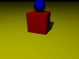
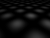
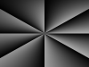
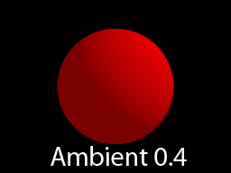
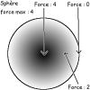
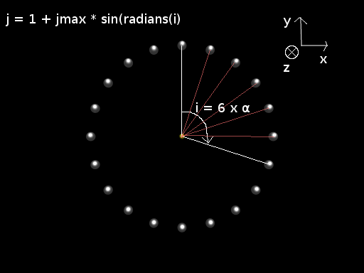
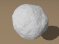
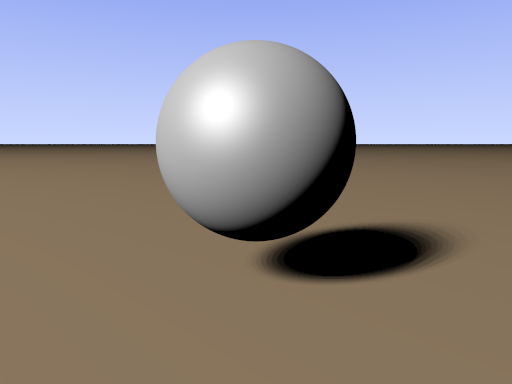

Vous avez adoré Monstres & Cie, Shrek ou Final Fantasy ?... :lol: Vous avez toujours voulu créer vos propres images de synthèse ? Mais vous ne voulez pas dépenser un rond pour ça ?... :euh:
Pas de problème !
Je vous présente POV-Ray, l'un des meilleurs moteur de rendu 3D entièrement gratuit... ;)
POV-Ray est, comme je vous l'ai dit, un Rendeur de scène, et non un Modeleur (comme l'excellent Blender, par exemple). Qu'est-ce que ça veut dire ? Vous n'avez qu'a lire ! :p
C'est bien joli, tu nous dis que c'est un moteur de rendu... mais c'est quoi exactement ???
POV-Ray est un moteur de rendu, c'est à dire qu'il se contente de la phase finale de création d'une image : il transforme la description de la scène en une image de synthèse jolie tout plein :D . Toute la partie de conception de la scène reste à faire. Il faut en plus savoir comment décrire cette scène, pour que le programme puisse l'interpréter correctement...
Les modeleurs, quant à eux, sont principalement tournés vers cette première partie : ils vous permettent de modeler facilement ce à quoi vous pensez.
Modeleurs et moteurs de rendus sont complémentaires : un modeleur est pratique pour créer votre scène, mais un moteur de rendu aura au final une qualité d'image bien supérieure à ce que le modeleur seul peut faire.
Il existe quelques modeleurs spécialement prévus pour POV-Ray, mais ils sont encore assez basiques (POV-Ray a cependant racheté récement Moray, un de ces modeleurs prévus pour fonctionner avec POV-Ray, mais aucune mise à jour n'a encore été effectuée). Il existe des moyens d'utilser vos modeleurs préférés pour fonctionner avec POV-Ray, mais ce n'est pas le but premier de ce tutoriel.
En effet, il existe un autre moyen de créer une image de synthèse, sans passer par un modeleur : écrire directement la description de la scène, à la main.
Pas tant que ça, vous verrez ! :lol: POV-Ray possède son propre langage de description de scène, très efficace et assez simple à apprendre, qui vous permettra d'arriver à de très bons résultats. Et c'est sur cette méthode que porte ce tuto...
Vous voulez voir la puissance de POV-Ray ? Voici quelques images : Une rue sous la pluie Une planète inconnue Des verres Une autoroute Ce ne sont que des exemples de ce que vous pourrez faire (mais il faut avouer que ceux qui ont fait ça sont vachement doués...). Vous comprenez maintenant pourquoi on dit que POV-Ray est "photoréaliste" ?...
Derrière un nom un peu tordu comme POV-Ray se cachent les mots : Persistence Of Vision Raytracer o_O Ça veut dire quoi ? Raytracer, ça veut dire que POV-Ray marche en traçant des rayons. Dans la vraie vie (l'école, la famille, les tournois de Warcraft III, ... :-° ), la lumière vient des sources de lumière, frappe un objet et va vers notre oeil. POV-Ray fait un peu la même chose, mais à l'envers : il "envoie" des rayons depuis la caméra, regarde si ça tape un objet, puis si cet objet est éclairé... ...
Et qu'est-ce que ça change ?
Bon, bon, bon, encore rien, mais c'est toujours bon à savoir, non ? :euh:
Vous verrez, la seule limite à ce que POV-Ray peut avoir, c'est votre imagination...
Bon, bon, c'est vrai que je vous ai un peu raconté des trucs dont vous n'aurez probablement rien à faire de toute votre vie (et moi non plus d'ailleurs), mais maintenant, *ouf*, c'est fini !
Seule une version anglaise est disponible... Mais ne vous inquiétez pas, ce n'est pas grave, je suis là pour vous guider . :D
POV-Ray est disponible pour Windows (32 ou 64 bits), Mac OS ou Linux (mais si vous avez Linux, cherchez d'abord dans votre gestionnaire de paquet, on l'y trouve assez souvent). Choisissez celui qui vous convient...
Ça va, jusque là ? Pas encore perdu ? Bien !
Bon, vous lancez le fichier d'installation... Je vais pas tout vous expliquer quand même ! Une fois que c'est installé, vous pouvez le lancer...
Donc, si vous êtes sous Windows (et peut-être sous Mac OS aussi, je ne sais pas), vous devriez voir apparaître un truc à peu près comme ça :
Au milieu, le texte sur fond blanc, c'est le fichier de description de la scène. Ici, c'est la scène par défaut, donnée avec POV-Ray pour vous montrer un truc joli. ^^ Cliquez sur RUN en haut à droite pour la voir.
Ce bouton RUN lance la "compilation" de votre code : POV-Ray commence à lire votre code pour en faire une image. Les autres boutons sont assez explicites, ceux qui ne le sont pas sont pour le moment inutiles. On verra plus tard ce qu'ils font.
Ça y est, vous avez compris ce qu'est POV-Ray ? Si vous souhaitez continuer, le prochain chapitre vous donnera les bases dont vous aurez besoin avant d'apprendre vraiment le langage de description des scènes.
Bon, je sais que vous êtes impatients de réaliser votre premier chef-d'oeuvre, mais encore un tout petit peu de patience... Voilà les bases de la programmation POV-Ray.
POV-Ray, je vous l'ai dit, transforme un fichier texte en image. Le fichier texte est le descriptif de la scène. C'est VOUS qui décrirez la scène, en écrivant ce qu'elle doit contenir. La description de la scène se fait avec un langage spécifique à POV-Ray, qui ressemble assez à de nombreux langages déjà existants ; il est séparé en 2 parties :
un langage de description brut : c'est celui que nous verrons tout d'abord. Il permet d'ajouter les objets à la scène. Ce langage est nécessaire à toute scène. Pour ajouter un objet, il suffit d'écrire le mot-clé correspondant à cet objet hors de toute description.
Un autre langage, qui ne sert pas directement à la description de la scène, mais qui peut s'avérer très utile. Il permet d'exécuter des boucles, de traiter des variables, etc... Nous l'étudierons plus tard.
Le langage de description de scène de POV-Ray n'est PAS difficile. Il emploie de mots-clés qui seront évocateurs aux anglophones, et qui seront (pour la plupart) faciles à retenir pour les autres...
Quand je vous dit "L'espace", vous pensez à quoi ? -> A Star Wars !
Bon, l'espace, c'est... le monde. Le monde en 3 dimensions en fait, tel que nous le percevons (on va pas chipoter sur le temps ^^). Pour pouvoir se repérer, l'ordinateur va représenter cet espace par un repère, comme quand il le fait en 2 dimensions. En 2D, il y a les x et les y (ça vous rappelle les cours de maths ?... :p ), et chaque point peut être repéré par ces deux coordonnées. En 3D, c'est pareil... sauf qu'il y a en plus la profondeur, les z.
Mais puisqu'un schéma est mille fois mieux que tout ce que je pourrais vous dire, voilà une représentation des axes de l'espace :
Comme vous pouvez le voir, en haut c'est +y, en bas c'est -y, à droite c'est +x, à gauche -x, devant c'est +z et derrière c'est -z. Retenez ça, c'est un point FONDAMENTAL.
Par exemple, un point de coordonnées (x = 1,y = 2,z = 3) sera un peu à droite, un peu en haut, et assez devant vous (si vous vous tenez en x=0,y=0,z=0).
Bon, maintenant vous savez localiser un point dans l'espace. Mais reste à savoir le faire comprendre à POV-Ray ! Les coordonnées dans POV-Ray sont notées sous la forme de vecteur : <x,y,z> (où vous remplacez, évidemment, x, y et z par les coordonnées réelles de l'objet). Par exemple, pour noter les coordonnées (x = 5,y = -2, z = 0.2) il faudra écrire...
<5,-2,0.2>
Vous aviez trouvé ? :lol: Trop facile hein ?
Encore une chose à propos des vecteurs de positions : des raccourcis existent... :D Par exemple, au lieu de faire <0,1,0> (qui correspond à... x=0, y=1 et z=0), vous pouvez tout simplement écrire "y" ! De même, x et z correspondent respectivement à <1,0,0> et <0,0,1> De plus, vous pouvez les multiplier et les ajouter :
2*y correspond à <0,2,0>
x+3*z correspond à <1,0,3>
(7/2)*x+2*(z+2y) correspond à <3.5,4,2> o_O
Ça simplifie assez souvent la lecture (sauf dans le dernier cas... :-°)
Voilà, vous savez maintenant écrire les coordonnées d'un point en vecteur ! Avouez que jusque là, ce n'était pas VRAIMENT difficile... n'est-ce pas ? (Mais non, je veux pas dire qu'à partir de maintenant ça va devenir impossible, roooh...)
Vous verrez, faire de jolies formes, c'est cool, mais vous allez vite vouloir donner un peu de couleur à vos scènes...
Les couleurs que nous connaissons (vert, violet, orange, turquoise, rose fushia, coca-cola) se composent de 3 couleurs : vert, bleu, et rouge. Le noir correspond à rien du tout (0 de rouge, de bleu et de vert), tandis que le blanc correspond au max de chaque... si vous avez un peu l'habitude des ordinateurs, je ne vous apprends rien. ^^
Dans POV-Ray, ces valeurs vont de 0 (rien du tout) à 1 (max). Le blanc correspond donc à (rouge = 1, vert = 1, bleu = 1), et le noir (rouge = 0, vert = 0, bleu = 0)... Maintenant, à votre avis, comment on va dire à POV-Ray qu'on veut 0.164486 de rouge, 0.68412 de bleu et 0 de vert ??? :o Les vecteurs ! :lol: Mais pour différencier ces vecteurs à 3 couleurs des anciens vecteurs à 3 coordonnées, on va placer devant le vecteur un petit mot-clé qui va lui dire qu'on donne des valeurs de rouge, vert et bleu, et non x, y et z : on va ajouter "rgb" (pour Red Green Blue) : rgb <1,0,0> donnera un rouge pur. rgb <0,1,0> donnera du vert. rgb <0,0,1> donnera un joli bleu. Bien entendu, les décimales sont acceptées : <0.5,0.5,0.5> donnera du gris <0.1654,0.654684,0.3213> donnera du... euh... bah, essayez. ^^
Et voilà pour les couleurs ! Cette fois, il n'y a pas de raccourcis directement intégrés dans POV-Ray pour faire des couleurs déjà préparées. Il existe un autre moyen d'accéder à des raccourcis, mais nous verrons ça plus tard.
POV-Ray ne force aucune échelle de distance... En effet, les distances se comptent en "unités". C'est à vous de choisir, si vous souhaitez utiliser 1 unité pour 1 mètre, pour 1 cm, 1 km, 273.5 mètres, etc. Bah oui, c'est normal : qu'est-ce qui fait, dans la vie, qu'une chose est grande ?
La vitesse à laquelle nous nous déplaçons. Vous aurez beau rouler en voiture, une montagne paraîtra avancer très lentement, ce qui ne sera pas le cas pour un lampadaire.
Les autres objets autour : si un homme se tient prêt de votre boîte et arrive à la moitié, vous conclurez que votre boîte est grande...
Ainsi, vous êtes libres d'utiliser l'échelle de votre choix, tant que vous l'appliquerez à tous les objets de votre scène. Lors de scènes réalistes, je vous conseillerais d'utiliser 1 unité = 1 mètre, par simplicité...
Dernière petite chose, vous pouvez, à la place de n'importe quelle valeur numérique, mettre une opération. Par exemple, 6/3 au lieu de 2, (3+0.5)*(2-1) pour 3.5, etc...
Ce n'est pas forcément super utile, mais ça peut vachement aider, parfois... enfin, vous verrez bien !
Et voilà ! A présent (et cette fois-ci, pour de bon !), vous savez tout ce qu'il faut savoir pour commencer... Dans le prochain chapitre, nous entamerons immédiatement votre première scène !!
Si déjà, vous lancez le rendu (en appuyant sur RUN en haut à droite), vous obtiendrez... un truc noir. :colere2: Bizarre ? Pas tellement ! :o Bah oui, y a ni caméra, ni lumière ! Donc vous ne regardez rien, de nulle part, et sans aucune chance de le voir. o_O Sympa, hein ? ... La première chose à mettre dans une scène est une caméra, ou un appareil photo, histoire qu'on puisse voir ce qui se passe dans ce monde en 3D. Appareil photo se dit camera en anglais, donc le mot pour le désigner sera... camera !!! (Pour plus de compréhension, j'écrirai camera, et non appareil photo par la suite, bien que ce soit une erreur de traduction... en plus, c'est moins long à écrire :p ) Allez, écrivez camera en haut de la page... Mais bon, marquer juste ça ne suffit pas ! Bah oui, comment POV-Ray fait pour savoir où elle est, où elle regarde ?
Donc, juste après camera, écrivez {. On saute quelques lignes où on mettra les infos, et on referme : }. Voilà ce que ça devrait vous donner jusque là :
camera {
}
Bon, maintenant, on va lui dire où elle est... On va la mettre en <0,1,-3>, c'est-à-dire un peu au-dessus et un peu derrière l'origine, qui est <0,0,0>. Le mot à employer pour donner la position de la camera est location (position en anglais), suivi du vecteur correspondant à la position. Ensuite, on va indiquer où regarder : on va mettre <0,0,0>, l'origine. Le mot à employer pour dire où l'on regarde est look_at, suivi du vecteur position de la cible. Donc, si vous avez suivi, le code total à mettre pour la camera est...
camera {
location <0,1,-3>
look_at <0,0,0>
}
Okay, la camera est finie ! :D Mais si vous lancez le rendu, toujours un truc noir. :(
Bah oui, il n'y a toujours pas de lumière ni d'objet... Mais ça viendra !
Le deuxième truc essentiel dans une scène est justement la lumière. Ou une source de lumière, pour être plus précis. Le mot-clé à employer est light_source. Le premier paramètre à lui donner est sa position, mais cette fois directement en vecteur, sans mot devant. Le deuxième est la couleur de la source de lumière. Nous, on veut une lumière blanche, venant de 3 au-dessus de nous. La position de la lumière sera donc...
<0,4,-3>
La couleur blanche étant rgb <1,1,1>, le code vient tout seul !
light_source {
<0,4,-3>
rgb <1,1,1>
}
Et le tour est joué ! :)
Voilà, maintenant vous devriez être capables de faire vos propres camera et sources de lumière. Si la camera doit être unique (logique ^^ ), il n'en est rien des sources de lumière : vous pouvez facilement avoir 10, 30, 2056 sources de lumière dans votre scène si vous le voulez... Ça ne dépend que de vous !
Encore une fois, le rendu ne donnera rien qu'une fenêtre noire. Cette fois, c'est juste qu'il n'y a rien à voir. Allez hop, on va lui ajouter un sol !
Bon, on y est presque, plus qu'à ajouter un objet à notre scène pour le voir. :D On va commencer par ajouter un sol... enfin un truc plat et grand, quoi. :lol: On va utiliser plane : ça va nous donner un... plan. Un truc plat, immense (infini, en fait).
Infini ??? :o C'est pas un peu grand ??
Meuh non ! :lol: Vous verrez, ça ira très bien pour faire le sol. plane prend 2 paramètres. Le premier, c'est le vecteur normal.
Normal ?? o_O Tu veux dire qu'il y a des vecteurs pas normaux ??
:D Un vecteur normal, c'est un vecteur "perpendiculaire" au plan. Par exemple, ici, pour un plan horizontal, le vecteur normal sera... vers le haut ! (ou vers le bas, ça marche aussi) Donc le vecteur normal sera <0,1,0>. On pourrait aussi bien utiliser <0,5,0> ou <0,-0.001,0> mais <0,1,0> c'est... plus... clair. Sauf que c'est toujours pas vraiment clair... quand on voit <0,1,0>, on ne devine pas au premier coup d'oeil que c'est directement vers le haut. Donc, on va utiliser un des raccourcis qu'on a appris ! Vous vous souvenez ? y = <0,1,0>. Donc on aura qu'à mettre y ! Avouez que c'est plus clair, non ?
Le deuxième paramètre, c'est la "hauteur" du plan, de combien on le "glisse" le long de l'axe normal. Ici, si on met 1, ça le mettra à la hauteur y = 1... c'est pas vraiment ce qu'on veut ; nous on veut au sol, à 0. Donc on met : y = 0.
Donc ?... A votre avis, ça va donner quoi comme code pour notre plan ? :o Bon, je ne suis pas méchant, je vous le donne : :D
plane {
y
0
}
Mais si vous avez suivi, vous devriez l'avoir trouvé tout seul ^^ .
:colere2: Tu te fous de nous ? Je fais ça et j'ai toujours tout noir !
Eh bah oui, c'est normal ! Le plan est bien là, et n'attend qu'à être vu, mais il n'a pas de couleur : il est tout noir ! Voilà pourquoi on ne voit rien... Hop là, on va lui donner une couleur jaune : rgb <1,1,0>. Pour ça, on ouvre une zone dans notre plane : pigment. Regardez comment ça marche :
plane {
y
0
pigment {
}
}
Vous voyez le genre ? On insère une zone pigment dans la zone plane. pigment sert à indiquer le MOTIF de l'objet. On va lui dire qu'on veut un truc jaune. Pour ça, il suffit de mettre la couleur dans la zone pigment. Allez, voilà le code :
plane {
y
0
pigment {
rgb <1,1,0>
}
}
Et voilà ! Et là, enfin, si vous rendez, ça devrait marcher ! *Youpi !*
Euh, on n'a pas mis de zone pigment avec la lumière, pourquoi ?
Parce que la lumière prenait la couleur directement comme paramètre, c'était obligatoire. Ici, la couleur n'est qu'un plus : c'est pour ça qu'on l'ajoute dans une zone pigment. Si vous ne comprenez pas (et c'est vrai que ce n'est pas trop clair), apprenez simplement par cœur qu'on utilise la zone pigment pour donner une couleur, SAUF avec la lumière ^^ .
Bon, pour ceux qui sont perdus, voici le code final de la scène :
Bon, ce n'est pas encore exceptionnel, mais on voit que c'est un sol, non ?... Allez, ne vous découragez pas, on va ajouter des trucs marrants, maintenant.
Bon, on a déjà un joli sol jaune... Il est temps d'ajouter à la scène un nouvel objet : une boîte ! La boîte est l'un des objets basiques de POV-Ray. C'est en fait un pavé : comme un rectangle, mais en 3D. Le mot-clé pour faire une boîte est box. box prend 2 paramètres : deux vecteurs-positions, correspondant à deux coins de la boîte.
Hein ?? Je pensais qu'une boîte avait 8 coins !! Pourquoi on en donne que 2 ?
Parce que POV-Ray se charge de trouver les autres ! En fait, on ne donne à POV-Ray que 2 points opposés. Voilà une image pour mieux comprendre. Pour faire la boîte, vous pouvez donner les deux points rouges, ou bien les deux points bleus, ou les deux jaunes, ou encore les deux verts. Ça donnera la même chose.
Attention ! Les deux points DOIVENT être opposés, sinon POV-Ray ne pourra en faire une boîte, et retournera un message d'erreur. De plus, ces deux points ne peuvent avoir AUCUNE coordonnée commune : les deux valeurs de x doivent être différentes, comme celles de y ou de z. Ceci est dû au fait que les faces de la boîte suivent les axes.
Encore une chose : les box sont toutes dans le même sens : la face du haut sera toujours horizontale, les faces latérales seront toujours verticales et parallèles aux axes z et x, etc... Si ça peut paraître contraignant au début, on verra bientôt comment contourner ce léger problème.
Nous, on veut une boîte cubique de 1 de côté, posée sur le sol, et "centrée en 0" sur les axes x et z.
Qu'est-ce que ça veut dire, centrée en 0 ??
Centrée en 0, ça veut dire que le centre de l'objet (ici, la boîte) se trouve au point de coordonnées 0. Dans notre boîte, comment on fait ? On réfléchit ! Si le centre est en x = 0 et z = 0, alors notre boîte sera symétrique par rapport à l'axe des x et des z, non ? Donc, normalement, elle devrait aller aussi loin de chaque côté (aussi loin en x positif qu'en x négatif, et pareil pour les z).
Je pige toujours rien !
Bon, ce n'est pas vraiment grave... vous comprendrez en regardant le code :
box {
<-0.5,0,-0.5>
<0.5,1,0.5>
}
Et voilà notre boîte. Vous pouvez regarder, de -0.5 à 0.5, cela fait bien 1 de côté ; et de 0 à 1 aussi : on a bien un cube. Le point le plus bas (le premier point) est en y = 0, donc la boîte est bien posée sur le sol. Elle va de -0.5 à 0.5 en x et en z : elle va donc aussi loin en positif qu'en négatif. Le centre est donc en 0 : notre boîte est centrée sur 0 pour les axes x et z !!
Si vous ne comprenez toujours pas, ne paniquez pas. Ce point est le plus (enfin un des plus) délicat à comprendre, donc n'hésitez pas à relire. Le principe en lui-même n'est pas spécialement compliqué, mais il peut vous falloir du temps pour voir quoi comprendre...
Bon, euh, j'ai à peu près compris. Mais... ça sert à quoi d'avoir centré notre boîte comme ça ?
Pour l'instant, à pas grand chose de spécial. Mais vous verrez que plus tard, c'est vachement utile de savoir le faire. Ça nous a quand même permis de placer la boîte en plein milieu du champ de vision ! Mais... si vous rendez la scène, vous verrez le joli sol jaune de tout à l'heure, et un truc bizarre tout noir au milieu. o_O Pourquoi ?... Parce que, comme le sol, la boîte est par défaut noire ! Donc, on va lui ajouter une couleur, tout comme on l'a fait pour le sol : en mettant une zone pigment. Allez, on lui donne une belle couleur rouge. Voilà le code final :
Et le tour est joué ! Vous devriez obtenir quelque chose comme ça :
Bon, c'est toujours pas top, on ne voit pas bien le cube, seulement une face. Et si on réfléchit, c'est normal : la camera est en <0,1,-3> : elle n'est pas plus haut que le cube qui va jusqu'en y = 1, elle n'est pas plus à gauche que le cube qui va jusqu'en x = -0.5, et n'est pas plus à droite du cube, qui va jusqu'en x = 0.5. Résultat : on ne voit qu'une face. Donc, on va se mettre un peu plus haut et un peu plus à droite. Et plus précisément... en <1,1.5,-3>, comme ça on pourra voir 3 faces.
Bon, voilà un petit rappel du code entier de la scène :
Et voilà ! Vous avez réussi à faire votre propre boîte ! Essayez de changer les couleurs pour voir ce que ça fait, de changer un peu les coordonnées de la boîte, etc.
Bon, on a un sol et une boîte, ça vous dirait d'ajouter une sphère ? (Comment ça, non ??? C'est moi qui commande ici !) Le mot-clé pour ajouter une sphère, c'est sphere. Elle prend 2 paramètres : le vecteur de position du centre de la sphère, et le rayon de la sphère. C'est tout simple, et il n'y a même pas de piège ( :( )... Mais on va essayer de faire un truc rigolo : on va placer le centre de la sphère juste sur le centre de la surface de la boîte, comme ça, on ne verra que la moitié de la sphère. Bon, ok, ok, c'est pas super rigolo, mais... mais... ...
La boîte va jusqu'à y = 1, et centrée en 0 pour les x et les z. Donc, le centre de la sphère n'a qu'à être en <0,1,0>, compris ? On va mettre un rayon de 0.3, donc le code devrait être comme cela :
sphere {
<0,1,0>
0.3
}
Et on n'oublie pas les couleurs, cette fois (eh oui, il faut faire ça à chaque objet !), on va faire une sphère bleue (le bleu = rgb <0,0,1>). Donc, le code de la sphère bleue :
sphere {
<0,1,0>
0.3
pigment {
rgb <0,0,1>
}
}
Et voilà le résultat :
Sympa hein ?
Allez, deuxième exercice de placement : on va essayer de changer le centre de la sphère (mais que le centre) pour que le bas de la sphère touche, mais à la limite, le haut de la boîte. Pour faire ça, on va juste monter le centre, mais de combien exactement ?... Allez, un petit dessin, et on va comprendre tout de suite ce qu'il faut faire : Comme vous le voyez, la hauteur du centre doit être de 1 + 0.3, ce qui fait 1.3. Et voilà, le tour est joué ! Le code devrait alors ressembler à ceci (pour la sphère) :
sphere {
<0,1.3,0>
0.3
pigment {
rgb <0,0,1>
}
}
Et voilà le résultat :  Bon, on voit pas grand chose, la sphère est trop haute. Un problème ? Mais non ! On n'a qu'à regarder plus haut. Vous vous souvenez comment régler le point que l'on regarde ? (psst, dans la camera, le look_at !!) Allez, on regarde plus en <0,0,0>, mais en <0,1,0>. Je vous laisse modifier !
C'est tout pour la sphère ! Entraînez-vous à en faire, ce n'est vraiment pas difficile.
Bon, voilà, vous savez maintenant commencer vos propres scènes, y ajouter un sol, des boîtes et des sphères. C'est déjà pas mal ! Entraînez-vous bien avec cela, c'est en pratiquant que l'on progresse. N'hésitez pas à employer plusieurs lumières, boîtes ou sphères dans vos scènes !
Dans le prochain chapitre, nous verrons les derniers objets basiques que nous pourrons placer...
Bon, après la boîte et la sphère, voilà le cylindre :D ... Très simple, le cylindre emploie le mot-clé cylinder, et a 3 paramètres : les deux premiers sont des vecteurs-positions, indiquant les 2 extrémités du cylindre ; le troisième est le rayon du cylindre.
On va essayer de faire un autre truc rigolo (hey, ne vous moquez pas de moi !) : on va faire passer le cylindre à travers la boîte... Voilà l'image que ça donnera : Vous voyez le genre ? Le cylindre est symétrique par rapport au centre de la boîte, a une longueur de 3, et un rayon de 0.3. Alors, à votre avis, comment situer les deux extrémités ? Bon, je suis gentil, je vous le dis :
Vous voyez pourquoi ? Le cylindre est "centré en 0" pour les x, donc les deux extrémités ont des valeurs de x opposées. Pour que le cylindre passe au milieu de la boîte, la hauteur doit être la moitié de celle de la boîte, c'est-à-dire 0.5. Enfin, le centre de la boîte est en z = 0, donc... J'ai mis une couleur verte, mais j'imagine que maintenant vous savez mettre la couleur vous-mêmes...
Bon, on a ajouté un cylindre, maintenant on va mettre un cône... Dans POV-Ray, les cônes ne sont pas forcément pointus ! o_O En fait, un cône, c'est juste un cylindre, où les deux extrémités ont des rayons différents. Si l'un des rayons est de 0, il est pointu ^^ . Le mot-clé pour un cône est cone... Je vous l'avais dit, les noms sont assez simples à retenir. Le cône prend 4 paramètres (oui, tout ça !) :
un vecteur-position, indiquant la première extrémité.
Le rayon de la première extrémité.
Un autre vecteur-position, indiquant la deuxième extrémité.
Le deuxième rayon.
Tenez, voilà comment on va mettre notre cône : La première extrémité sera donc au milieu de la première face de la boîte, avec un rayon de 0.3, l'autre un peu plus loin, avec un rayon de 0.
Le centre de la face avant ? Pas trop dur à calculer ! x = 0, y = 0.5 et z = -0.5 (vérifiez si vous voulez, c'est ça !) Donc, la première extrémité sera en <0,0.5,-0.5> avec un rayon de 0.3. La seconde sera un peu plus loin, disons en <0,0.5,-1>, avec un rayon de 0. Voilà donc le code :
Et voilà pour le cône ! Surtout, comme pour le cylindre, n'oubliez pas de mettre des valeurs différentes aux deux extrémités. C'est une erreur très fréquente...
Bon, pour finir notre jolie scène, on va ajouter un anneau. Un donut, si on veut. Le mot-clé est torus (tore en anglais). Le torus prend 2 paramètres : deux valeurs de rayon : r1 et r2.
Quoi ?? Et comment je lui dis où il est ?? Y a pas de position ??
Eh non ! Je sais, cela peut paraître étrange... Je ne sais pas exactement pourquoi on ne peut pas spécifier de position, mais c'est comme ça ! Ne vous inquiétez pas pour autant, nous verrons dans le prochain chapitre comment résoudre ce problème, mais en attendant, on va le laisser où il est.
Et où il est au juste ?
Centré en 0 ! Tenez, voici un schéma rapide pour vous montrer comment POV-Ray construit le torus avec les 2 rayons r1 et r2 que vous lui donnez : Vous comprenez à peu près ?... Super !
Bon, puisque l'anneau est par défaut centré en 0, et que nous, on a un sol en y = 0 justement, l'anneau sera coupé en deux par le sol. Tant pis ! Regardez ce qu'on va faire (l'anneau est en bas, à moitié coupé, en bleu-vert) : J'ai utilisé pour rayons 1 et 0.1, et comme couleur rgb <0,1,1>. Voilà le code de ce torus :
Et voilà ! On a réussi ! Je sais, ça doit encore être le fouillis pour vous...
Le prochain cours nous apprendra à faire beaucoup de choses jusqu'alors impossibles, mais avant cela, on va faire un petit TP pour tout réviser !
Et voilà ! Boîtes, sphères, cylindres, anneaux et cônes vous permettront déjà de réaliser de nombreuses scènes. Je le répète, entraînez-vous, c'est le meilleur moyen pour progresser. Comme vous l'avez sûrement déjà remarqué, la partie la plus difficile est de savoir ce que l'on veut faire, comment placer ses objets... Le mieux est encore de dessiner ce que l'on veut faire (sur papier, ou même sur un logiciel de dessin).
Je vous ai assez fait souffrir avec tout ce cours théorique... Maintenant, on va faire un petit TP : vous allez réaliser une tour du futur (ou un truc qui y ressemblera... vous n'êtes pas encore des pros, tout de même !). Pourquoi du futur ?... Eh bien... ahem... parce qu'on ne peut faire que des formes assez simples, pures et arrondies... et que c'est justement comme ça qu'on imagine le futur ! Vous le verrez, chercher un look futuriste est bien plus facile que de s'attaquer à des modèles plus réalistes...
Bon, je vous l'accorde, réaliser cette tour tout seul n'est pas très facile... Cependant, la grande difficulté n'est pas dans le langage, mais dans la conception de la scène ! Le plus difficile dans une scène en 3D est de bien positionner les objets, et non de savoir comment les coder...
Partie 1 : caméra et lumière
Cela ne faisait pas partie du plan donc c'était à vous de trouver comment les placer. Pas de règle à ce niveau là, à partir du moment où on arrive à reconnaître la tour sans soucis. Faites attention à ne pas placer la caméra à l'intérieur de l'objet, on n'y voit pas grand chose !
Il reste bien entendu les couleurs à ajouter. À vous de jouer ! ;)
Partie 3 : passerelle et tour d'observation
On va dire que la petite tour annexe est une tour d'observation, ça fait plus sérieux. :-°
Pour la passerelle, toujours rien de bien compliqué : un simple cylindre qui part vers la droite.
cylinder {
6.5*y,
6.5*y + 4*x,
0.5
}
La tour d'observation est constituée d'un cylindre central, et d'une sphère à chaque bout pour avoir les extrémités arrondies. Il suffit alors de faire correspondre les rayons et les centres !
Aaah, c'était ça le machin bleu ?!? On ne critique pas, c'est de l'art ! :colere2:
Toujours rien de sorcier, une simple grande boîte :
box {
<0, 0, -0.15>
<1.3, 9, 0.15>
}
Partie 5 : tête de tour
Je suis à court de justification pour la partie gonflée en haut de la tour. Ça donne un air de contrôleur de trafic aérien, mais on a déjà utilisé le coup de la tour d'observation. On va donc juste l'appeler la tête de tour.
Un petit cône pour élargir, puis un cylindre.
cone {
8*y, 1
9*y, 2
}
cylinder {
9*y,
11*y,
2
}
Il reste encore les quatre petits modules à ajouter de chaque côté. Ils ressemblent à la tour d'observation : un cylindre, et une sphère à chaque bout.
Il reste à le copier en multipliant les x par -1 pour obtenir le symétrique. Puis copier les deux en échangeant les x et les z pour les deux derniers. Ça commence à prendre de la place, je vous fais confiance pour cette fois...
Partie 5 : le toit
Enfin, le toit de la tour. On va le séparer en trois parties : le sol, la sphère, et les deux tours.
On va commencer par les deux tours. Elles sont chacune divisées en 3 segments : un cylindre, puis deux cônes. Voilà la plus grande :
Pour le sol, il y a deux épaisseur, chacune de 0,05. La première est un cylindre :
cylinder {
11*y,
11.05*y,
1.75
}
La deuxième une croix composée de deux boîtes et d'un cylindre à chaque bout. Deux bouts sont déjà occupés par les tours, donc il reste deux cylindres à ajouter.
Bon, elle n'est clairement pas parfaite. Nos boîtes ont l'obligation d'être alignées avec les axes du repère. On ne peut pas placer d'anneau où l'on veut.
Et puis, ce n'est même pas tout ! Tout a l'air plastique, plat et triste. Les couleurs peu variées y sont peut-être pour quelque chose, mais pas uniquement.
Et enfin, je ne sais pas pour vous, mais j'ai trouvé ça bien fastidieux. Indiquer à chaque fois la même couleur pour tous les objets blancs était assez ennuyeux. Faire l'entrée avec les trois boîtes n'était pas très pratique. Bref, on avait l'impression de faire des choses compliquées, pour au final quelque chose d'assez simple. Pas très optimal tout ça.
Mais tout n'est pas si sombre : avec des éléments simples, on a réussi à avoir un résultat ma foi fort satisfaisant (comment ça, je me contente de peu ? :p ) ! Vous l'aurez compris, ces critiques servaient surtout de petite transition, vers des chapitres où tous ces défauts disparaîtront enfin. :)
Vous aimeriez faire une espèce d'ovale, une sphère allongée ? Vous voulez ENFIN bouger votre torus ?? Vous voulez mettre vos boîtes comme vous le voulez ? No problemo !Translate, rotate et scale n'attendent que ça !
Tout d'abord, attaquons-nous au problème de l'anneau. On ne peut pas choisir sa position, qui est par défault <0,0,0>. Mais on va apprendre à le bouger !
D'abord, voyons un code habituel d'anneau :
torus {
1.2
0.2
pigment { rgb <1,0,0> }
}
Cela nous donne un anneau, positionné en <0,0,0>. Maintenant, on va ajouter, à la fin (après la zone pigment mais avant le "}" de la fin de l'anneau) le mot-clé translate suivit d'un vecteur, par exemple <0,1,0> :
Qu'est-ce que ça va nous faire ? Ca va d'abord créer l'anneau, lui donner sa couleur, puis ça va le bouger de <0,1,0> !! Puisque le centre était à la base de <0,0,0>, le nouveau centre sera de <0,0,0> + <0,1,0> = <0,1,0> ! Il suffit donc de mettre dans le translate la position du torus pour le mettre où l'on veut !
Encore un exemple : pour placer le torus en <-1,1,3>, quel sera le code ?...
Maintenant qu'on a vu comment bouger un objet, on va voir comment le tourner. Voilà un petit problème : Comment pourrait-on faire quelque chose comme ça ? La barre bleue du milieu ne pose pas trop de problème, mais comment faire une barre qui soit inclinée comme la rouge ?... C'est là qu'on a besoin de rotate ! Ce mot-clé s'emploie exactement comme translate, mais rotate fait tourner l'objet au lieu de simplement le déplacer. Il est suivit d'un vecteur, mais ce n'est pas ici un vecteur de position, comme pour translate, mais un vecteur d'angle (en degrés). Vous pouvez ainsi faire tourner votre objet autour d'un axe de l'angle de votre choix...
Maintenant, on va la tourner autour de l'axe des y de 30° comme sur le schéma : Attention à ne pas se tromper dans le sens ! Pour tourner la barre de 30° vers la droite, il faudrait la faire tourner de -30° !
On fait donc tourner la boîte de 30° autour de l'axe des y. Le vecteur angle sera donc <0,30,0> !
Bah non, c'est normal ! En effet, la rotation a pour centre <0,0,0>. Voilà donc comment s'est passée la rotation : Ca explique tout !
Mais alors, comment peut-on tourner la boîte sans la déplacer ??
Souvenez-vous, quand nous avons fait tourner la barre bleue sans changer son centre... Vous savez pourquoi ? Parce que son centre était <0,0,0> ! Et que ce point ne bouge jamais lors d'une rotation. C'est donc ça la solution ! Pour faire tourner un objet sans le déplacer, il faut qu'il soit centré en 0...
Et si l'on veut qu'il soit ailleurs ?... On n'a qu'à le bouger après la rotation ! Avec un translate situé après le rotate !
Voici donc ce qu'il aurait fallu faire pour tourner la boîte en la laissant où elle est :
Rotate et translate permettent de positionner un objet comme on le veut, en le déplaçant ou en le tournant. Scale est un petit peu différent : il multiplie les distances. Il est suivit d'un vecteur de rapport.
Qu'est-ce que ça veut dire ?
Prenons une boîte cubique de 1 de côté, centrée sur 0. Le code est tout simple :
box {
<-0.5,-0.5,-0.5>
<0.5,0.5,0.5>
}
A présent, utilisons scale, avec le vecteur <2,2,2>, c'est à dire un rapport de 2 dans les 3 axes.
Qu'est-ce que ça change ? :o A gauche, la boîte normale. A droite, la boîte avec scale. Vous voyez la différence ? scale a aggrandit la boîte en multipliant par le rapport (qui est ici 2) toutes les longueurs.
Pourquoi faut-il faire attention ? Voilà un exemple : on retrouve notre chère boîte verte, que l'on veut cette fois aggrandir : On ajoute un scale <2,2,2> à la boîte... et voilà le résultat : o_O Mince, la boîte est partie en haut à gauche... Normal ! C'est le même problème qu'avec rotate : scale multiplie TOUTES les distances, y comprit la distance origine - objet ! Notre scale <2,2,2> a donc doublé la distance qui séparait notre boîte de l'origine, en plus de l'avoir aggrandit !
Sacré problème ! Mais comment y remédier ? Exactement comme avec rotate ! Avec scale tout comme avec rotate, l'origine (le point <0,0,0>) est un point fixe : c'est à dire qu'il ne bouge pas. Pour ne pas déplacer l'objet, il suffit donc de placer son centre en <0,0,0>, d'utiliser scale, puis de le bouger avec translate !!
Bon, jusque là, scale n'a pas été vraiment très utile : on aurait pu agrandir la boîte dès le départ...
Cette fois-ci, on va l'utiliser un peu différement...
Voici d'abord un code d'une simple sphère de rayon 1, que l'on étire avec scale :
sphere {
<0,0,0>
1
scale <2,2,2>
}
Le résultat est une sphère de rayon 2 ; le centre ne bouge pas puisque c'est <0,0,0>.
Voilà ce que ça donne : Ca, on aurait pu le faire tout simplement en donnant un rayon de 2 au début, au lieu de 1... scale est donc un peu inutile.
Mais on va changer le vecteur de rapport : on va mettre <1,2,1>. Vous voyez ce que ça va faire ?... Ca va multiplier par 2 la hauteur de la sphère, et par 1 la largeur et la profondeur... Et voilà le résultat : Marrant, non ? :D scale permet d'étirer les objets de manière non uniforme, c'est à dire différement suivant les axes. Essayons avec un torus : Ca nous donne une espèce de bague... ^^ Essayez avec les cylindres, les cônes, ... en variant le vecteur de rapport, on peut arriver à des choses plutôt sympa !
Surtout, n'oubliez pas que scale multiplie TOUTES les distances. C'est un peu comme si tout ce que vous avez mis dans la description de l'objet, que ce soit des vecteurs ou des rayons, est multiplié par le rapport.
C'est tout pour translate, rotate et scale ! Translate est très simple à utiliser, mais rotate et scale néscessitent une attention supplémentaire, du fait de leur centre... Aussi, il est toujours plus pratique de travailler avec des objets centrés en 0 dès leur création, puis de les positionner avec translate.
Grâce à ce chapitre, vous savez à présent comment combler beaucoup de ce qui vous manquait jusqu'alors... Dans le chapitre suivant, vous allez apprendre les dernières bases néscessaires pour faire de vraies scènes !
Dernier de cette partie, ce chapitre vous apprendra à combiner plusieurs objets afin de faire de nouvelles formes, comme une demi-sphère, un cube aux arêtes arrondies, etc...
Non, je ne vais pas vous parler d'une association de parents d'élèves :lol: mais d'associations d'objets, aussi appelées Opérations CSG (pour Constructive Solid Geometry). Ces choses permettent d'utiliser plusieurs objets afin d'en donner un nouveau. Elles sont au nombre de 4 :
L'union
La différence
L'intersection
La fusion
A part l'union, qui se contente d'unir plusieurs objets, les 3 autres opérations tiennent compte de l'intérieur et de l'extérieur des objets. Pour tous les objets que nous avons vus jusque là, l'intérieur et l'extérieur sont bien définis.
Il est possible d'inverser l'intérieur de l'extérieur en ajoutant le mot-clé invert à la fin d'un objet. Ce n'est pas vraiment utile, je ne l'ai personnellement jamais utilisé... Ça n'a aucune influence sur l'apparence directe de l'objet, mais uniquement sur son comportement dans les différentes opérations.
Une association (ou opération) se déclare comme un objet, en écrivant son mot-clé suivi d'accolades, mais prend pour paramètres les différents objets la composant... vous comprendrez mieux dans les explications spécifiques à chaque opération.
Cette union regroupe donc une boîte et une sphère ! :D
Mais... à quoi ça sert ? :o A beaucoup de choses ! :p
Plus sérieusement, l'union a de nombreuses utilités : puisque l'union associe plusieurs objets, toute modification appliquée à l'union sera appliquée sur tous les objets de cette union !
Cela nous donne un cylindre, avec une sphère à une des extrémités. Supposons maintenant que l'on veuille déplacer cet ensemble de <0,0,1>. On pourrait utiliser un translate <0,0,1> pour le cylindre et pour la sphère, mais ce ne serait pas très pratique : à chaque modification, il faudrait modifier les deux... On va donc utiliser une union regroupant le cylindre et la sphère ! Et, en appliquant un translate <0,0,1> à cette union, tout sera ainsi déplacé ! ^^
De la même manière, rotate et scale fonctionne aussi sur les associations d'objets !
Il est également possible d'attribuer une couleur à une union, qui sera donc utilisée pour tous les objets la composant.
Utilisez union lorsque vous utilisez plusieurs formes afin de créer un objet. Même lorsque ce n'est pas directement utile, c'est un grand plus au niveau de la clarté !
Voilà une autre association d'objets que vous utiliserez énormément : c'est la différence, dont le mot-clé est difference. Qu'a-t-elle de si magique ? :o Cette association prend le premier objet, puis lui enlève tout ce qui appartient aux autres. Vous commencez à voir ?
Par exemple, pour faire une demi-sphère, il suffit de faire ça :
Qu'est-ce que ça veut dire ? Que si on regarde par en-dessous, pour voir la nouvelle face créée par la différence, elle sera noire ! Petit problème ! Il y a deux méthodes pour remédier à cela :
Donner la même couleur à la boîte : comme cela, la nouvelle face sera également rouge.
Donner la couleur rouge à la différence au lieu de la sphère.
La deuxième solution est bien plus pratique si notre objet est de couleur uniforme, comme ici !
Voilà tout pour la différence ! Évidemment, comme pour l'union, on peut appliquer des rotations, des translations, etc... directement à la différence !
L'intersection, dont le mot-clé est intersection, est un petit peu moins employée que l'union et que la différence, mais peut s'avérer bien pratique dans certains cas. Elle prend le premier objet, puis lui enlève tout ce qui n'appartient PAS au second, puis tout ce qui n'appartient pas au troisième, et ainsi de suite. L'objet final est donc l'intersection de tous les objets. Voilà un simple exemple : à gauche, l'intersection ; à droite, les deux sphères.
Le mot-clé de la fusion est merge. La fusion est comme une union, sauf que les bords intérieurs de l'objet sont supprimés... Pour l'instant, ça n'a aucune influence sur ce que vous ferez, mais ce sera très utile plus tard, lorsque l'on utilisera des objets transparents. Voilà un exemple de ce que vous pourrez faire plus tard, afin de vous expliquer le fonctionnement de merge : à gauche, deux sphères unies par union ; à droite, les même fusionnées avec merge :
Vous n'êtes pas obligés de retenir ça, on ne l'utilisera que dans la prochaine partie...
C'est tout pour les opérations de CSG ! Évidemment, il est possible de les imbriquer : nous avons déjà vu la différence d'un objet et d'une union, il est aussi possible de faire l'intersection d'une union et de la différence d'une intersection et d'une fusion... o_O
Vous connaissez maintenant toutes les bases de POV-Ray ! Avant de finir cette partie, on va faire un petit TP pour faire... un luth !
Bon, voilà... maintenant, vous savez faire la plupart des objets dont vous vous servirez dans POV-Ray, même plus tard. A ce stade, vous pouvez déjà créer vos premières scènes, plus ou moins basiques... :D
Il donne la couleur de l'objet... o_O Et en quoi c'est différent de ce qu'on sait dans ce cas ?... Et bien, pigment ne se limite pas à une simple couleur unie... on peut, bien sûr, l'employer comme on l'a fait jusque là, mais on peut faire tellement plus de choses : des motifs, des objets transparents, ... vous verrez, on va mettre bien plus dans notre zone pigment que le simple rgb...
Commençons par la couleur elle-même : jusqu'ici, elle se limitait à quelque chose du genre : rgb <1,0.3,0>. Les valeurs étaient comprises entre 0 et 1, pour commencer. Ça peut paraître normal, mais on peut les dépasser ! Une valeur supérieure à 1 commence à "créer" sa propre lumière : si vous mettez un objet de couleur rgb <4,0,0> dans le noir, vous le verrez... De même, mettre une couleur négative aura tendance à supprimer les couleurs...
Les valeurs négatives trouvent peu d'utilité dans les objets, en revanche, elles peuvent obtenir des effets très sympathiques dans les sources de lumière ! Une source de lumière de couleur rgb <-1,-1,-1> aura tendance à absorber la couleur... Bien qu'étant totalement irréaliste, cela peut être utile pour certains effets spéciaux... A l'inverse, donner des valeurs supérieures à 1 à une lumière aura un effet dynamique sur la scène... Essayez, ça ne peut rien vous coûter !
Mais les valeurs de rouge, de vert et de bleu ne sont pas tout. La "couleur" d'un objet peut prendre 2 autres paramètres : transmit et filter. Ces deux paramètres sont tous deux utilisés pour définir une certaine transparence, mais de deux types :
une grande valeur de transmit laisse passer la lumière à travers l'objet sans la modifier. La lumière passera plus ou moins, mais sortira inchangée au niveau de sa couleur.
Une haute valeur de filter laisse passer la lumière, mais en modifiant sa couleur : un objet rouge laissera passer la lumière rouge, etc. Ce paramètre est surtout utilisé pour les filtres (d'où son nom).
Comment utiliser ces paramètres ?... Si on regarde bien, dans rgb <1,0.9,0.5>, r, g et b indiquent chacun le type de paramètre d'une valeur. r pour red, g pour green et b pour blue. Pour indiquer une valeur de filter ou de transmit, il suffit d'ajouter f ou t, selon le paramètre à régler, ou les deux. Ainsi, ce n'est plus 1, mais 4 mots-clés possibles que l'on peut mettre devant un vecteur :
rgb avec un vecteur couleur à 3 dimensions (rouge, vert, bleu)
rgbf avec un vecteur couleur à 4 dimensions (rouge, vert, bleu, filter)
rgbt avec un vecteur couleur à 4 dimensions (rouge, vert, bleu, transmit)
rgbft avec un vecteur couleur à 5 dimensions (rouge, vert, bleu, filter, transmit).
Par exemple, rgbt <1,0,0,0.5> sera un rouge un peu transparent mais n'influençant pas la lumière le traversant.
Autre chose : lorsque la somme transmit + filter dépasse 1, l'objet laisse passer plus de lumière qu'il n'en reçoit, conduisant la plupart du temps à des résultats étranges...
Voilà un simple exemple d'utilisation de transmit :
Voici la meilleure partie de pigment : la possibilité d'indiquer non pas une valeur unie, mais un motif de couleurs (pouvant être transparentes, évidemment).
Pour comprendre ce qu'est un motif, il faut savoir exactement ce qu'est un pigment : c'est un système qui donne à chaque point de l'espace une couleur (qui peut éventuellement être transparente). Oui, vous avez bien lu, à chaque point de l'espace, et non simplement de la surface. Ainsi, lorsque l'objet est opaque, vous n'en voyez que la surface. La couleur de cette surface est obtenue en prenant la couleur que lui attribue le pigment en ce point... o_O Bon, quand la couleur est unie, la couleur est la même dans tout l'espace, donc sur tout l'objet. Mais imaginez qu'il existe un moyen de donner une couleur différente à chaque point en fonction de sa position dans l'espace... Eh bien c'est exactement ce que font les motifs. Les motifs permettent de donner une "règle" à pigment, pour lui indiquer comment positionner les couleurs dans l'espace. La surface de l'objet aura donc la couleur des points dont elle est constituée... :waw: Vous avez compris ?... En gros, pigment donne à chaque point une couleur. Motif permet de faire varier cette couleur, donc de dessiner des espèces de motifs sur les surfaces ^^ , et non de simples couleurs unies.
Pour cela, on commence par vider notre zone pigment :
pigment {
}
Ensuite, on met le type de motif que l'on souhaite utiliser. Il y en a pas mal, je vous les décrirai plus tard. Deux types de motifs sont disponibles :
les motifs "à liste", qui n'utilisent qu'un nombre restreint de couleurs, que l'on spécifie dans une liste (par exemple, rouge et vert uniquement).
Les motifs "à carte", qui utilisent un très grand nombre de couleurs par dégradé des valeurs données.
o_O Tout ça ne doit pas vous dire grand-chose... Mais ça ira mieux quand je vous aurai expliqué !
Les motifs "à liste"
Ces motifs sont en fait les plus simples à comprendre et à utiliser. Imaginez que vous donniez une liste de couleurs, par exemple rouge (rgb <1,0,0>) et vert (rgb <0,1,0>). Le motif va créer des zones, et en remplir certaines de rouge, et d'autres de vert. C'est aussi simple que ça ! Prenons par exemple le motif checker (vous verrez la liste complète des motifs dans le prochain chapitre), qui prend une liste de 2 couleurs. Ce motif crée un échiquier, et donne alternativement aux cases les deux valeurs de la liste. Comment l'écrire, cette liste ? :o Tout simplement en écrivant à la suite les couleurs, juste après le type du motif ! Ainsi,
pigment {
checker
rgb <1,0,0>
rgb <0,1,0>
}
donnera un quadrillage rouge et vert : utilisé dans un plan, voilà le résultat :
Les motifs "à carte"
Les motifs "à carte" (colormap en anglais) assignent à chaque point une valeur allant de 0 à 1, et donne à ce point la couleur correspondante à cette valeur. La "carte des couleurs" permet d'indiquer la couleur en fonction du nombre. Les différents motifs répartissent différemment ces valeurs de 0 à 1...
Par exemple, le motif onion déploie les valeurs de 0 à 1 de manière circulaire et répétée, comme sur le schéma : Ici, blanc = 0 et noir = 1. Là encore, je détaillerai tous les motifs à carte dans le prochain chapitre.
Maintenant, parlons de ce colormap (j'utiliserai ce terme plutôt que "carte des couleurs"). Faut-il définir pour chaque décimale la valeur de la couleur ?... :( Ce serait bien long et fastidieux ! Heureusement, il y a bien plus simple. Pour définir un colormap, il suffit de donner à certaines valeur une couleur spécifique, POV-Ray se chargera alors de compléter le reste en dégradant les couleurs !
Pour bien comprendre comment marche le color_map, voilà un schéma :
Par exemple, sur le plan avec l'onion au-dessus, on avait mis la couleur blanche à la valeur 0, et la couleur noire à la valeur 1 : le dégradé s'est alors fait tout seul !
Pour résumer, On voit bien qu'au final, le pigment permet bien de donner à chaque point une couleur.
Maintenant que la théorie est passée, venons-en aux faits. Nous avons notre zone pigment, nous avons choisi le motif onion. Voici le code jusque là :
pigment {
onion
}
A présent, il est temps de définir le colormap. Pour cela, nous allons mettre une zone color_mapà l'intérieur de la zone pigment :
pigment {
onion
color_map {
}
}
Pour donner la couleur en fonction du nombre, il suffit d'écrire le nombre en question, suivi de la couleur, et cela entre crochets. Ainsi, assigner "blanc" à la valeur 0 se fera ainsi :
pigment {
onion
color_map {
[0 rgb <1,1,1>]
}
}
Vous comprenez ? Et si l'on veut mettre plusieurs couleurs, il suffit d'en ajouter d'autres : voilà donc le code entier du plan que nous avons vu :
C'est tout pour le fonctionnement des motifs à carte !
Assez compliqué ce chapitre, n'est-ce pas ? Tout ça ne peut pas encore vous servir, il vous faut maintenant connaître les différents types de motifs. Malgré tout, un chapitre essentiel... Vraiment !
Dans le dernier chapitre, vous avez appris à vous servir de motifs. A présent, voilà la liste de tous les motifs que vous pourrez utiliser. Ils sont classés en deux catégories : les motifs à liste, et les motifs à colormap.
Voilà la liste de tous les motifs à liste ( :-° ). Vous vous souvenez ?... Les motifs à liste n'emploient qu'un nombre limité de couleurs (souvent 2) et sont donc souvent assez simples.
Checker
Le premier, le plus simple, checker fait un échiquier. Il est très souvent utilisé dans les plans pour bien évaluer les distances. Il ne prend que 2 couleurs.
Encore un autre motif à 2 couleurs, brick donne un effet de briques entourées de ciment : Attention : brick simule un mur de briques empilées, donc aura de meilleurs effets sur des surfaces verticales.
brick est un petit peu particulier : on peut lui attribuer (si on le souhaite) 2 paramètres : mortar et brick_size. mortar, suivi d'un nombre décimal, donne l'épaisseur du joint entre les briques. Sa valeur par défaut est 0.2. brick_size donne les dimensions de la brique en 3D, grâce à un vecteur. Sa valeur par défaut est <8,3,4.5>. Ces deux paramètres doivent être donnés après les couleurs.
hexagon crée un pavage d'hexagones, sur le plan horizontal XZ. Ces hexagones s'étendent indéfiniment sur l'axe Y, donc il est conseillé d'utiliser hexagon sur des surfaces horizontales (comme un plan). Pour utiliser hexagon sur une surface verticale, il suffit de créer la surface horizontalement avant de lui appliquer un rotate approprié ;) . hexagon prend 3 couleurs, et la première correspond à l'hexagone situé en <0,0,0> (même si ce n'est pas super utile à savoir).
object, le dernier motif à liste, est un peu plus compliqué que les autres : il prend 2 couleurs, et un objet en 3D. Il donne une couleur à tout ce qui est dans l'objet, et donne l'autre à tout ce qui est à l'extérieur... En plus, object prend une zone à lui tout seul... Voilà comment s'en servir :
On peut aussi utiliser d'autres objets que des boîtes, des unions, etc...
Ça y est, vous connaissez maintenant tous les motifs à liste ^^ . Bon, c'est vrai, puisqu'ils n'utilisent que 2 ou 3 couleurs, ils sont souvent assez moches, et vous ne les utiliserez que très rarement (à part peut-être checker).
Voici à présent la liste des motifs à "carte", ou colormap. Ces motifs sont très utilisés, et la liste en est très longue. Petit rappel : ces motifs assignent à chaque point de l'espace une valeur allant de 0 à 1, et donne à ces points la couleur correspondante à cette valeur. La carte des valeurs se définit en donnant des couleurs précises à certaines valeurs, les autres étant obtenues en dégradant les couleurs données. On peut donc donner autant de couleurs qu'on le souhaite. Dans tous les exemples, on utilisera la carte allant de noir (0) à blanc (1), c'est-à-dire ayant une colormap comme celle-ci :
color_map {
[0 rgb <0,0,0>]
[1 rgb <1,1,1>]
}
Pour savoir comment utiliser ces motifs, lisez le chapitre précédent.
onion
Le motif à liste le plus simple est onion : la valeur de chaque point correspond à la valeur décimale de la distance entre l'origine et ce point. o_O Concrètement, ce motif déploie les valeurs de 0 à 1 en sphères concentriques, de manière linéaire.
gradient
gradient est un autre motif à liste assez simple. Il prend pour paramètre un vecteur, et déploie les valeurs de 0 à 1 parallèlement à ce vecteur, un peu comme s'il traçait une infinité de plans perpendiculaires à ce vecteur. Voilà un exemple avec un vecteur z sur un plan :
marble est un peu comme un gradient x : il déploie, de gauche à droite, les valeurs de 0 à 1, puis de 1 à 0, puis de 0 à 1, ... Voilà ce que ça donne :
leopard
leopard est utilisé pour représenter... des taches de léopard ! :p  Cela crée des sphères régulièrement espacées, où les centres ont la valeur 1.
quilted
quilted fait des carrés en dégradé : Deux paramètres permettent de régler ce dégradé : control0 et control1, tous deux suivis d'un nombre décimal. Je pourrais vous expliquer le fonctionnement de ces deux paramètres, mais ni moi ni vous n'y comprendrait rien. Voici donc un joli schéma (honteusement pompé de la doc française de POV-Ray) expliquant l'influence de ces deux paramètres, control0 (c0) et control1 (c1): Lien vers l'image Par exemple,
Comme vous pouvez le voir, radial déploie les valeurs de 0 à 1 de manière circulaire autour de l'axe y (il sera donc conseillé de l'utiliser sur des surfaces horizontales). On pourra ajouter le paramètre frequency, suivi d'un nombre, afin de spécifier combien de dégradés seront effectués en 1 tour (par défaut, c'est 1). Voici un exemple, avec frequency 8 :
Il existe deux méthodes pour faire des spirales : spiral1 et spiral2...
spiral1
spiral1 donne... des spirales, tournant autour de l'axe Z (il faudra donc un plan normal à Z pour bien voir ces spirales...). Il est suivi d'un nombre, c'est le nombre de spirales mises en jeu. Voici un exemple avec 2 spirales :
spiral2 est assez spécial... lui aussi est suivi d'un nombre, correspondant au nombre de spirales utilisées, ces dernières tournant autour de l'axe Z...
Mais alors, quelle différence avec spiral1 ???
:D Regardez : Marrant, non ?... Les effets blancs et noirs ne sont pas des reflets, c'est la couleur naturelle de la spirale ! En fait, spiral2 utilise des doubles spirales, partant dans des sens opposés... d'où le résultat assez surprenant... Je vous l'accorde, spiral2, même s'il est assez amusant, n'est pas vraiment très utilisé...
wood
wood crée des cylindres concentriques d'axe Z, dont les valeurs passent de 0 à 1 puis de 1 à 0... comme marble. L'axe des cylindres est l'axe Z, il faudra donc, pour bien les voir, une surface verticale :
Bon, vous avez déjà vu la moitié des motifs à carte de couleur, ou colormap. Ces motifs se basaient sur des représentations géométriques, facilement prévisibles... Mais ça va changer !
En effet, à présent, il ne reste plus que les motifs à colormap dits "fractals", c'est-à-dire qu'ils utilisent des fonctions mathématiques récurrentes complexes... o_O Bon, ce qu'il faut savoir, c'est que c'est plus joli ! :lol: (En tout cas, plus réaliste.) Ces motifs, pour la plupart, ne présentent pas de "discontinuité" : les valeurs ne passeront pas de 0 à 1 d'un point à un autre.
bozo
bozo est en quelque sorte l'archétype du motif à color_map fractal... C'est une alternance de valeurs 0 et 1, à peu près aléatoires, et assez douces...
wrinkles
wrinkles ressemble à bozo, mais un peu plus troublé... Il peut donner des nuages sympathiques, avec du bleu et du blanc.
agate
agate ressemble un peu à marble, mais en bien plus troublé : Pratique pour faire certaines roches...
dents
dents produit des espèces de pics de valeurs élevées (1) au milieu de beaucoup de valeurs basses (0) :
ripples
ripples est utilisé pour faire des vagues : il donne plusieurs ondes presque concentriques, dont les milieux sont proches de l'origine.
waves
waves ressemble beaucoup à ripples, mais avec des vagues plus grandes :
granite
granite est utilisé pour donner... du granit ! :lol:
crackle
crackle donne un effet craquelé (sans blagues...). Il peut prendre plusieurs paramètres, afin de régler l'apparence :
form, suivi d'un nombre décimal entre 0 et 1, qui donne un effet tacheté.
metric, suivi d'un nombre entier positif, qui, pour des plus hautes valeurs, donne des bordures "tordues". La valeur par défaut est 2.
offset, suivi d'un nombre décimal, permet d'arrondir les bords.
solid, tout seul, permet de donner la même valeur à toute la parcelle du motif...
Ce motif produit des cubes de 1 de côté, et donne à chaque cube une valeur aléatoire. Cela donne des cases...
Ça y est, vous avez vu tous les motifs à color_map !
Voilà, vous connaissez maintenant tous les motifs... Rassurez-vous, vous n'êtes pas obligés de les apprendre tous par coeur ! Tant que vous savez les utiliser, tout va bien. Essayez d'en retenir certains, comme checker, wrinkles, bozo, gradient...
Dans le prochain chapitre, vous apprendrez à modifier, à moduler, et à mélanger ces motifs... ^^
Vous savez déjà utiliser des motifs à la place d'une couleur unie... Mais vous ne savez pas encore les modifier, ces motifs ! La plupart des motifs sont assez basiques (et donc moches)... Mais il est possible de les améliorer ! En leur appliquant quelques modifications, on peut arriver à de très beaux résultats !
Les motifs répartissent les couleurs dans l'espace selon des lois... ça, vous savez déjà. Maintenant, on va modifier un petit peu ces lois. :D Prenons une onde à color_map assez simple, gradient x par exemple, que l'on assigne à un plan :
plane {
y
0
pigment {
gradient x
color_map {
[0 rgb <0,0,0>]
[1 rgb <1,1,1>]
}
}
}
frequency
Placé juste après le type de motif, le mot-clé frequency (fréquence en anglais), suivi d'un nombre, permet de définir combien de fois le motif doit se répéter dans tout l'espace. La valeur par défaut est 1. :o Ça sert à quoi ?? Eh bien, si l'on répète plus de fois le motif... alors il sera plus serré !
Essayons avec un frequency 2 :
plane {
y
0
pigment {
gradient x
frequency 2
color_map {
[0 rgb <0,0,0>]
[1 rgb <1,1,1>]
}
}
}
Comparons les deux résultats : en haut, sans le frequency : Comme vous le voyez, avec le frequency 2, les bandes sont exactement deux fois plus serrées.
Essayez d'utiliser frequency avec d'autres motifs... le résultat n'est pas le même à chaque fois (surtout pour les spirales...).
phase
Voilà un autre mot-clé à placer après le type du motif : phase, suivi d'un nombre décimal (souvent de 0 à 1) permet de commencer le motif à une certaine valeur, et non à 0 comme par défaut.
En fait, il décale la valeur de chaque point du motif d'autant que spécifié.
phase aura surtout un intérêt plus tard, avec les animations : faire bouger phase d'un petit peu à chaque fois donne l'impression d'une onde qui avance...
warp permet de modifier un peu les motifs, pour les rendre plus jolis, moins linéaires. warp est une zone à part entière à l'intérieur de pigment, tout comme color_map :
pigment {
...
color_map {
...
}
warp {
...
}
}
turbulence
turbulence est l'outil principal de warp. Il permet de... troubler le motif. o_O Imaginez que le motif est en fait constitué de fluides colorés... turbulence permet de "souffler" dessus, pour créer des courants, et tout mélanger un peu. turbulence est suivi d'un vecteur, donnant la direction du "souffle". La longueur du vecteur donne la force. o_O Regarder ces deux vecteurs :
<0,1,2>
<0,0.5,1>
Qu'ont-ils de particulier ?
Ils sont proportionnels ! :p (Bah oui, les maths ça sert !)
En fait, on dit qu'ils sont colinéaires. Ça veut dire quoi ? Qu'ils vont dans la même direction ! Seulement, l'un des deux est deux fois plus court. Placés dans turbulence, ces deux vecteurs donneraient des souffles dans la même direction, mais de puissances différentes...
Prenons un exemple simple : un plan avec un échiquier.
Comme vous pouvez le voir, turbulence a modifié les bords des cases, mais uniquement dans le sens des "x". En mettant un vecteur plus fort, comme <0.5,0,0>, on obtient :
Et voici le même plan, troublé grâce au vecteur <0.2,0,0.1> : Ici, les cases sont déformées dans tous les sens...
Bon, j'imagine que vous avez compris comment fonctionne turbulence. Essayez avec d'autres motifs, vous verrez qu'on peut arriver à des trucs sympas. ^^
octaves
Vous vous demandez peut-être pourquoi je viens vous parler d'octaves ici ?... :o Non, je ne parle pas des octaves de musiques ! :lol: (bien que les musiciens pourront voir quelques rapports)
En fait, turbulence fait "bouger" des points, dans une direction qui est à peu près celle du "souffle". octaves permet de définir combien de ces déplacements on fait pour chaque point. Par défaut, octaves vaut 6, ce qui veut dire que chaque point subit 6 déplacements avant de trouver sa place finale. La valeur maximale est 10. Plus la valeur d'octaves est élevée, plus la turbulence est précise, tandis qu'une valeur faible donne des modifications plus douces ; cependant, puisqu'il y a plus de déplacements à calculer, ça peut prendre plus de temps.
Voila des exemples avec turbulence <0.2,0,0.1> :
octaves 1
octaves 4
octaves 10
Comme vous pouvez le voir, une valeur de 4 ou 5 suffit très souvent, et permet d'obtenir un rendu plus rapide qu'avec la valeur par défaut (qui est 6). Une valeur de 1 donne un effet qui peut être intéressant...
lambda
Le paramètre lambda permet de spécifier statistiquement la différence entre un déplacement et le suivant... Voici des exemples, pour turbulence <0.2,0,0.1> et octaves 4 :
lambda 1 :
lambda 2 :
lambda 4 :
Des valeurs basses donnent des modifications douces, tandis que des valeurs plus hautes donnent des modifications plus agitées...
omega
Et voici le dernier paramètre de warp : omega. La valeur d'omega permet de donner le rapport de distance entre un déplacement et le suivant : la valeur par défaut, de 0.5, fait en sorte que chaque déplacement soit moitié moins grand que celui d'avant.
Et voilà ! Ce n'était pas si dur, hein ? warp est vraiment vraiment super utile, il permet de transformer les motifs tout pas beaux en motifs super-top... Je vous laisse essayer ;) . Bon, c'est pas encore fini pour warp, il reste 2-3 petits trucs, mais le plus important est passé !
Bon, ces deux derniers trucs ne vous seront pas vraiment très utiles, mais ça peut toujours servir de les connaître. En fait, ils n'ont même pas besoin de turbulence pour fonctionner...
repeat
repeat permet de prendre une tranche du motif, et de la répéter sur tout le motif (à la place du motif)... A quoi ça sert ? A pas grand chose... Enfin si, on pourrait trouver une utilité : un mur constitué de planches de bois toutes identiques, ou un truc dans ce genre là... Avec un peu de chance, vous trouverez un jour une utilité à ce machin ^^ .
repeat est suivi d'un vecteur, qui doit être le long d'un des axes x, y ou z (une seule coordonnée ne sera pas nulle). Ce vecteur représente la largeur d'une des "tranches".
Exemple avec un motif agate et repeat <0.5,0,0> :
Comme vous le voyez, le résultat est assez spécial...
On peut ajouter le mot-clé offset, suivi d'un vecteur, pour décaler à chaque fois la tranche utilisée. Chaque bande sera alors prise dans le motif original à un endroit un peu décalé du précédent... Cela permet d'éviter un aspect trop répétitif... enfin, c'est l'objectif.
Exemple avec offset <0,0,0.3> :
Évidemment, si on met le même vecteur après offset et repeat, alors on obtiendra le motif d'origine...
Enfin, flip permet de faire subir au motif une symétrie entre chaque bande. Il est également suivi d'un vecteur, et les coordonnées non nulles de ce vecteur correspondent aux axes suivant lesquels on effectue la symétrie...
Par exemple, flip <1,0,0> fera une symétrie suivant l'axe des x à chaque bande. Encore un truc pas vraiment utile...
black hole
Un peu plus marrant dans le principe, mais toujours assez rarement utilisé, black_hole permet d'ajouter une espèce de "trou noir" dans le motif : une zone où le motif sera comme "attiré" par un point. black_hole est suivi d'un vecteur de position, déterminant le centre du trou noir, puis du rayon. Voici un exemple assez simple :
Cela donnera un trou noir située en 0, de rayon 10... On voit bien qu'au milieu, les cases semblent attirées vers un point...
Plusieurs paramètres optionnels permettent de paramétrer ce trou noir :
strength
Ajouter strength, suivi d'un nombre décimal, permet de faire varier l'intensité du trou noir. La valeur par défaut est 1.
falloff
Le mot-clé falloff, suivi d'un nombre décimal, permet de donner la puissance à laquelle la vitesse diminuera en approchant du bord du trou noir. Une valeur de 1 donne une diminution linéaire. Une valeur de 2 (par défaut) donne une diminution rapide autour du centre, et plus lente près du bord du trou. A l'inverse, une valeur inférieure à 1 donne une diminution lente autour du centre, et plus brutale près des bords.
inverse
Ajouter simplement le mot-clé inverse permet d'inverser l'effet du trou noir : au lieu d'attirer le motif, il le repoussera.
C'est à peu près tout pour les trous noirs... d'autres paramètres permettent de faire une répétition de trous noirs, mais ils sont complexes à comprendre et redoutablement inutiles... Si vous voulez plus d'informations à ce sujet, vous pouvez aller voir ici.
Ça y est, on a fini avec warp... pfiou ! C'était la partie la plus compliquée sur les modificateurs de motifs. La suite est bien plus simple, vous verrez ^^ .
Voici le dernier, et le plus facile, des modificateurs de motifs. Il permet de modifier la forme de l'onde du motif... o_O Pour l'instant, le motif donne au point une valeur, et le color_map (ou la liste de couleurs) donne à la valeur une couleur. Maintenant, imaginez qu'on change un peu la manière dont le motif assigne les valeurs... ça changerait les répartitions de couleurs ! La forme d'onde permet justement de modifier un peu la manière dont le motif répartit les couleurs.
Maintenant, intéressons-nous à cette forme d'onde. Comment transforme-t-elle la valeur du point ?...
Voici un exemple pour une onde linéaire.
Maintenant, voilà la même chose pour une onde triangulaire :
Par défaut, l'onde est linéaire (logique !). Voici les différents types de formes d'ondes, avec des graphiques montrant l'onde (graphiques qui ne sont pas de moi) :
ramp_wave
C'est la valeur par défaut pour beaucoup de motifs. L'onde est linéaire.
triangle_wave
C'est la valeur par défaut de marble (eh oui, marble n'est en fait qu'un gradient x avec une forme d'onde en triangle...), de wood et des spirales. L'onde atteint le maximum à la moitié, puis redescend.
sine_wave
sine_wave parcourt les valeurs de manière sinusoïdale, commence et termine sur la valeur 0.5 .
scallop_wave
scallop_wave est une espèce de triangle_wave courbé, comme une parabole.
cubic_wave
cubic_wave parcourt les valeurs avec une courbe du 2ème degré dont la pente est nulle, au début et à la fin.
poly_wave
poly_wave est suivi d'une valeur, et donne une onde suivant une courbe du type y = x^n, où n est la valeur indiquée. La valeur 1 donne une courbe linéaire, une valeur plus élevée donne une courbe lente au début et plus brutale à la fin, et une valeur plus basse, au contraire, donne une pente forte au début, et plus douce à la fin. Voici un exemple avec une valeur 0.5 :
Pour donner une forme d'onde à un motif, rien de plus simple ! Il suffit d'ajouter le nom de la forme d'onde dans la définition du pigment.
On vient de voir les modificateurs spécifiques aux motifs... mais nous pouvons également utiliser les modificateurs que nous avons vu avant, à savoir rotate, scale ou translate !
Prenons un exemple : une boîte, à laquelle on applique un motif agate en noir et blanc.
Maintenant, on aimerait que le motif soit un petit peu décalé vers la droite. Comment faire ? En ajoutant translate <0.2,0,0> (par exemple) dans la définition du pigment, tout simplement !
Et le motif est décalé ! Évidemment, rotate et scale marchent aussi !
Petite remarque : lorsque vous appliquer scale, rotate ou translate à tout l'objet, le motif est affecté aussi. Mais lorsque vous mettez la transformation dans la zone pigment, seul le motif est affecté.
Ça y est ! Vous savez à présent faire vos propres motifs et les modifier, afin de les rendre plus jolis ! Le prochain chapitre vous parlera des textures : vous apprendrez à donner un pseudo-relief à votre objet, à le faire briller, etc... !!!
Enfin, vous allez pouvoir donner à vos objets la touche qui leur manquait : le reflet. Finis les effets de plastique mou, finis les couleurs ternes. Voici les textures !
Tout d'abord, qu'est-ce qu'une texture ?? :euh: Un pigment est une méthode pour donner à chaque point de l'espace une couleur (mais, les surfaces étant souvent opaques, nous ne voyons le résultat que "plaqué" sur la surface). Une texture, elle, est une méthode pour donner à chaque point de l'espace une couleur, mais également plusieurs autres paramètres, et notamment les reflets. :D
Une texture peut avoir jusqu'à 3 éléments :
Un "pigment", pour définir la couleur naturelle de l'objet.
Un "finish", pour définir la finition, c'est-à-dire déterminer les reflets de l'objet.
Une "normal", pour définir le relief apparent de l'objet.
Pour chaque élément, il faudra ouvrir une zone à l'intérieur de la zone texture. En fait, la texture se contente de regrouper ces trois paramètres, afin de donner un résultat plus clair à lire. Nous avons déjà utilisé des pigment à l'extérieur d'une texture, il est de même possible de spécifier des normal ou des finish à l'extérieur de texture... mais c'est déconseillé. ;)
Ces trois paramètres sont indépendants : vous pouvez parfaitement, par exemple, dans une texture, définir un pigment et un finish, mais pas de normal...
Comment ça marche ? On commence par créer une zone texture dans l'objet, à la place de la zone pigment. Ensuite, on ajoute une zone pigment si l'on veut mettre un pigment, une zone normal si l'on veut mettre une normale, et une zone finish si l'on veut ajouter une finition...
La zone finish de la texture permet de spécifier pas mal de paramètres, qui règlent les effets de la lumière sur l'objet. Parmi ces effets, il y a les reflets ! :D
Commençons avec une sphère rouge (où le pigment est dans la zone texture), et ajoutons-lui une zone finish :
Sachez que TOUT ce que nous mettrons dans finish est optionnel.
Eclairage ambiant / éclairage diffus
Lorsqu'un objet est éclairé, on peut distinguer deux parties : une partie éclairée, et une partie non éclairée. Pour que les parties non éclairées puissent quand même être vues, un niveau d'éclairage minimal existe.
Ambient
Le mot-clé ambient permet de spécifier cette lumière ambiante pour l'objet. La valeur par défaut est 0.1 (c'est-à-dire rgb <0.1,0.1,0.1>), ce qui explique pourquoi les zones non éclairées sont vraiment très sombres. On peut modifier cette valeur, par exemple pour la mettre à 0 :

Diffuse
La valeur de diffuse permet de contrôler la luminosité de l'objet dans les zones où il est éclairé. Elle donne la proportion de lumière que l'objet renvoie. Par exemple, la valeur par défaut de 0.6 signifie que 60% de la lumière que l'objet reçoit est renvoyée (et donc que 40% est absorbée). La valeur par défaut est souvent assez bien, donc à moins d'avoir affaire à un objet spécial, vous n'aurez pas trop besoin d'y toucher.
Brilliance
L'angle que fait la lumière avec la normale (la perpendiculaire) de la surface agit sur la quantité de lumière reçue : plus l'angle est faible, plus la lumière sera forte : brilliance permet de contrôler le dégradé entre angle faible et angle fort. Plus la valeur est basse, plus le dégradé est court et brutal ; à l'inverse, plus elle est élevée, plus le dégradé est long et progressif. La valeur par défaut est 1. On peut utiliser des valeurs basses pour donner un effet cartoon :
Voyons maintenant ce que les gens veulent en général : avoir quelque chose qui brille ! Que ce soit de l'eau, de la soie, du métal ou du plastique, on veut de jolis reflets. Voici comment faire.
Il y a deux méthodes de simulation des reflets. Ces deux méthodes ne sont pas incompatibles, il peut être intéressant de mélanger les deux.
Première méthode : phong
La méthode phong permet de donner aux objets une tache de lumière qui rappelle un peu le plastique :
Il utilise 2 mots-clés : phong et phong_size.
phong donne l'intensité de la tache lumineuse en fonction de la source de lumière : une valeur de 1 donnera une tache de la même couleur que celle de la lumière, une valeur de 0.5 une tâche dont la couleur sera la moitié de celle de la lumière, etc.
phong_size détermine la taille de la tache. La valeur par défaut est 40. Une valeur plus grande donne une tache plus resserrée, tandis qu'une valeur plus basse donne une tache plus étalée. :o Eh oui, phong_size marche à l'envers. Il faut monter la valeur pour baisser la taille... >_
Deuxième méthode : specular
Tandis que phong donne un effet de vernis, la méthode specular donne un aspect plutôt satiné, moins mordant. Le résultat est censé être plus réaliste que phong...
Ici aussi, deux mots-clés sont utilisés : specular et roughness.
specular joue ici exactement le même rôle que phong : il contrôle l'intensité de la tâche lumineuse. Ici aussi, la valeur par défaut est 1.
roughness a pour but, comme phong_size, de contrôler la taille de la tache, mais l'effet est cette fois-ci à l'endroit : plus on augmente la valeur de roughness, plus la tâche est grosse (et vice-versa). La valeur par défaut est 0.05.
Metallic
Il suffit d'ajouter le mot-clé metallic dans la zone finish pour que la tache lumineuse (phong ou specular, ça marche pour les deux) ne dépende plus de la lumière, mais de la couleur de l'objet lui-même... Le résultat devrait mieux ressembler aux reflets métalliques. Pour laisser quand même une petite influence à la source de lumière, on peut ajouter une valeur après metallic. La valeur par défaut est 1, ce qui veut dire que la lumière n'a aucune influence. La valeur 0 indique que l'objet n'a plus d'influence (c'est-à-dire que metallic n'a plus d'effet).
Réflexions
Le mot-clé reflection permet de rendre un objet réfléchissant. Alors que phong et specular permettent de faire ressortir une tache de lumière, reflection permet à l'objet de se comporter comme un véritable miroir. reflection a carrément droit à sa zone à lui tout seul dans finish ^^ :
finish {
reflection {
}
}
Maintenant, qu'est-ce qu'on va mettre dans cette zone ? Tout d'abord, un vecteur couleur (sans le rgb ! Juste le vecteur) qui correspond à la couleur de la réflexion qui sera ajoutée à la couleur de base de l'objet... Les miroirs normaux prennent des tons de gris (car ils réfléchissent de la même manière toutes les couleurs), c'est-à-dire où les valeurs de rouge, de vert et de bleu sont égales, comme <0.5,0.5,0.5>. Or, <0.5,0.5,0.5> peut aussi s'écrire 0.5. Donc, la plupart du temps, il suffira de mettre une valeur, allant de 0 (pas de réflexion) à 1 (miroir parfait).
Un miroir parfait aura une couleur noire (donc pas d'influence sur l'image), et une couleur de réflexion de 1 :
Il est possible d'utiliser une méthode de réflexion plus réaliste... Dans la vraie vie, un miroir est moins réfléchissant si on le regarde de face que de côté (cette différence est infime sur les miroirs parfaits, mais se voit mieux sur des objets peu réfléchissants comme de l'eau, du lineau, etc...). Il est donc possible de donner deux valeurs de réflexions : l'une, qui correspondra à la réflexion de la surface lorsque l'on regarde la surface de face, et une autre, plus grande, qui correspond à la réflexion lorsque l'on regarde la surface parallèlement. Les valeurs intermédiaires sont obtenues en mélangeant plus ou moins les deux.
Pour enclencher ce phénomène, il suffit d'indiquer deux vecteurs (ou deux valeurs) au lieu d'un seul : le premier sera la réflexion de face, l'autre la réflexion de côté.
Lorsque l'on indique deux valeurs de reflection, il est possible de spécifier à quelle vitesse les valeurs passent du maximum au minimum, grâce au mot-clé falloff, suivi d'un nombre. Une valeur de 1 signifie un dégradé linéaire, une valeur de 2 donne un dégradé du 2ème degré, etc...
exponent permet de faire en sorte que, lorsque le miroir est un peu sombre, les objets clairs et les objets sombres ne soient pas assombris de la même façon dans le reflet. La valeur par défaut de exponent est 1, ce qui veut dire que les objets clairs et sombres sont assombris identiquement. Des valeurs plus basses permettent d'assombrir les objets sombres en laissant les objets clairs moins assombris... Sans cela, des sources très lumineuses (telles que le Soleil) peuvent paraître ternes dans des reflets. Ce paramètre est totalement artistique et ne correspond pas vraiment à une réalité physique, donc vous devrez tâtonner pour trouver une bonne valeur.
Ici aussi, il est possible d'ajouter le mot-clé metallic, éventuellement suivi d'un nombre, afin que la couleur de l'objet influe sur la réflexion. Cela peut être intéressant pour des objets multicolores, comme des boules de Noël.
Enfin, lorsque vous ferez des objets transparents et réfléchissants, la somme [lumière qui traverse + lumière réfléchie] peut ne pas respecter les lois de la physique de la conservation de l'énergie : par exemple, un point très réfléchissant devrait être quasiment opaque. Pour activer cela, il suffit d'ajouter conserve_energyà l'extérieur de la zone reflection, mais dans la zone finish.
Iridescence*
Il est possible de donner à l'objet des reflets irisées, donnant un effet "bulles de savon"... Pour cela, il faut ouvrir une zone irid à l'intérieur de la zone finish. La première chose à mettre est une valeur, obligatoire, donnant l'intensité de l'iridescence*. Essayez avec des valeurs près de 0.25, puis montez si cela ne suffit pas... C'est une valeur assez empirique ! :-° Ensuite, on peut ajouter 2 paramètres : thickness et turbulence.
* l'iridescence est un phénomène selon lequel une surface paraît de couleur différente selon l'angle sous lequel on la regarde ou selon l'angle selon lequel elle est éclairée. Définition Wikipédia.
thickness
Même si thickness n'est pas vraiment obligatoire, il est fortement conseillé, car sans lui, l'iridescence est relativement moche. thickness fait varier la densité des bandes colorées, des valeurs plus élevées correspondent à des bandes colorées plus fines et plus nombreuses.
turbulence
turbulence n'a ici rien à voir avec celui que l'on retrouve dans les motifs ^^ . Suivi ici d'un nombre décimal (souvent inférieur à 1), il fait varier un peu thickness.
Ça y est, vous savez tout sur la zone finish ! Cela vous permettra de faire du verre (transparent grâce au pigment + reflection grâce à finish), de l'eau, du métal, etc... la seule limite étant votre imagination !
Normal ?? Tu veux dire que jusqu'ici, ce qu'on faisait n'était pas normal ??
Meuh non ! :p La "normale" (normal en anglais), c'est en fait la perpendiculaire à la surface (vous vous souvenez de plane ? C'est la normale justement que l'on indiquait !).
Par exemple, supposons que l'on veuille faire une sphère cabossée. On ne va quand même pas faire toutes les bosses et les creux en relief, ce serait très long (et très ennuyeux) ! Mais qu'est-ce que viennent faire les normales ?... Et bien, on va demander à POV-Ray de modifier la normale des points ! Quel sera le résultat ?... POV-Ray va donner à chaque point de la sphère une hauteur virtuelle, un peu différente de sa hauteur normale. On va donc se faire une "sphère cabossée virtuelle". Ensuite, il va traiter chaque point de la sphère (de la vraie cette fois) comme s'il s'agissait de l'autre... o_O Ça change quoi ? Eh bien, les effets de lumière, tels que les ombres ou les reflets, seront appliqués comme si la sphère avait réellement du relief (alors qu'en "réalité", elle reste une bête sphère !), donnant ainsi l'impression que la sphère est en relief.
Pas convaincu ? Voilà un exemple :
On dirait bien qu'elle est cabossée, notre sphère, non ?
Mais si l'on coupe cette sphère, regardez ce que l'on a :
On voit bien qu'en réalité, la sphère reste lisse. Mais l'effet est bien trompeur !
Bon, vous voulez savoir comment utiliser ces superbes normales ? :lol: Allez hop, on ouvre une zone normal dans notre zone texture :
texture {
pigment { ... }
normal {
}
}
Mais comment dire à POV-Ray de quelle manière on veut donner du relief à notre objet ?... On va utiliser un motif ! :D
Un motif ?? Mais je croyais que c'était pour les pigments !?!
Oui ! Mais pas uniquement ! Rappelez-vous, le motif se contente de donner à chaque point de l'espace une valeur, de 0 à 1 ;) . On peut l'utiliser dans un pigment avec des couleurs, mais aussi dans une normale ! Dans ce cas-là, la valeur sert à donner la hauteur virtuelle du point. Vous pouvez utiliser tous les motifs que nous avons déjà vus, sauf ceux présentant de trop fortes transitions (les motifs à liste, cells, etc...).
Tout comme avec les pigments, il faut ici écrire simplement le nom du motif dans la zone "normal" et le tour est joué !
Il est aussi possible, tout comme avec les motifs, d'utiliser scale, rotate et translate (même si on ne se servira presque que de scale, puisque les motifs sont généralement... grands... trop grands).
Voilà la même boule, avec un motif bumps scale 0.2 :
Il est possible de régler l'amplitude maximale du relief avec bump_size, suivi d'une valeur. On peut enlever bump_size et mettre uniquement la valeur, s'il n'y a pas de scale, ou autre chose avant (sinon il pourrait y avoir confusion). Ce n'est pas très utile, et pas très clair non plus, donc je vous conseille de mettre quand même bump_size. Il est difficile de donner une bonne valeur, vu que ça dépend énormément des dimensions de l'objet... essayez, vous verrez bien si ça va !
Ce dernier paramètre ne fait pas vraiment partie de la texture, mais il peut être très utile dans la conception d'objets transparents : c'est l'indice de réfraction. Il se définit dans une zone interior, qui se place dans l'objet, tout comme texture. Plusieurs paramètres peuvent être utilisés dans interior, mais un seul nous intéressera ici : ior (Indice Of Refraction), qui sera suivi d'une valeur (l'indice de réfraction justement). A quoi ça sert ? Eh bien, lorsque la lumière passe à travers un objet transparent, elle est déviée, en fonction de la densité de l'objet. L'air et le vide sont les matériaux les moins denses, et leur indice de réfraction est de 1. Tous les autres matériaux ont des indices de réfraction supérieurs à 1. Plus l'objet est dense, plus l'indice de réfraction est élevé, est plus la lumière est déviée. Par défaut, la valeur est 1 (comme l'air) ce qui est très rare dans la vraie vie. Voici quelques indices de réfractions : l'eau : 1.33 le verre : 1.5 le diamant : 2.4.
Et voilà ! Vous savez désormais tout sur les textures. A présent, vous pouvez à peu près tout faire... Par exemple, essayez de faire de l'eau : une couleur bleu-blanc assez claire, une bonne dose de filter (n'hésitez pas à dépasser 0.9), un peu de réflexion, et une normale en ripples ! Pour du métal, mettez un gris moyen et un peu de réflexion... Bon, ça peut vous paraître un peu déroutant au début, mais vous vous habituerez vite ;) .
Nous avons vu dans les derniers chapitres comment donner un pigment ou une texture à un objet. Maintenant, nous allons voir comment mélanger un peu tout ça pour obtenir des résultats encore plus personnalisés !
Si vous vous souvenez bien, un pigment sert à attribuer à chaque point de l'espace une couleur. Ce que nous allons faire, c'est attribuer à chaque point de l'espace un pigment, qui à son tour, ensuite, attribuera une couleur à ce point... o_O
Deux choses ont changé : au lieu d'avoir color_map, on a maintenant pigment_map : on ne donne plus une répartition de couleurs mais bien de pigments ! On a donc logiquement remplacé les couleurs rgb 0 et rgb 1 par des pigments : onion et granite. Et voici donc le résultat :
Miracle ! :D En un seul pigment, nous venons de créer un motif composé de deux autres pigments... Bien entendu, vous pouvez également utiliser ce pigment nouvellement créé dans un autre pigment, et ce à l'infini !...
Ici, nous avons utilisé une séparation nette entre les deux pigments utilisés, pour que ce soit plus visible. Mais vous pouvez tout à fait le faire avec un dégradé plus doux :
Cette fois, nous allons voir quelques objets en 2 dimensions : des triangles, des disques, etc. Ces objets sont, il est vrai, rarement utilisés (justement parce qu'ils sont en 2D). Mais on peut parfois avoir VRAIMENT besoin d'eux...
Tout d'abord, qu'est-ce que j'appelle un objet en 2D ? C'est un objet sans épaisseur, exactement comme une feuille de papier. Cela veut dire que c'est une surface plane, et que lorsqu'on le regarde de côté, on peut ne pas le voir...
Puisque ces objets n'ont pas d'épaisseur, ils n'ont pas d'intérieur, et ne marchent donc pas dans les associations d'objets telles que difference ou intersection. Il peuvent cependant faire partie d'une union (ce qui peut être parfois pratique).
Il y a en tout 3 (ou 4 si on veut) objets en 2D que l'on peut utiliser :
le disque
le polygone
le triangle (et une variante utilisant les normales).
Un disque, c'est... un disque. Un cercle plein. Un cylindre de hauteur nulle. Un disque, quoi ! (Cliquez pour voir l'animation)
Un disque se définit grâce à 3 propriétés : son centre, son inclinaison, et son rayon. Le centre sera donné grâce à un simple vecteur de position, l'inclinaison grâce à un vecteur normal au disque, et le rayon avec une simple valeur.
Bon, passons aux choses sérieuses ! Le mot-clé pour faire un disque est disc. Le premier paramètre est le centre, le second est un vecteur normal au disque, et le dernier paramètre est le rayon du disque. Voici donc un exemple :
disc {
<0,1,0>
<0.5,1,-1>
1
}
Cela créera un disque de centre <0,1,0>, de vecteur normal <0.5,1,-1>, et de rayon 1 (pas trop dur à deviner ? ;) ). Avec une petite texture de métal, voilà le résultat :
Il est également possible de spécifier une deuxième valeur de rayon. Dans ce cas-là, le disque aura un trou au milieu, avec pour rayon le deuxième spécifié :
Bon, maintenant, on va apprendre à faire un polygone... vous savez ce que c'est qu'un polygone, hein ? C'est une figure géométrique à plusieurs côtés. C'est tout. Il peut en avoir 3 (c'est alors un triangle), 4 (un quadrilatère) ou n'importe quoi !
Le mot-clé pour créer un polygone est... polygon !! La première chose à donner est le nombre total de points.
Ensuite, il suffit de donner les vecteurs des points, les uns à la suite des autres, en se souvenant de mettre le même point au début et à la fin.
Il est également possible de définir plusieurs sous-polygones au lieu d'un seul. Pour cela, il suffit de donner d'abord tous les points du premier sous-polygone (en le refermant), puis tous les points du second sous-polygone (en le refermant lui aussi), etc. Dans ce cas-là, le tout premier point et le tout dernier point peuvent être différents puisqu'ils appartiennent à deux sous-polygones différents. Mais à quoi ça pourrait servir de définir plusieurs sous-polygones comme ça ? Eh bien, l'intersection de deux sous-polygones donne un vide, l'intersection de trois polygones donne un plein, etc... Donc, si l'on commence par faire un carré, puis que l'on ajoute un sous-polygone à l'intérieur, cela fera un trou dans le carré ^^ .
Voilà la forme en 2D que vous utiliserez le plus souvent : le triangle. Seulement trois points, ce qui est assez pratique (car trois points sont toujours coplanaires). Pour faire un triangle, rien de plus simple : le mot-clé est triangle, et il suffit de mettre les vecteurs des 3 points. Par exemple,
triangle {
<-0.5,0,0>
<0.5,0,0>
<0,1,0>
}
Si le triangle est assez simple, il existe une variante un poil plus complexe, permettant de modifier la normale apparente du triangle.
On ne peut pas modifier la normale dans la texture, tout simplement ?
Si, bien sûr que si... mais il existe un moyen bien plus simple pour bomber un triangle. Ce type de triangle donne une normale différente à chaque sommet, et, au reste du triangle, des normales en fonction de ces trois-là. Ainsi, si par exemple on écarte les normales du centre du triangle, les coins paraissent être penchés vers l'extérieur, et le triangle a l'air arrondi ! Voici un exemple :
Pour utiliser ce type de triangle, il ne faut plus écrire triangle, mais smooth_triangle. On indiquera alors le premier sommet, puis la normale de ce sommet, puis le second sommet, puis la normale du second sommet, puis le troisième sommet et enfin la normale de ce troisième sommet. Voilà un exemple :
Je dois avouer que ces triangles restent assez peu utilisés...
C'était à peu près tout ce qu'il y avait à savoir sur les objets en 2 dimensions. Ces objets sont rarement utilisés, donc vous n'aurez pas forcément à vous en souvenir... De plus, utiliser un mesh (vous verrez comment au prochain chapitre) apporte de nombreux avantages par rapport à une simple union de triangles...
Bon, vous vous êtes bien reposés ? J'espère pour vous ! On va apprendre ici pas mal d'objets, un peu plus compliqués que ceux qu'on a vus avant... Préparez-vous bien, on va chauffer du neurone...
Ces objets pourront s'utiliser exactement comme ceux que l'on connaît déjà. C'est juste qu'ils permettent de faire des trucs plus jolis, et qu'ils sont plus durs à maîtriser.
Le seul problème du mesh, c'est que l'on ne peut pas donner de texture (ni de pigment, ni rien) aux triangles séparément... Par contre, l'avantage, c'est qu'un mesh PEUT être utilisé dans des différences (alors qu'une union ne le peut pas car les triangles n'ont pas d'intérieur)... à deux conditions :
être totalement fermé. Le mesh doit n'avoir aucun trou, sinon cela ne marchera pas.
Il faut aussi mettre le mot-clé inside_vector, suivi d'un vecteur (n'importe lequel marchera !) dans le mesh, juste après le dernier triangle.
En réalité, le nom de cet objet est plutôt l'ellipsoïde super quadrique. o_O Mais superellipsoïde fera l'affaire, non ?.. :lol:
Un superellipsoïde, c'est un truc assez bizarre. Déjà la manière de le faire : on n'a besoin que d'un vecteur à deux dimensions, c'est tout. :o Pour répondre brièvement, je pourrais vous dire qu'un superellipsoïde, c'est le mélange entre un cube, un cylindre et une sphère. Mais là, vous ne comprendriez plus rien Image utilisateur En fait, c'est tout simplement un cube, dont on a arrondi certaines arêtes. Et le vecteur à deux dimensions sert à paramétrer ces arrondissements ^^ .
Ce vecteur ne donne pas une position, mais simplement un couple de valeurs : e et n. Ces deux valeurs doivent être strictement supérieures à 0... Pour des valeurs très basses (<0.01,0.01>) le superellipsoïde se rapproche du cube qui va de <-1,-1,-1> à <1,1,1>.
Influence du premier paramètre : e
On va faire changer le premier paramètre, en laissant le second à 0.01. Voici 9 exemples, avec la valeur de e indiquée : On voit bien que la valeur de e permet d'indiquer l'arrondissement des arêtes parallèles à l'axe des z.
Voici 9 autres exemples, cette fois en faisant varier le paramètre n, et en laissant e à 0.01 : Ici, on voit bien que les arêtes qui sont touchées sont les arêtes parallèles aux axes x et y.
En combinant e et n, on peut arriver à des trucs sympas : Le cube aux arêtes arrondies est obtenu avec un vecteur <0.2,0.2> (par exemple !)
Bon, bon, vous voulez peut-être savoir comment l'utiliser dans votre scène ? Le mot-clé est superellipsoid, et, comme je vous l'ai dit, il ne prend qu'un vecteur en paramètres :
Comme le superellipsoïde est automatiquement au centre, et a une largeur de 2, vous aurez certainement besoin de lui appliquer un scale et un translate ;) .
Eh oui, il est possible de faire du texte en 3D ! Et très facilement, en plus... :D Le mot-clé est text. La première chose à mettre est ttf, suivi du chemin vers une police de caractères TrueTypeFont. Attention, il faut mettre le chemin entre guillemets.
Ensuite, il faut insérer le texte à écrire, lui aussi entre guillemets.
Ensuite, il faut mettre une valeur, qui sera l'épaisseur du texte. Et enfin un vecteur, qui représente l'espacement supplémentaire entre les lettres... Si vous voulez du simple texte, mettez 0 (ou <0,0,0>), mais si vous voulez faire un texte en "escalier", vous pouvez mettre des valeurs comme <0,-0.2,0>... Attention : tout décalage sur l'axe des z sera ignoré.
Le texte commence à l'origine (le coin inférieur gauche du texte est <0,0,0>). Le texte s'étend vers les X, et l'épaisseur se fait vers les Z. Pour mettre des guillemets dans le texte, il faut mettre un anti-slash \ juste avant :
"du texte avec des \" guillemets \" dedans"
donnera
du texte avec des " guillemets " dedans
De même, pour mettre un caractère anti-slash, il faudra en mettre un autre juste devant :
"Voilà un \\. C'est un \"antislash\" !"
donnera
Voilà un \. C'est un "antislash" !
Afin de pouvoir utiliser les accents, il faut ajouter ceci au début de la scène :
global_settings { charset utf8 }
Voici une exemple complet :
global_settings { charset utf8 }
camera {
location <7,5,-13>
look_at <7,0,0>
}
light_source {
<7,5,-10>
rgb <1,1,1>
}
text {
ttf "arial.ttf"
"Le texte avec POV-Ray, c'est facile !"
01
0
pigment { rgb <1,0,0> }
}
(cela suppose que la police arial.ttf est dans le même dossier)
Avec le height_field, on commence à entrer vers les trucs amusants - et utiles ! Un height_field transforme une image bitmap (c'est-à-dire pixelisée, et non vectorielle) en une surface, dont la hauteur de chaque point dépend de l'image de la couleur d'un pixel de l'image. En fait, cette forme est composée de triangles, dont les hauteurs dépendent directement des pixels de l'image. Si l'image est assez grande, beaucoup de triangles seront utilisés, et le résultat sera plus précis. La taille de l'image (en pixels) donne donc la précision du height_field, tandis que le nombre de couleurs donne sa précision pour les hauteurs. Il vaut mieux n'utiliser que des couleurs en noir et blanc. Les pixels blancs ont la plus haute valeur, donc la plus grande hauteur ; les pixels noirs la plus basse, donc la plus faible hauteur. Voilà comment ça marche :
Un height_field a donc besoin d'une image pour créer la surface. De nombreux formats d'images sont reconnus : gif, tga, pot, png, pgm, ppm, jpg, tiff et sys. Je vous conseille le format png, mais c'est à vous de choisir.
Pour créer un height_field, il faut écrire... height_field ! Le premier paramètre est le type d'image (gif, png, etc.). Le second est le nom de l'image, entre guillemets. Il est ensuite possible d'ajouter smooth, qui permettra de lisser le height_field, pour de meilleurs rendus. Mais attention ! smooth fonctionne comme les pseudo-normales, c'est-à-dire qu'il donne l'impression de lisser le height_field, en n'agissant que sur les effets de lumière (ombre, etc.). De plus, il n'améliore pas véritablement la qualité, et ne donne de bons rendus qu'à bonne distance.
Mais alors, smooth, c'est nul ?
Pas du tout ! Il permet d'effacer l'effet angulaire des paysages. Mais il n'est pas si utile qu'il en a l'air, c'est tout.
Il est également possible de mettre water_level, suivi d'une valeur entre 0 et 1. Ceci permettra de ne prendre, dans le height_field, que ce qui se trouve au-dessus de cette valeur. Cela permet de donner le niveau de l'eau lors de la création de paysages, par exemple...
Voici un exemple assez simple : D'abord, l'image de base : Et le code :
Qu'est-ce que ça fait ? Ça crée le height_field (qui est situé dans le cube qui va de <0,0,0> à <1,1,1>), puis un translate le place au centre, et scale lui donne les bonnes dimensions. Ici, vu que l'image est assez précise (400 * 400 pixels), et qu'on est trop loin pour voir la différence, on n'a pas besoin de smooth.
Un blob, c'est... très dur à expliquer ! :lol: Imaginez des points et des lignes, émettant tous une certaine force. Cette force, maximale dans le point ou la ligne, diminue en s'éloignant. Lorsque deux points sont proches, les forces des deux points s'ajoutent, etc. Maintenant, imaginez qu'une surface est créée sur tous les points où la force est la même. C'est plus ou moins ce qu'est un blob... o_O Un blob est constitué de sphères et de cylindres, possédant tous une "force maximale". La force au centre de ces sphères (ou cylindres) est égale à cette force maximale, et nulle au bord de la sphère. Voilà un schéma explicatif :  Là, si on prend tous les points ayant la même force, on trouvera une sphère. Le blob n'a donc pas grand intérêt à ce stade. En revanche, si l'on approche une autre sphère, les forces des deux sphères vont s'additionner à certains endroits, rendant le résultat bien plus intéressant !
Comme on peut le voir, les deux sphères se mélangent au milieu, et la surface liant tous les points de même valeur a donc une forme différente !
Alors, voilà comment faire un blob : le mot-clé est blob (...). La première chose à mettre est threshold, suivi de la valeur-seuil. C'est la valeur en-dessous de laquelle les points ne font plus partie du blob, c'est-à-dire la valeur de tous les points de la surface.
Ensuite, on peut mettre autant de sphères ou de cylindres que l'on veut. Mais attention, dans la définition de ces sphères et cylindres, il faut ajouter, après la valeur du rayon, la valeur de la force maximale. Par exemple,
sphere {
<0,0,0>
1
3
}
...donnera une sphère de centre <0,0,0>, de rayon 1 et dont la force au centre vaudra 3.
Attention : les cylindres ne sont pas exactement des cylindres : une sphère de même rayon que le cylindre est ajouté à chaque extrémité du cylindre :
Vous avez compris ?... Pour que les forces se combinent, il faut que les sphères se chevauchent ;) .
Il est possible de mettre des forces négatives parmi les éléments de la forme. Dans ce cas, cela "repoussera" le blob... Mais il faudra alors mettre une virgule après le rayon :
Sans cela, POV-Ray comprendrait que le -2 s'applique au 1.5 du rayon Image utilisateur
Les blob sont très efficaces pour des formes organiques, surtout parce qu'ils n'ont pas de coins, mais uniquement des arrondis.
Bon, vous avez fait le plus simple :p .
Ces objets, sans être nécessaires à vos scènes, se montreront quand même très utiles par moments (surtout le texte !). Bon, dormez, reposez-vous, préparez-vous... le pire est encore à venir ! :-°
Ne vous inquiétez pas, ce ne sera pas si dur ! En fait, les trois objets que nous allons voir se ressemblent assez ; donc, une fois que vous aurez compris l'idée générale, le reste viendra tout seul !
Il est assez facile de comprendre ce qu'est un prisme : c'est simplement une surface plane (délimitée par une courbe) à laquelle on donne une épaisseur. Tout ce que l'on aura à faire, c'est donner à POV-Ray la forme de la courbe, et l'épaisseur du prisme. En réalité, le plus compliqué est de donner la forme de la courbe à utiliser. Pour cela, il y a 2 méthodes pour le faire : linear_spline et cubic_spline.
linear_spline
La première méthode, la plus simple, consiste à donner une liste de points, qui seront reliés entre eux par des segments droits : c'est le cas pour la flèche de gauche de l'exemple. Cela revient en fait à faire un polygone (vous vous souvenez des polygones, hein ? ;) ). Attention : pour que la courbe définie soit bien fermée, il faut que le premier et le dernier point que l'on donne soient les mêmes. Si ce n'est pas le cas, POV-Ray devrait fermer tout seul la courbe, mais je vous conseille de vous habituer à fermer vos courbes à chaque fois, puisque cette fermeture automatique ne marche qu'avec les linear_spline.
cubic_spline
Cette méthode est très pratique, puisqu'elle permet d'arrondir votre courbe : pour chaque point, le point précédent et le point suivant sont utilisés afin de déterminer la tangente de la courbe... o_O Qu'est-ce que ça veut dire ? Que votre courbe est jolie. :D En fait, c'est un peu plus compliqué que ça, vous pouvez aller voir la doc si vous le souhaitez... Mais vous n'avez absolument pas besoin de savoir comment ça marche !
En réalité, il y a deux autres types de courbes : quadratic_spline et bezier_spline. Mais on ne les utilise presque jamais, donc autant ne pas vous embrouiller l'esprit avec ! Surtout que vous devriez pouvoir tout faire avec les deux que je vous ai montrés...
Bon : vous avez compris comment on fait une courbe, maintenant on va créer le prisme proprement dit :
Comme vous le voyez, le mot-clé pour créer un prisme est prism. Voyons ligne à ligne comment est fait ce prisme :
linear_sweep indique le type d'extrusion du prisme... Ici, les bords du prisme sont droits ; nous verrons plus tard comment changer cette valeur.
linear_spline : précise le type de courbe utilisée. Cela aurait aussi bien pu être cubic_spline.
0 : c'est la hauteur de la base du prisme.
1 : c'est la hauteur de l'extrémité du prisme.
10 : c'est le nombre de points utilisés (en comptant le dernier point, identique au premier).
La longue série de points qui suit forme la courbe. Notez que le premier et le dernier point sont effectivement identiques... Notez également que toutes les coordonnées sont en 2 dimensions seulement : la courbe créée sera sur le plan Oxz, et le prisme prendra sa profondeur suivant l'axe des y...
Voici maintenant le même exemple, mais en utilisant cette fois cubic_spline :
Comme vous pouvez le voir, il y a ici deux points supplémentaires, qui permettent de faire correspondre les trois premiers points aux trois derniers.
Conic_sweep
Utiliser conic_sweep au lieu de linear_sweep permet de donner de l'épaisseur à la courbe comme si c'était un "cône" : la taille de la courbe est réduite jusqu'à n'être plus qu'un point en <0,0,0>.
Voici un schéma pour bien expliquer comment fonctionne conic_sweep :
Si vous avez compris tout cela, c'est que vous connaissez tout sur les prismes. :D Les autres objets, bien que très différents, utilisent un système de courbes très proche de celui des prismes : donc, si vous n'avez pas eu de problème jusque là, tout ira bien ! :)
Un lathe est un solide de révolution : prenez une courbe, faites-la tourner autour d'un axe, et vous obtiendrez un lathe ! En effet, créer un lathe est très simple : il suffit de donner la forme de la courbe à utiliser. Pas trop dur !
Ce qu'il y a de génial, c'est que les types de courbes sont exactement les mêmes que pour les prismes : linear_spline et cubic_spline ! La seule différence étant que la courbe n'a, ici, pas besoin d'être fermée.
Une seule autre petite différence : si vous utilisez cubic_spline, des calculs très complexes devront être réalisés (des équations du 6e degré !!). Il devient donc nécessaire de dire à POV-Ray d'utiliser un autre système de résolution, plus précis : pour cela, il suffit d'ajouter sturm après le dernier point de la liste.
Le code est assez simple à comprendre : cubic_spline donne le type de courbe, 6 est ici le nombre de points utilisés ; enfin, sturm est là car on utilise cubic_spline.
Voici le dernier objet utilisant les courbes : sphere_sweep est en fait défini par le passage d'une sphère, le long d'une trajectoire : cela donne un tube, un câble, ...
Je vous laisse deviner quelles méthodes permettent de définir la courbe... linear_spline et cubic_spline ? Gagné ! :D Eh oui, c'est encore une fois les mêmes types de courbes. Ce n'est pas génial, tout ça ? :p
Tout comme pour les lathe, sphere_sweep n'a pas besoin d'être fermée, mais le premier et le dernier points n'apparaîtront pas dans la courbe...
Maintenant que vous avez l'habitude, ce code ne devrait pas vous poser de problème : d'abord le type de courbe, puis le nombre de points, et enfin la liste des points...
Hey ! Après chaque point, il y a une valeur : 0.1, 0.2, ... C'est quoi ???
AH ! :p Vous avez vu... :-° Cette valeur permet de spécifier le rayon du câble à chaque point ; l'épaisseur entre deux points étant adaptée suivant un dégradé (avec linear_spline, ce dégradé sera linéaire et laissera visible les changements de rayons avec des cassures ; tandis que cubic_spline utilisera un dégradé plus doux...).
Le mot-clé tolerance, suivi de la valeur 1.0e-4 (c'est à dire 0.0001) permet de corriger certaines erreurs de calcul qui pourraient survenir.
Voilà, vous avez terminé la deuxième partie ! Le chapitre suivant vous proposera un petit TP afin de tout récapituler, mais vous connaissez déjà presque tout ce qu'il faut savoir ! Bravo !
Nous allons ici faire un vase, afin de récapituler un petit peu les notions que vous venez d'assimiler. Nous allons donc faire un vase en verre, dans lequel il y aura une fleur de rubis...
Notre scène sera composée de plusieurs parties : 1 - Le vase, qui sera réalisé grâce à un lathe. 2 - La fleur, dont la tige sera un sphere_sweep et le rubis... hé hé, vous verrez bien... 3 - Le panneau au 1e plan, qui sera un superellipsoid dont on aura enlevé une partie avec un text.
Vous lancer comme ça sans plus d'indications serait assez vilain de ma part. :-°
Voici donc quelques indices qui pourraient vous aider. Les points utilisés pour le vase sont : <-3,0>, <0,0>, <1,0>, <2,3>, <1,6>, <1.5,7.5>, <5,10>. Ceux pour la tige de la plante sont : <-0.8,-5,0>, <-0.5,0.65,0>, <0,5,0>, <1.5,9,0>, <5,11,0>. Et le rayon de la tige est de 0.15.
Pour faire le vase, c'est en réalité une différence entre un lathe normal, et un autre, qui a subit un scale <0.7,1,0.7>, et dont on a tronqué un bout de la base... Les points utilisés pour la courbe du rubis (qui est un linear_spline) sont : <0,-1>, <1.5,0.5>, <.7, 1>, <-.7,1>, <-1.5, 0.5>, <0,-1> Évidemment, il faudra tourner et bouger le rubis pour le mettre à sa bonne place...
Le superellipsoid a un vecteur de paramètres de <0.2,0.2>, et, après transformations éventuelles, une longueur de 18, une hauteur de 2 et une profondeur de 2. (Rappelez-vous qu'un superellipsoid, par défaut, va de <-1,-1,-1> à <1,1,1>.)
En principe, avec ces indications, vous devriez pouvoir finir seuls ce TP ^^ : bon courage ;) .
Le max_trace_level dans la section global_settings : c'est vrai, c'était impossible à deviner... Cela devient nécessaire lorsque l'on utilise trop de réflexions (le rubis et le vase)... On verra cette ligne en détails plus tard dans le cours.
Le plan dont la normale est -y permet de faire un "sol" vers le haut : c'est un ciel ! Et le -10000 ne désigne donc pas le bas... mais le haut !!!
.7, .9, désignent 0.7, 0.9... On n'est pas obligé de mettre le 0 devant !
Normalement, le reste est compréhensible si vous avez lu le cours. ^^
Naturellement, vous pouvez changer le texte pour mettre ce que vous souhaitez. :D
Voilà ! Si vous avez réussi à faire ce TP sans trop avoir besoin d'aide, c'est que vous êtes prêts à continuer ! Cette seconde partie s'achève ici, vous laissant partir avec assez de connaissances pour pouvoir faire presque tout ce que vous pourrez imaginer... :D
Ca y est, vous avez (enfin !) finie la partie la moins drôle ! A partir de maintenant, vous allez pouvoir utiliser tout ce que vous avez appris jusque là pour faire ce que votre imagination vous soufflera :D . Ce qu'il vous reste à apprendre est souvent bien plus simple, où en tous cas vous montrera des applications bien plus concrètes...
La ligne de commande est probablement la chose que vous allez le plus aimer. Elle permet de donner des instructions sur la manière de faire l'image, sans toucher à la scène elle-même. Vous allez par exemple pouvoir (enfin !) choisir la taille de vos images, leur format, un petit anti-aliasing, etc... Et tout ça très facilement, en écrivant 2 ou 3 lettres !!!
Ce chapitre est très court, il permet d'introduire cette troisième partie... Une occasion de se reposer un peu ! :D
Pour les utilisateurs de Linux, la ligne de commande ne devrait pas trop vous changer, puisque vous êtes (presque) obligés de l'utiliser... Les options de ligne de commande seront donc juste à ajouter après le nom du fichier. Exemple :
Pour Windows, par contre, la ligne de commande, ce n'est pas à la mode... :( Et donc, ça devient plus dur d'y mettre des infos, quand il n'y en a pas... <_< Heureusement, dans sa version Windows, POV-Ray a un petit champ spécialement conçu pour ajouter des options, comme en ligne de commande : C'est en fait archi-simple à utiliser : vous avez juste à écrire dans la case les options que vous voulez.
Quelles options y mettre ? Patience ! C'est justement ce que nous allons voir...
Nous allons maintenant voir les autres options les plus utiles. Nous ne les étudierons pas toutes, car il y en a vraiment beaucoup, et la plupart ne servent jamais ou presque.
Format de l'image
Pour choisir le format de l'image (jpg, png, bmp, tiff, ...), la commande à utiliser est +FX, où X est une lettre correspondant au format voulu. Voici la correspondance entre les formats et les lettres correspondantes :
C : Tga compressé N : PNG P : PPM S : format spécifique au système d'exploitation ; BMP pour Windows et Pict pour Mac T : Tga non compressé.
La valeur par défaut est S, ce qui veut dire que sous Windows, vos images seront sauvées en BMP, ce qui peut prendre beaucoup de place ! Personnellement, je vous conseillerais de prendre le format PNG (avec l'option +FN) qui possède de nombreux avantages (bonne compression, gestion de la transparence, universel).
Nom de l'image
Cette commande permet de choisir un nom de fichier pour l'image différent de celui par défaut (qui est le même que celui du fichier .pov). Pour l'utiliser, il faut écrire +oNom_de_fichier. Par exemple,
+FN +oImage1
créera une image png, appelée Image1.png.
Anti-aliasing
L'anti-aliasing est une technique permettant de lisser l'image, évitant ainsi une certaine pixelisation. Cette option, désactivée par défaut, est très recommandée ! En effet, vos images paraîtront bien plus belles de cette manière ;) . Pour l'activer, il suffit d'ajouter +A à la ligne de commande. Cela activera l'anti-aliasing, muni des paramètres par défaut.
Paramétrer l'anti-aliasing
Il est possible de changer certaines valeurs de l'anti-aliasing, permettant de régler quelques paramètres...
Pour changer le seuil, il suffit d'écrire +AX (et non plus simplement +A), où X est le seuil. Un seuil plus grand donnera un anti-aliasing moins utilisé, et vice-versa. En gros, le seuil définit la différence minimum de couleur entre deux pixels pour activer le lissage. La valeur par défaut est de 0.3, et convient la plupart du temps.
Pour changer la méthode d'échantillonnage, l'option est +AMX, où X peut valoir 1 ou 2. La méthode 2 est plus lente que la méthode 1, mais donne de meilleurs résultats (grâce à un algorithme récurrent d'échantillonnage... o_O ). La méthode par défaut est la 1. Attention ! Utiliser +AM2 ne servira à rien si l'anti-aliasing n'est pas activé avec +A.
Pour changer le nombre d'échantillonnage maximum par pixel, il faut utiliser +RX, où X est compris entre 1 et 9. Une valeur de 3 est généralement suffisante.
C'est vrai, il y a beaucoup de paramètres. Mais la plupart du temps, +A ou +A +AM2 suffit.
Fond transparent
Voici une option qui, même si elle n'est pas très souvent utilisée, se révèle extrêmement pratique dans certains cas. On peut, en effet, rendre le fond de l'image transparent. Mais la partie la plus intéressante reste à venir : les objets laissant en partie voir le fond seront en partie transparents ! Cette option magique s'active avec +UA. C'est aussi simple que ça !
Autres options
Voici enfin quelques options, très simples à comprendre et à utiliser :
+p obligera le programme à attendre, après le rendu de l'image, que l'utilisateur clique sur l'image, avant de la faire disparaître (pour Linux).
+X permettra d'interrompre le rendu en appuyant sur q (encore pour Linux). En effet, sans cela, POV-Ray continuera le rendu de l'image jusqu'à la fin, ce qui peut être un problème avec de très grosses images.
Il existe certaines options, servant à réaliser des animations, mais nous les verrons plus tard, avec les animations.
Vous verrez, lorsque vous commencerez à utiliser beaucoup d'options, votre ligne de commande deviendra vite illisible. De plus, il est parfois pratique de pouvoir garder certaines options, pour pouvoir par exemple les utiliser facilement dans plusieurs scènes. Pour cela, il est possible de spécifier toutes les options dans un fichier .ini. De plus, afin de renforcer encore la lisibilité, la plupart des options "courtes" (comme +w800) possèdent un équivalent "long" (comme Width=800). Si vous voulez utiliser ces options longues, lisez la doc, tout est indiqué. Mais en attendant, vous pouvez parfaitement utiliser les options courtes, ou tout simplement la ligne de commande (celle-ci présente l'avantage d'être très facilement et très rapidement modifiable ^^ ).
Pour utiliser ce fichier, il y a deux solutions :
Indiquer, avant le rendu du fichier .pov, le nom du fichier .ini à utiliser dans la ligne de commande.
Indiquer, dans le fichier .ini, le fichier .pov à utiliser avec l'option Input_File_Name=monfichier.pov, et lancer le rendu depuis ce fichier .ini
Je vous conseille la seconde méthode, car vous risquez moins d'erreurs de cette manière. ;)
Et voilà, la ligne de commande, c'est tout ! Assez simple, vous avez vu ? Bon, il existe d'autres commandes, mais les plus utilisées sont ici.
La plupart du temps, on utilise ces 4 options :
+w800 +h600 +A +FN
Cela donne une image png de 800*600 pixels (mais cette taille peut bien entendu varier, en fonction de l'image souhaitée), avec un anti-aliasing basique... Mais maintenant que vous connaissez tout, vous avez le choix !
Voici un chapitre qui ne devrait pas vous poser trop de problèmes, mais qui va pourtant vous simplifier grandement certaines tâches répétitives... POV-Ray propose un système assez simple de langage de programmation, permettant, entre autres, d'utiliser des variables...
Tout d'abord, qu'est-ce qu'une variable exactement ? Une variable est un raccourci, c'est un nom qui désigne quelque chose généralement plus long et plus fatigant à écrire. Oui, exactement : les variables sont principalement là pour nous simplifier la vie !
Qu'est-ce qu'une variable peut contenir, en pratique ? A peu près n'importe quoi... o_O Eh oui ! Vous pourrez utiliser vos variables pour définir des nombres, des phrases, mais aussi des couleurs, des textures, des objets, des unions... :D C'est particulièrement utile lorsqu'une scène comporte plusieurs objets identiques : une petite variable, et hop ! On divise le travail par 3, 5, 100... :lol:
Dans certains langages de programmation (comme le C par exemple), chaque variable ne peut contenir qu'un seul type de données (un nombre, une lettre, ...). Mais POV-Ray n'est pas prévu pour être aussi complexe, et les variables ne sont donc pas typées, ce qui veut dire qu'une même variable peut aussi bien contenir un nombre qu'un vecteur, ou n'importe quoi d'autre.
Pour définir une variable, il faut ajouter cette ligne dans votre code :
#declare Trois = 3;
Remarquez que :
la ligne commence par un "#" : toutes les lignes utilisant le "langage de programmation" de POV-Ray (je mets des guillemets car ce n'est pas un véritable langage de programmation à proprement parler) commenceront par un "#" ;
de même, la ligne finit par un ";" : ce sera aussi le cas pour toutes les autres lignes utilisant ce "langage" ;
cette ligne sert à la fois de déclaration de variable et d'initialisation. Dans POV-Ray, une telle différence n'existe pas ;
bien entendu, au lieu de mettre Trois = 3, j'aurais pu mettre autre chose... par exemple :
C'est vrai : si l'on veut changer notre objet, et, par exemple, mettre dans maSphere une boîte au lieu d'une sphère, il faudra changer également l'endroit où maSphere est appelée :
Ce qui peut vite devenir fatigant... :( Heureusement, on a pensé à nous ! :D Et il existe un objet capable de contenir n'importe quoi. En réalité, c'est une section qui peut contenir presque n'importe quoi : la section object.
En effet, il est possible de mettre un object dans un autre object... :o Mais, c'est vrai, vous ne devriez jamais avoir besoin de mettre des object dans d'autres object. :D
Voici un autre exemple d'utilisation de variables :
Souvent, on aimerait modifier une variable après l'avoir définie. Comment faire ? POV-Ray nous offre une méthode extrêmement simple : en la re-déclarant !
#declare Zero = 3*2;
sphere {
<Zero, Zero, Zero>,
2 + Zero
}
#declare Zero = 0;
sphere {
<Zero, Zero, Zero>,
2 + Zero
}
#declare Zero = sphere {
<Zero, Zero, Zero>
2 + Zero
};
Ce dernier exemple est particulièrement intéressant : en effet, on re-déclare Zero, qui était un nombre, en une sphère : ce qui montre bien que chaque variable peut contenir n'importe quoi ; mais on utilise également Zero dans sa propre re-définition ! En effet, Zero ne prendra sa nouvelle forme de sphère qu'après le ";". Ainsi, il est également possible de faire ceci :
#declare position = 0;
sphere {
<position, 0, 0>
0.1
}
#declare position = position + 1;
sphere {
<position, 0, 0>
0.1
}
#declare position = position + 1;
sphere {
<position, 0, 0>
0.1
}
De cette manière, on peut incrémenter une variable, en lui donnant une valeur dépendant de son ancienne valeur !
Même s'ils n'ont pas de rapport direct avec les variables, les commentaires sont vite utiles dès que vous commencez à utiliser ce "langage de programmation". Un commentaire est un texte, situé dans votre scène, qui a pour SEUL et UNIQUE but de donner des explications sur votre scène.
Écrire des commentaires dans POV-Ray se fait de la même façon que dans de nombreux langages. Tout ce qui est placé entre // et une fin de ligne est un commentaire. Tout ce qui est placé entre /* et */ est un commentaire, même si celui-ci s'étale sur plusieurs lignes :
sphere { // Ceci est une sphère
<0,0,0>
1
/* Je ne met pas de couleur
* ici car ce n'est qu'un
* exemple. */
}
Si vous voulez ignorer temporairement une partie de code, n'utilisez pas de commentaire. Nous verrons dans les prochains chapitres comment ignorer proprement une partie de code.
Je vous l'accorde, les variables ne sont, pour l'instant, pas aussi fantastiques que je vous l'avais dit :( ... Mais attendez ! Le prochain chapitre vous permettra d'en tirer pleinement profit ! ;)
Voici le chapitre le plus utile de tous : celui qui vous fera passer du petit travailleur au flemmard confirmé. :p Ce chapitre vous apprendra tout simplement à ne pas travailler pour rien en utilisant le travail des autres :D : magnifique, n'est-ce pas ?
En plus, ce que vous allez voir est extrêmement simple à utiliser ! Que demander de plus ?
Tout d'abord, qu'est-ce que ce fabuleux outil ? :o Les inclusions ! o_O Eh oui, nous allons inclure un fichier dans notre scène... Un fichier rempli de définitions de variables, toutes faites rien que pour nous, que l'on pourra utiliser pour en faire ce que l'on veut ! C'est pas magique, ça ? :D
Ainsi, nous n'aurons pas à définir les couleurs les plus utilisées, comme le rouge, le bleu, l'orange, le violet-rose, le rose-barbe-à-papa, ...
Inclure un fichier est (comme tout ce que l'on a fait jusqu'ici :p ) vraiment très simple :
#include "colors.inc"
(Remarquez qu'il y a, ici aussi, un "#" ! ;) Mais pas de ";" cette fois-ci...)
Les fichiers d'inclusion ont souvent pour extension "inc". Dans cet exemple, j'ai inclus "colors.inc", mais j'aurais pu en inclure un autre, il y en a plein ! Pour les voir tous, allez dans le répertoire include de votre répertoire POV-Ray... Vous devriez y trouver tout un paquet de fichiers. Les plus utilisés sont "colors.inc", "textures.inc", "metals.inc", "glass.inc", ...il y vraiment de tout.
Je vous conseille d'inclure dans TOUTES vos scènes au moins ces deux-là :
Une fois que vous avez inclus un fichier, vous devriez avoir accès à tout un tas de nouvelles variables pré-définies. Pour connaître exactement la liste de ces variables, la meilleure solution est encore d'aller regarder directement dans le fichier en question.
Comme vous le verrez si vous regardez en effet dans les fichiers du dossier Include, toutes les variables ainsi pré-définies commencent par une majuscule. Cette règle générique permet de ne pas empiéter sur vos propres variables : il suffit donc de n'utiliser comme variables que des noms commençant par une minuscule (quitte à mettre une majuscule plus loin, comme dans maSphere). De même, tous les noms de variables viennent de l'anglais... Par exemple, on ne trouvera pas Rouge ou Vert mais Red et Green.
Si vous ne voulez utiliser que les couleurs les plus basiques, alors vous devriez pouvoir y arriver sans avoir besoin de lire le fichier "colors.inc" : Red, Green, Blue, Yellow, ... La plupart des couleurs les plus simples sont faciles à deviner. :D
Dans "textures.inc", cette fois-ci, une texture en particulier est particulièrement pratique : c'est Chrome_Metal, qui donne un aspect métallique assez réfléchissant. Bien entendu, pour pouvoir choisir plus précisément sa texture de métal, il faudra en chercher une autre dans le fichier "textures.inc" (ou même créer sa propre texture) ; mais si vous voulez juste faire un test, ou montrer une image dans un tutoriel pour des jeunes ignorants, cela suffira. :p
Hey ! Mais la deuxième sphère a donc une définition de pigment ET une définition de texture ! C'est autorisé, ça ?!?
Rassurez-vous ! :p On peut mettre autant de pigment et de texture que l'on veut sur un objet. ^^ Cela reviendra à ajouter des couches de peinture successives : on ne verra que la dernière déclaration, SAUF SI ELLE EST TRANSPARENTE... Ce qui laissera dans ce cas voir la texture précédente. ^^
Enfin, Il est possible d'inclure des fichiers que l'on a soi-même créés. Pour cela, il suffit de faire :
#include "monfichier.inc"
En effet, lors d'une inclusion, POV-Ray cherche d'abord dans le répertoire de la scène, puis dans son répertoire include. Ainsi, si "monfichier.inc" est dans le même dossier que le fichier .pov utilisés, il sera inclus ! :D
Attention cependant, les inclusions personnalisées comme ceci peuvent être dangereuses ! :o Imaginez un fichier A qui inclut un fichier B, et ce fichier B incluant le fichier A.
On arrive ainsi à une boucle infinie, ce qui peut poser un problème ! :(
Afin de le résoudre, on utilisera une condition, que nous verrons au prochain chapitre. Un peu de patience, donc ! D'ici là, tâchez de faire attention ;)
Ça y est : vous connaissez à présent tout ce qu'il faut pour inclure des fichiers ! :D
Comme vous devez l'avoir remarqué, les include permettent de simplifier énormément le travail, et améliorent la lisibilité.
Bon, c'était un chapitre vraiment simple et court, pour vous laisser souffler un peu avant le suivant. :-°
Dans ce chapitre, vous apprendez à utiliser pleinement vos variables : les boucles et les conditions permettront à nouveau de réduire notre temps de travail !
En utilisant une condition, vous pouvez décider de n'utiliser une partie du code qu'à une condition (si une certaine variable vaut 3 par exemple, ou si elle est plus petite que 12, ...).
Les différentes comparaisons possibles sont :
L'égalité, avec le signe "=" (un seul égal) : la condition sera vraie uniquement si les deux nombres comparés sont égaux.
L'inégalité, avec le signe "!=" : la condition sera vraie si les deux nombres sont différents.
La supériorité (ou l'infériorité) stricte, avec le signe ">" (ou "<") : la condition sera vraie uniquement si le premier nombre est strictement plus grand (ou plus petit) que le second.
La supériorité (ou l'infériorité) large, avec le signe ">=" (ou "<=") : la condition sera alors vraie si le premier nombre est plus grand (ou plus petit) ou égal au second.
Les conditions s'utilisent ainsi :
#if (condition)
(...)
#end
ou bien
#if (condition)
(...)
#else
(...)
#end
(En remplaçant condition par la condition en question, et en ajoutant quelque chose au milieu.) Dans le deuxième cas, ce qu'il y a entre #if et #else sera utilisé si la condition est vraie ; ce qu'il y a entre #else et #end sera utilisé si la condition est fausse.
Voici un exemple :
#include "colors.inc"
#declare maSphere = sphere {
<0,0,0>
1
pigment { Red }
};
#declare a = 3;
#if (a > 4)
object {
maSphere
}
#end
#declare a = 5;
#if (a > 4)
object {
maSphere
translate <2,0,0>
}
#end
Au final, la deuxième sphère apparaîtra, mais pas la première. Facile à comprendre, non ? ;)
#if a < 3
(...)
#end
Ne fonctionnera pas !
Les conditions de déclaration
Il existe également un autre type de condition : on peut ainsi n'exécuter une partie du code que si une variable a déjà été définie (ou au contraire n'a jamais été définie), qu'elle que soit sa valeur. Malgré son apparence relativement inutile, ce type de condition sera très utilisé si vous devez créer vos propres include. Vous vous souvenez du problème évoqué au chapitre précédent ? Le risque de déclencher une inclusion en boucle, ce qui pourrait causer un paradoxe spatio-temporel et ainsi détruire l'univers... et bien, avec ces conditions, aucun risque ! Regarder donc ce bout de code :
#ifndef(mon_fichier_securite) n'exécute le code qui suit que si la variable (ici mon_fichier_securite) n'a jamais été défini. Comme les conditions classique, il ne faut pas oublier les parenthèses autour de la condition, ni le #end à la fin.
Vous voyez ce qui va se passer ? La première fois que POV-Ray va entrer dans votre fichier pour le lire, la variable mon_fichier_securite n'existera pas, donc la condition sera vraie et le code sera lu. Mais la fois suivante, mon_fichier_securite aura la valeur 1, donc sera défini... Et le code sera simplement ignoré ! De cette manière, on évite d'être inclus une infinité de fois, ce qui peut vous sauver la vie :D
Pour vérifier qu'une variable a déjà été définie, il faudra utiliser #ifdef(ma_variable) à la place de #ifndef(ma_variable).
Ignorer une partie de code
Souvent, vous aurez besoin d'ignorer purement et simplement une portion de votre scène, principalement afin de mener des tests. Bien qu'il soit tentant d'utiliser les commentaires pour cela, c'est très déconseillé. A la place, utilisez une condition toujours fausse :
Les boucles ressemblent un petit peu aux conditions, à une différence près : tant que la condition est remplie, ce qu'il y a dans le code sera répété.
#while (condition)
(...)
#end
Ainsi, tant que condition sera vraie, le code situé entre #while et #end sera répété... Par exemple :
#declare i = 3;
#while (i < 4)
sphere {
<i, 0, 0>
0.5
}
#end
Hey ! Mais... o_O quand est-ce que ça s'arrête alors ???
Ah ! :p Oui, dans ce cas, la boucle ne s'arrête jamais, car i (qui vaut 3) sera toujours inférieur à 4...
Pour utiliser les boucles, il faut OBLIGATOIREMENT que la variable testée puisse changer. Voici ce que l'on aurait pu faire :
#declare i = 3;
#while (i < 4)
sphere {
<i, 0, 0>
0.5
}
#declare i = i + 1;
#end
Vous voyez ce qui va se passer ? A chaque passage dans la boucle, i va augmenter de 1... et va donc bien dépasser 4 à un moment ^^ :
#declare i = 3; --> i vaut 3.
#while (i < 4) --> La condition est vraie puisque i = 3, ce qui est inférieur à 4.
#declare i = i + 1; --> i vaut 3 + 1 = 4.
#end; --> On retourne juste au dessus de la boucle...
#while (i < 4) --> On a i = 4... Donc i n'est plus strictement inférieur à 4 ! La condition est donc fausse, on saute directement jusqu'à la fin, juste après le #end.
Il n'y a donc aucun problème, on peut bien sortir de la boucle. :D
Même si les boucles et les conditions ne devraient pas être nécessaires pour vos premières scènes, elles deviendront vite indispensables : imaginez en effet faire un bataillon de 100 soldats, un par un... >_ Tout sela peut sembler un peu abstrait, et ça l'est, mais ne vous inquiétez pas... On va bientôt passer à l'application :D
Voici un TP assez abstrait pour vous faire pratiquer les boucles. L'objet à réaliser est en théorie une météorite, mais d'un point de vue artistique et imagé... :-° Donc si vous trouvez que c'est moche, tant pis ! :p
Je vous montre tout de suite le résultat final (j'en ai fait une animation pour mieux comprendre la structure) ICI (Attention : image GIF de ~7mo) Oui, je sais, ce n'est pas très beau... :-° Mais dites-vous que c'est abstrait, et que cela vous aidera beaucoup... enfin, un peu au moins. Voici donc la structure :
Une sphère de rayon 0.9 composée de petites sphères de métal de rayon 0.05. Ces sphères sont placées de manière un peu spécifique pour bien quadriller la sphère, je vous l'expliquerai après.
Une sphère de rayon 1 composée de 4 hélices rouges : ce sont évidement 4 sphere_sweep (de rayon 0.02), elle-même créées par des boucles.
Une boule de verre, au centre, de rayon 0.3
Une source de lumière, au centre.
Un socle de marbre : c'est un cube de 20 de largeur, 20 de longueur, 11 de hauteur, centré en 0 horizontalement et de sommet en y = 1, auquel on a enlevée une boule de rayon 4.02 , placée en <0,3,0>. Voici un petit schéma explicatif :
Le bloc de marbre
Le bloc de marbre n'a rien de spécial si vous avez compris comment créer la forme. J'ai utilisé une texture de marbre présente dans textures.inc : White_Marble.
Les sphères métalliques
Maintenant, étudions la répartition des sphères métalliques. Elles sont placées en étages :
Il y a 11 étages en tout, en comptant les deux sphères aux extrémités (tout en haut et tout en bas). Il reste à déterminer le nombre de sphères présentes sur chaque étage. Je pourrais vous demander de le calculer, mais ce n'est pas évident, surtout sans certaines notions mathématiques. Voici donc le nombre de sphères par étage :
1 + jmax * sin(radians(i))
où (jmax + 1) est le nombre de sphères maximal par étage (c'est à dire à l'équateur), et i l'angle total entre la verticale et l'étage en cours... Le sinus (sin) est une fonction trigonométrique (on commence à l'étudier en 3e) et la fonction radians permet de transformer la valeur de i, qui est en degrés, en radians, ce dont a besoin la fonction sin. Ces deux fonctions sont comprises par POV-Ray, donc vous pouvez les utiliser. :D Voici un autre schéma pour mieux expliquer cela :

Ces j sphères sont alors régulièrement espacées sur l'étage.
Avec des boucles, cela devrait être relativement facile d'arriver au résultat. ^^
Les sphere_sweep
Ici, cela risque d'être un petit peu plus compliqué... En effet, pour bien placer notre sphere_sweep, il va falloir mettre beaucoup de sphères pour arriver à un résultat précis, sans oublier d'utiliser cubic_spline pour avoir une courbe arrondie et gracieuse :) . Je vous propose d'utiliser 30 sphères environ par sphere_sweep. Chacune des 4 hélices effectuera 3 tours complets entre le haut et le bas de la sphère. Il faudra donc deux boucles : une pour créer les 30 sphères, et une pour créer les 4 sphere_sweep. Voici une des hélices, séparée :
La boule de verre
Rien de particulier en ce qui concerne cette boule de verre... utilisez une texture de verre (que vous pouvez chercher dans textures.inc, Glass par exemple ^^ ) et un indice de réfraction de 1.5, et cela ira.
La source de lumière
Ici encore, rien de sorcier : c'est une simple source de lumière située en <0,0,0>. Afin d'éclairer un peu mieux la scène, je lui ai donné la couleur rgb <1.5,1.5,1.5> : du blanc un peu plus fort.
Vous allez peut-être rencontrer des difficultés si vous essayer tout de suite, en particulier pour créer le sphere_sweep. Voici donc quelques fonctions présentes dans POV-Ray qui pourraient vous aider :
sin et cos : ces deux fonctions trigonométriques sont bien connues des lycéens. :D Elles prennent comme argument un angle en radians. Si vous voulez utiliser un angle en degrés, la fonction radians transformera un angle exprimé en degré vers un angle en radians.
vrotate permet de faire "tourner" un point... Par exemple, dans le sphere_sweep, vous ne pouvez pas utiliser rotate sur chaque sphère séparément. Par contre, vous pouvez utiliser vrotate pour modifier les centres des sphères...
Voici un exemple d'utilisation de vrotate :
sphere {
vrotate(<0,1,0>, <0,0,10>)
1
}
Ici, vrotate fait effectuer au premier vecteur (<0,1,0>) une rotation décrite par le second vecteur (10° selon l'axe z). Dans ce cas-ci, on aurait pu utiliser un simple rotate pour déplacer la sphère, mais dans le cas d'un sphere_sweep, ce n'est plus possible...
Voilà, vous avez tout ! Maintenant, à vous de jouer ! ;)
#declare i = 0;
#declare imax = 10;
#declare jmax = 10;
#while (i <= imax)
// Cette boucle décrit tous les étages
#declare j = 0;
#declare jmax_temp = int(1 + jmax * sin(radians(i/imax * 180)));
// (l'angle depuis la verticale est ici i/imax * 180)
#while (j < jmax_temp)
// On crée ici toutes les sphères de l'étage.
sphere {
<0,0.9,0>
0.05
texture { Chrome_Metal }
rotate <0, 0, i/imax * 180>
rotate <0, j/jmax_temp * 360, 0>
}
#declare j = j+1;
#end
#declare i = i+1;
#end
Comme vous avez vu, on utilise la fonction int pour être certain que le nombre de sphères pour chaque étage est bien un entier. A part ça, vous devriez comprendre le reste : on utilise des rotate pour bien placer les sphères...
k varie entre -1 et kmax+1, car la première et la dernière sphère n'apparaissent pas. On utilise vrotate deux fois de suite, pour effectuer les deux rotations successives.
Enfin, il ne reste plus qu'à faire la boucle pour créer les 4 hélices :
J'ai utilisé la couleur White, définie dans colors.inc, que j'ai multipliée par 1.5 afin d'obtenir une lumière un peu plus vive.
Ajoutez une caméra (par exemple en <0,2,-3>), n'oubliez pas d'inclure textures.inc et colors.inc et le tour est joué !
Ca y est, vous avez fait votre météorite ! :D Si vous n'êtes pas découragé, vous pouvez toujours l'améliorer : par exemple, changer la texture du sphere_sweep ou du socle en marbre, ajouter des éléments, ... vous êtes libre. ^^
Dans le prochain chapitre, nous verrons un point très intéressant de POV-Ray : les animations...
POV-Ray ne peut pas créer d'animation tout seul, c'est vrai. Mais au fond, qu'est-ce que c'est, une animation ? Tout simplement une suite d'images ! ^^ Et POV-Ray peut justement être configuré pour créer une suite d'images... Parfait ! :D Il ne restera plus alors qu'à les assembler, ce qui est assez facile ;)
Le principe est assez simple : POV-Ray crée plein d'images presque identiques, à un détail près : une variable, clock, varie au cours de l'animation, et permet donc de modifier la scène en fonction. Par exemple, déplacer un bloc d'une valeur de clock vers la droite donnera, au final, l'impression que le bloc avance tout seul... Avec des conditions plus complexes, il est possible de créer des animations très variées, pour faire à peu près tout ce que vous voulez.
Paramétrer l'animation est très simple. En effet, sur les quatre paramètres à donner, trois ont une valeur par défaut tout à fait satisfaisante. :D
Le nécessaire
La seule option obligatoire est le nombre d'images total de l'animation, que l'on peut donner avec
Final_Frame=x
ou
+KFFx
où x est un entier. Ce code est à mettre en ligne de commande (ou dans votre fichier .ini).
Et c'est tout. ^^
Les extras
Parlons maintenant des paramètres par défaut.
Initial_Frame
Le premier est le numéro de l'image de départ. Généralement, on commencera par 1, mais certains préfèrent parfois mettre 0... Pour changer ce paramètre, il suffit d'ajouter l'option
Initlal_Frame=x
ou
+KFIx
où x est un entier.
Initial_Clock et Final_Clock
Par défaut, la valeur de clock passe de 0 (début de l'animation) à 1 (fin de l'animation). Il est conseillé de garder ces valeurs, mais il est quand même possible de les modifier :
Initial_Clock=x
ou
+KIx
fera commencer l'animation avec une valeur de clock de x , et
Final_Clock=x
ou
+KFx
la fera terminer avec une valeur de clock de x.
Par exemple, en ligne de commande,
+KI1 +KF2.5 +KFI1 +KFF2
donnera deux images : l'une (la première) avec une valeur de clock de 1, et l'autre avec une valeur de clock de 2.5.
Lorsqu'il y a plus de deux images, les valeurs de clock des images intermédiaires sont données proportionnellement. Par exemple, en mettant dans votre fichier .ini ceci :
(j'ai remis les valeurs par défaut pour que ce soit clair) La première image utilisera ici une valeur de clock de 0, la dernière une valeur de clock de 1, et l'image intermédiaire aura une valeur de clock de 0.5.
Ce système, qui sépare les valeurs de clock du nombre d'images, est très pratique car quel que soit le nombre d'images que vous utilisiez dans votre animation, clock variera toujours de la même manière.
Une animation en boucle
Si jamais vous faites un jour une animation qui sera destinée à tourner en boucle, vous aurez vite un petit soucis : généralement, la première et la dernière image sont identiques, ce qui peut caser une pause dans l'animation. Pour résoudre ce problème, une option simple existe :
Cyclic_Animation=on
ou
+KC
activera le mode cyclique, qui ajustera automatiquement la valeur de clock pour que la dernière et la première image se suivent bien.
Rendre une partie de l'animation
Ces options sont relativement moins utilisée, mais je vous les met quand même au cas où. Il est possible de ne rendre qu'une partie d'une animation (par exemple uniquement la première moitié, ...). Cela devient utile lorsque vous faites une énorme animation mais que vous ne voulez en voir qu'un bout pour tester.
Subset_Start_Frame=x
ou
+SFx
permettra de commencer à l'image x, et
Subset_End_Frame=x
ou
+EFx
finira à l'image x.
Bien entendu, il faut que ces deux valeurs soient comprises entre les valeurs "normales" de Initial_Frame et Final_Frame.
Maintenant que vous avez vu toutes les options disponibles, on va pouvoir les oublier. :D En général, comme je vous l'ai dit, une seule option est nécessaire : le nombre total d'image.
On va donc commencer avec le strict minimum, c'est à dire l'option +KFF30 en ligne de commande, pour dire qu'on veut au total 30 images. Ensuite, on crée notre scène, sans oublier que la variable clock variera de 0 à 1...
Et si vous lancez le rendu... Magique ! POV-Ray enchaîne les rendus, et vous pouvez voir votre pastèque se faire gracieusement découper... Ou alors vous voyez des images apparaître lentement devant vous, donnant une mauvaise impression d'animation trop saccadée. :( Et oui, POV-Ray ne fait que créer les images, il ne les anime pas tout seul. Pour cela, n'importe quel programme d'animation fera l'affaire (Ulead Gif Animator, Windows Movie Maker, ...). Je vous conseille ImageMagick, qui est très léger, et compatible Windows, Linux ou Mac. Bon, il fonctionne en ligne de commande, donc certains pourront ne pas apprécier, mais au moins il marche bien. Je ne vais pas vous faire un cours sur ImageMagick, ce serait un peu trop long ; je vais juste vous dire quelle commande utiliser pour convertir vos images en une animation.
convert monimage*.png -delay 4 monanimation.gif
Le -delay 4 indique que chaque image de l'animation apparaitra 4 centièmes de seconde, soit 25 images par seconde en tout. C'est relativement élevé, et permet d'avoir une animation assez fluide ; mais parfois, 25 images par seconde peut être trop, car cela alourdi l'animation. Vous pouvez alors mettre une valeur plus élevée, comme 10, ce qui donnera 10 images par seconde...
Cette commande transformera toutes les images .png dont le nom commence par monimage. Vous pouvez remplacer le .png par l'extension de vos images, si celles-ci sont dans un autre format. En principe, voici le résultat (cliquez pour voir l'animation) :
Utilisation complexe
Bon, rassurez-vous, complexe est un bien grand mot pour ce que nous allons faire... Voici l'animation finale que vous devriez obtenir (ici encore, cliquez pour voir l'anmation) : Même si l'image en elle-même n'est pas particulièrement jolie, le point essentiel est que l'animation n'est pas aussi simple que la précédente : il se déroule en 3 phases (première chute, seconde chute, troisième chute). Il va donc falloir découper notre animation en trois...
#declare time = clock * 3;
On utilisera time au lieu de clock, plus adapté à nos besoins. On aurait aussi bien pu utiliser clock directement en le réglant avec +KF3, mais il est conseillé de prendre une variable intermédiaire.
Ensuite, on va créer nos 6 carrés, avec des polygones (j'espère que vous vous souvenez du passage sur la 2D :p ). Tout d'abord, le carré du bas reste immobile tout au long de l'animation :
La rotation est proportionnelle à time*time et non simplement à time, ce qui permet de donner l'impression que le cube tombe à cause de la gravité.
Le carré situé sur le haut effectue une rotation, puis une autre et enfin s'arrête au sol.
Mais voilà, si on continue simplement à tout faire tourner autour de l'axe x, le carré passera sous le sol ! :( Il va donc falloir ruser... ^^ Nous avons déjà fait quelque chose qui ressemblait, il y a longtemps : translater l'objet vers l'origine, le tourner, puis le re-translater comme si de rien n'était. :-° Voici donc la suite :
Mettez le tout dans une union à laquelle vous donnez la couleur rouge, ajoutez une source de lumière quelque part et voilà ! Bien entendu, il faudra encore indiquer, en ligne de commande ou dans un fichier .ini, le nombre d'images : +KFF30 par exemple.
Bon, le positionnement des polygones n'était pas toujours évident, je vous l'accorde (surtout pour les trois derniers... :-° ). Mais l'important est que vous compreniez comment on peut séparer des phases dans une animation. Lorsque vous ferez des animation bien plus complexes, comme un homme qui marche ou une caméra qui explore un monde, vous serez vite obligé de faire comme cela...
Ainsi se finit ce chapitre sur l'animation ! Vous allez très bientôt pouvoir créer votre premier long-métrage et devenir enfin le milliardaire dont vous avez tant rêvé ! :D Mais pour cela, il faut continuer à suivre mes cours... :-°
Les macros jouent un rôle crucial dans l'allègement de votre quantité de travail. :D En effet, elles permettent de définir une fois pour toute une action longue et pénible, pour après l'utiliser bien plus facilement !
Les macros sont très utiles dès qu'on veut répéter souvent une action, qui ne peut pas être simplifiée avec de simples boucles. Par exemple, imaginez que l'on veuille faire deux tables presque identiques, à une différence près : l'une des deux serait un petit peu plus basse que l'autre. :D Pas de problème, me direz-vous, utilise un scale ! Ce serait une idée, en effet, mais ce n'est pas possible : un scale aplatirait toute la table, et donc diminuerait son épaisseur ! :( Malheur ! Nous sommes donc damnés ! Mais non ! :D La solution : les macros ! Les macros permettent de définir toute une action (allant d'un simple calcul à la définition d'un objet complexe) en prenant un certains nombres de paramètres qui modifieront le résultat. Par exemple, on pourrait faire une macro qui prend en paramètre la hauteur de la table, et qui crée cette table : de cette manière, on ne fait qu'une fois le long et fastidieux travail de créer la table, et il ne reste plus qu'à appeler deux, trois ou mille fois notre macro, sans effort supplémentaire ! :p Merveilleux, non ?
Les macros les plus simples effectuent un simple calcul : par exemple, on peut faire une macro qui additionne deux nombres, mais ce serait relativement stupide puisque le signe + le fait bien plus rapidement. >_ Nous allons faire une macro qui permet de calculer la factorielle d'un nombre, grâce à une boucle.
Voici comment on définit une macro :
#macro factorielle(n)
#end
On a ainsi définit une macro du nom de factorielle, qui prend comme unique paramètre n. Le #end permet d'indiquer que l'on a finit de définir la macro. Tout le code utilisé pour calculer la factorielle de n sera donc située entre le #macro et le #end. Le reste est surtout mathématiques, donc je ne m'attarderai pas dessus :
#macro factorielle(n)
#local i = n;
#local resultat = 1;
#while (i > 1)
#local resultat = resultat * i;
#local i = i-1;
#end
resultat
#end
Une chose devrait vous étonner : dans toute cette macro, on n'a jamais utilisé #declare, mais #local. Leur rôle est le même : donner une valeur à une variable. o_O Dans ce cas, pourquoi ne pas utiliser #declare ? Tu veux nous embrouiller ?? Attention ! J'ai dit qu'ils avaient le même rôle, mais pas le même effet ! :p #local permet d'utiliser des variables qui n'existeront que dans la macro en cours. De cette façon, on ne risque pas d'empiéter sur d'autres variables, en particuliers des variables d'autres macros... A part cette différence, #local et #declare s'utilisent exactement de la même manière. Rien de bien compliqué, donc : il faut juste faire attention à les utiliser au bons endroits (dans une macro pour #local, et partout ailleurs pour #declare).
On a mit resultat tout seul à la fin de la macro, ce qui veut dire que, lorsque l'on utilisera la macro, le résultat sera simplement mit à la place. Par exemple, pour faire une sphère de rayon 3! (3! = factorielle(3) = 6) :
Même si une macro peut servir pour calculer des valeurs, elles sont bien plus souvent utilisées pour créer un objet. Revenons à notre table. Nous allons créer une macro table qui permet de choisir la hauteur de sa table. Le paramètre à prendre sera donc hauteur. Il ne reste plus qu'à construire la table à l'intérieur de la macro :
Exactement comme si table(1) était une variable qui contenait la table.
Les paramètres que prend une macro peuvent contenir n'importe quoi : un nombre, un objet, une couleur, ... On va donc améliorer notre macro pour que l'on puisse également choisir la couleur de la table. :D
C'est aussi simple que ça ! Pour vous entraîner, vous pouvez par exemple améliorer encore cette macro, pour pouvoir choisir la largeur et la longueur de la table, voire même son épaisseur et la largeur des pieds... Un autre intérêt est que si vous voulez un jour améliorer votre table en la rendant plus jolie, il suffira de modifier la macro sans toucher au reste de la scène ^^
Comme vous avez pu le constater, les macro sont vraiment très puissantes, et offrent de nombreuses possibilités. Si vous cherchez un moyen ultime pour simplifier votre travail, voici l'outil idéal ! :p
Alors, heureux ? :p En principe, ces quelques chapitres vous économiserons de longues heures de travail dur et pénible... :lol: Ces fonctionnalités sont ce qui différencie POV-Ray d'autres moteurs de rendu. Bien exploitées, elles offrent des possibilités vraiment énormes ! Alors, n'attendez pas, usez-en, abusez-en, vous ne pourrez plus vous en passer. ;)
On commence tout doux avec ce petit chapitre, qui va vous expliquer ce que sont les "Global settings", ou paramètres globaux en français. Ce sont des paramètres qui vont vous permettre de contrôler un petit peu mieux la manière dont POV-Ray va effectuer le rendu de la scène. Rien de bien méchant jusque là, ne vous inquiétez pas ! :lol:
Oui, c'est vrai :lol: Les fichiers .ini permettent de contrôler la manière dont POV-Ray crée l'image, c'est à dire le format de l'image, sa taille, ... Les global settings permettent, quant à eux, de contrôler la manière dont POV-Ray lit la scène... o_O Je sais, ça peut paraître déroutant au début... mais vous allez voir, c'est tout simple !!
D'ailleurs, si vous avez bien suivi le cours depuis le début, vous avez déjà utilisé un de ces paramètres : dans le TP sur le vase, vous avez utilisé le paramètre max_trace_level, car il y avait beaucoup de réflexions à cause du rubis.
Bon, assez parlé ! TOUS les paramètres globaux se mettent dans un seul bloc dans votre fichier, hors de tout objet :
global_settings {
}
Nous allons maintenant voir quelles options y mettre...
Imaginez une scène très simple : un sol, un cube et une lumière. En théorie, l'ombre du cube sur le sol devrait être parfaitement noire, puisqu'aucune source de lumière ne l'éclaire. Pourtant, dans la "vie réelle" (la quoi ??), la lumière "rebondit" légèrement sur tout ce qu'il y a autour, pour éclairer un petit peu ce bout d'ombre, ce qui fait qu'il n'y a presque jamais d'ombres totalement noires...
Mais comment faire ça dans POV-Ray ??
Il existe une méthode un peu compliquée qui permet de faire exactement ça (la lumière qui rebondit sur les objets alentours), mais nous ne la verrons que plus tard (chaque chose en son temps :D vous souffrirez bien assez comme cela...). Une autre méthode, bien plus simple, existe donc : ambient_light.
Ambient_light, ou lumière ambiante en français, correspond à une lumière qui éclaire TOUS LES OBJETS de la scène, et DANS TOUTES LES DIRECTIONS. En général, cette lumière est assez faible et ne se voit que dans les ombres : l'effet immédiat est un "adoucissement" des ombres : elles ne sont plus complètement noires, mais juste plus sombres.
Par défaut, ambient_light vaut <1,1,1> (ce qui correspond à une lumière blanche), mais est ensuite multipliée pour chaque objet par sa propre valeur de ambient (dans le finish, rappelez-vous ;) ) qui, quant à elle, vaut 0.1 par défaut : l'éclairage ambiant est donc par défaut une lumière de couleur <0.1,0.1,0.1>.
Vous n'êtes pas obligés de garder une lumière ambiante blanche ! Changer la valeur par défaut peut être intéressant pour colorer toute la scène, ou simplement pour supprimer cet effet (en particulier si l'on utilise la méthode plus complexe dont je vous ai parlé).
Voici comment mettre une lumière ambiante rouge dans votre scène :
Celui-ci, vous le connaissez déjà ! ^^ Enfin, vous l'avez déjà utilisé, au moins...
Pour comprendre son rôle, il faut savoir comment POV-Ray calcule la couleur de chaque pixel de votre image.
Il commence par "jeter" un rayon depuis la caméra dans une certaine direction, et regarde si ce rayon touche un objet. Si le rayon ne touche jamais rien, bah y'a rien... c'est noir !
Si le rayon touche un objet, chouette ! POV-Ray envoit d'autres rayons depuis ce point vers les lumières pour voir si l'objet est éclairé, etc...
SI L'OBJET EST TRANSPARENT OU REFLECHISSANT, même un tout petit peu, alors on ne peut pas connaître sa couleur exacte comme ça. Il va falloir jeter d'autres rayons depuis ce point, à travers l'objet s'il est transparent, et en arrière s'il est réfléchissant, pour savoir quel objet on voit dessus.
Si l'un de ces rayons touche un objet, alors rebelote, on vérifie les lumières, etc.
Vous voyez donc que si on a plein d'objets transparents, alors il va falloir envoyer beaucoup de rayons, qui vont eux-même envoyer beaucoup de rayons, qui vont eux-même envoyer beaucoup de rayons, ... et on n'en finit plus parfois ! Imaginez deux miroirs face à face : les rayons vont "rebondir" à l'infini, et on ne va jamais savoir à quoi ressemble notre image ! C'est pas malheureux ? :(
Heureusement pour nous, POV-Ray a pensé à tout : à chaque fois que vous touchez un nouvel objet transparent ou réfléchissant, vous "montez d'un niveau" dans votre envoi de rayons. Et bien, POV-Ray va alors tout simplement décider de ne jamais aller au delà du niveau que vous choisirez, comme 5 ou 10 par exemple. De cette manière, vous êtes certain de ne jamais resté bloqué !
Mais... ?? :( Si on s'arrête comme ça, comment on connait la couleur du pixel ??
Ahem... :-° on n'en sait rien ! Bah oui, y'a pas de magie, si on arrête brutalement de chercher la couleur du rayon, on ne va pas la trouver comme ça... Lorsque POV-Ray arrête comme ça un rayon, il considère que la couleur obtenue est NOIRE.
Je sais, ça fait moche... En fait, ça fait des points noirs (ou même de grosses tâches noires parfois) et c'est pas beau du tout. Mais c'était ça ou votre ordinateur fondait dans un dernier cris d'agonie... :o Avouez quand même que quelques points noirs, c'est pas si grave ! :lol:
Si jamais vous obtenez ainsi des points ou des zones noires sur vos objets transparents ou réfléchissants, c'est probablement que POV-Ray a décidé d'arrêter de chercher la couleur des rayons. Pour corriger ça, il suffit donc de lui dire de chercher un petit peu plus longtemps. La valeur par défaut de max_trace_level est de 5, vous pouvez essayer de mettre 10 ou 20, cela dépend de votre scène. Sachez que plus vous aurez d'objets transparents ou réfléchissants, plus vous aurez besoin de donner à ce paramètre une valeur élevée. Et, bien entendu, plus ce paramètre sera élevé, et plus la scène sera longue à rendre ! :p
Pour modifier ce paramètre, rien de plus simple : il suffit de mettre max_trace_level dans le bloc global_settings, suivi de la nouvelle valeur :
Là encore, ce mot-clé aura un effet sur les objets transparents ou réfléchissants (Il faut dire que ce sont des objets souvent très utilisés, et qui ont un temps de rendu assez long !). Comme je l'ai dit un peu plus haut, POV-Ray va continuer à envoyer des rayons tant qu'il trouve des objets transparents ou réfléchissants et tant qu'il n'aura pas dépassé la valeur de max_trace_level. Mais il y une autre raison pour laquelle POV-Ray pourrait ainsi arrêter un rayon... Imaginez deux miroirs l'un en face de l'autre. Imaginez maintenant que ces miroirs sont sales, et qu'ils ne vont pas être parfaitement réfléchissant, mais seulement en partie. Quand vous regarderez l'un des deux, vous verrez l'autre par réflexion ; vous verrez peut-être même le premier dans la réflexion du second, mais ça n'ira pas forcément beaucoup plus loin : comme les miroirs sont sales, au bout d'un moment, on ne verra plus vraiment le miroir en face : les réflexions suivantes ne comptent plus du tout dans la couleur que vous voyez. C'est exactement ça que POV-Ray fait : quand il détecte que, quelle que soit la couleur du rayon réfléchit, ça n'aura aucun (ou presque) impact sur la couleur finale, il décide tout simplement de ne pas la calculer. Cette propriété est vraiment très efficace lorsque vous avez beaucoup d'objets réfléchissants qui se reflètent mutuellement, car vous économiserez ainsi des années de temps de calcul ;) Pour utiliser cette option, très facile :
global_settings {
adc_bailout 1/255
}
La valeur à mettre est la proportion de la couleur totale, qui servira de limite à POV-Ray : en mettant 1/255 (qui est la valeur par défaut), vous êtes sûrs que, dès qu'un rayon ne peut pas changer la couleur finale du pixel de plus de 1/255 de sa valeur maximale, il sera tout simplement oublié. Or, 1/255 correspond à la précision de la plupart des formats d'images : de tout manière, ce genre de modification n'aurait donc pas été enregistré ! ^^
Enfin, Charset permet de préciser l'encodage des textes utilisés. Là, c'est simple, il vaut mieux dans tous les cas utiliser utf8, cela permet d'utiliser à peu près tous les caractères que vous connaissez... Si vous souhaitez utiliser du texte avec des accents, en particulier, cela vous sera probablement utile ;)
global_settings {
charset utf8
}
Pas trop dur j'espère ! :D
Vous connaissez à présent les principaux paramètres globaux... Mais bien d'autres existent ! Nous allons très bientôt en voir certains, qui permettront de faire mille fois plus de choses que ceux-ci !! Un peu de patience, mes petits, vous approchez de la toute puissance de POV-Ray...
Bon, ça y est, vous vous êtes reposés ? Parce que maintenant, ça devient compliqué ! :p Nous allons voir L'OBJET LE PLUS PUISSANT de POV-Ray (rien que ça...) qui est aussi, grâce à la loi de l'équilibre universel, le PLUS COMPLIQUÉ à utiliser... Je vous ai fait peur ? Nooon, ne partez pas !! C'est bien pire que ce que vous pensez... :diable:
Qu'est-ce qu'une isosurface ? La définition est en réalité relativement simple : imaginez une fonction qui donne à chaque point de l'espace une valeur ; puis choisissez une de ces valeurs. Tous les points dont la valeur est inférieure au seuil que vous avez choisi sont à l'intérieur de la surface, et vice-versa. C'est bon, vous avez suivi ? Non ? :p Voici un exemple en deux dimensions, avec la fonction f(x, y) = x + y et un seuil de 9 : Comme vous le voyez, l'intérieur de la surface est ici représenté en bleu. Bien entendu, cette surface continue sur les x et y négatifs, vous l'aurez deviné ! :p
En trois dimensions, cela donne à peu près la même chose... Avec un peu d'imagination, vous devriez pouvoir vous représenter ce que cela donne. ^^
Vous voyez donc qu'avec la bonne fonction, on peut faire pas mal de choses... Par exemple, si j'avais pris f(x, y) = x² + y², qu'est-ce que ça aurait donné ?...
Notre isosurface n'aurait donc besoin que d'une fonction et d'un seuil pour être parfaitement définie... Ha ha :lol: , si ce n'était que ça !... Mais nous nous égarons...
Commençons par le seuil. En principe, vous pouvez mettre n'importe quelle valeur. Cependant, pour plus de clarté, je vous conseille de TOUJOURS METTRE 0 ici (c'est d'ailleurs la valeur par défaut : facile ! :p ).
Mais ?!? Ça veut dire que je ne peux pas contrôler ma surface comme je veux ??
Non, pas du tout ! :) Cela veut juste dire qu'il va falloir adapter la fonction. En effet, f(x, y) = 9 est strictement équivalent à f(x, y) - 9 = 0. Donc en modifiant la fonction, on peut toujours revenir à un seuil de 0.
Ainsi, votre isosurface sera entièrement définie par votre fonction. De plus en plus simple, n'est-ce pas ?... :lol:
La fonction utilisée dans l'exemple là-haut sera donc :
f(x, y) = x + y - 9
A partir de là, vous pouvez imaginer des fonctions toutes plus loufoques les unes que les autres...
Pour information, l'équation d'une sphère est la suivante :
f(x, y, z) = x² + y² + z² - rayon² = 0
Des notions de mathématiques seront très utiles ici, si vous comptez réaliser des formes un peu plus complexes...
Alors ? Vous pensez avoir tout compris des isosurface ? Vous êtes enfin un génie de POV-Ray ? :-° Que nenni ! Voyons maintenant les difficultés... :D
Le problème de notre isosurface, c'est que POV-Ray n'a absolument aucune idée d'où se trouve approximativement votre surface. En effet, il ne peut pas simplement calculer la valeur correspondant à chaque point de l'espace infini, ça ferait beaucoup. :o
On va donc commencer par le limiter : lui dire où, précisément, il va calculer. On va ainsi déclarer un contenant, dans lequel sera notre isosurface. Le résultat sera en fait l'intersection de l'isosurface globale (calculée sur tout l'espace) et du contenant. Le but est donc de faire un contenant suffisamment grand pour que notre surface soit dedans, mais suffisamment petit pour que POV-Ray ne passe pas des heures à faire des calculs pour rien...
Il y a deux types de contenant possibles : une boîte ou une sphère. Choisissez celui qui permet le mieux d'encapsuler votre surface.
Le contenant, avec la fonction de définition, sont les seuls paramètres indispensables à POV-Ray pour faire une isosurface. Pourtant, vous le verrez bien assez vite, vous n'arriverez à rien sans utiliser quelques autres paramètres...
Pour commencer, voici le code simple d'un cylindre dans un cube :
Commençons par expliquer un peu ce code... function { } définit la fonction à utiliser. Vous avez le droit d'utiliser dedans les variables x, y et z. contained_by { } donne le conteneur. Ici, c'est une simple boîte (la valeur par défaut), mais j'aurais aussi bien pu utiliser une sphère. threshold spécifie le seuil : je vous l'ai dit, ici on met 0. Puisque c'est la valeur par défaut, j'aurais pu enlever cette ligne, mais elle améliore la lisibilité en montrant facilement que le seuil est 0.
Waaah ! Ca marche !! Mais... Pourquoi ne pas avoir utilisé un vrai cylinder pour ça ?...
Tsss, jeune insolent ! :lol: Dans cet exemple, on aurait bien pu utiliser un cylindre classique... Voici donc un deuxième exemple, un tout petit peu plus intéressant :
Si POV-Ray a lamentablement échoué lors du rendu de notre dernière isosurface, c'est (forcément notre faute ! :p ) parce que nous avions *oublié* de lui donner la précision à utiliser pour effectuer ses calculs... :-° En effet, même si l'on réduit l'espace infini à une boîte, en théorie, il y a une infinité de points dedans, et donc on n'est pas tiré d'affaire... Pour résoudre ce problème, POV-Ray ne va regarder que certains de ces points. (Ah, le gros fainéant !) Bien sûr, en fonction de la complexité de votre surface, il va falloir en regarder plus ou moins...
Deux paramètres permettent de contrôler efficacement le rendu :
max_gradient : il définit la valeur maximale de la dérivée de la fonction. POV-Ray a besoin de savoir cela pour calculer efficacement où votre fonction s'annule. La valeur par défaut est de 1.1, ce qui est souvent peu, très peu. Je vous conseille de la monter à 4, voire 10 ou 20 si votre fonction est très "agitée". C'est la cause des grosses cases vides qui apparaissent dans le rendu de la surface. Pour l'exemple précédent, essayer une valeur de 4, ce sera déjà suffisant. Voici ce que l'on obtient alors : L'objet est déjà mieux, mais il y a encore un problème : l'ombre sur la surface n'est pas très belle !
Le deuxième paramètre permet de corriger ce problème. Il s'agit de accuracy, qui spécifie la précision avec laquelle POV-Ray doit effectuer ses calculs. Plus cette valeur sera faible, plus les calculs seront précis. La valeur par défaut est de 0.001, mais c'est parfois trop. Essayez 0.000001 ou moins, cela devrait donner de meilleurs résultats (bien entendu, cela signifie aussi des rendus plus longs :lol: ) Voici le résultat final avec accuracy 0.000001 :
Et voilà ! Nous avons finalement réussi à faire une isosurface acceptable. En jouant avec les équations, vous devriez pouvoir obtenir des résultats intéressants... Expérimentez ;)
Ecrire la fonction dans l'isosurface, c'est un peu pratique quand notre fonction est simple, mais ça devient vite illisible quand elle est plus compliquée... Heureusement, il y a moyen d'écrire la fonction en dehors de l'isosurface... Regardez ce code :
Ici, on a d'abord déclaré notre fonction, pour ensuite l'utiliser dans l'isosurface ! Mieux encore, il est possible d'utiliser des fonctions dans d'autres fonctions :
#declare square = function(x) { x * x }
#declare f = function { square(x) + square(y) - square(z) + 0.1 }
isosurface {
function { f(x,y,z) }
contained_by { box { -1, 1 } }
threshold 0
max_gradient 4
accuracy 0.000001
pigment { rgb 1 }
}
Si l'on ne met rien après function dans la déclaration, POV-Ray considère par défaut que la fonction prend trois paramètres : x, y et z. Si l'on veut en utiliser d'autres, il faut le préciser, comme dans
#declare square = function(x) { x * x }
On dit ici que l'on veut une fonction de x uniquement.
En utilisant ainsi les fonctions, vous pouvez arriver à des résultats encore plus impressionnants ! Voici un exemple :
#declare square = function(x) { x * x }
#declare g = function { square(x) + square(y) - square(z) + 0.1 }
#declare f = function { square( g(x, y, z) + 0.1 ) - 0.1 }
isosurface {
function { f(x,y,z) }
contained_by { box { -1, 1 } }
threshold 0
max_gradient 10
accuracy 0.000001
pigment { rgb 1 }
}
Par défaut, POV-Ray arrête de chercher une intersection avec votre isosurface dès qu'il en a trouvé une. De cette manière, on ne perd pas de temps à calculer les faces que l'on ne voit pas. Pourtant, parfois, c'est très gênant : dans une différence par exemple, ou quand l'objet est transparent, on a besoin de toutes les intersections. Pour corriger cela, il suffit d'ajouter all_intersections à l'isosurface. Facile ! ;)
Toujours vivants ? Ne vous inquiétez pas, ça ne fait que commencer. :lol: La suite vous montrera enfin la véritable utilité des isosurfaces...
Maintenant que vous avez compris le principe des isosurfaces, nous allons pouvoir nous attaquer à la partie la plus intéressante... Ici, nous allons intégrer dans les équations de nos isosurfaces des pigments !!
Comme je vous l'ai dit plus haut, nous allons ici intégrer à nos isosurfaces des pigments...
Des pigments ? Mais... On sait déjà faire ça, non ? Donner une couleur à notre objet...
Bien sûr ! :D Vous savez donner un motif à un objet. Mais ici, on ne va pas utiliser les pigments comme ça... On va utiliser ces pigments pour "sculpter" nos isosurfaces ! En fait, les pigments sont tout simplement des fonctions qui donnent à chaque point de l'espace une valeur, que l'on code en couleur avec un colormap (vous vous en souvenez encore ?...). Mais il est possible de ne s'intéresser qu'à la valeur, et d'utiliser le pigment comme n'importe quelle fonction ! o_O Incroyable, n'est-ce pas ?
Pour vous mettre l'eau à la bouche, voici ce que vous allez pouvoir faire :
Mouais, je sais faire ça avec des normales moi ! Et c'est plus simple !
Oui et non... Si vous regardez bien, ici, la sphère est réellement sculptée : son ombre et sa silhouette sont irrégulières, et le tout est quand même nettement plus réaliste qu'avec de simples normales, qui, elles, se contentent de simuler un relief. Et encore, ici, j'ai simplement ajouté une petite fonction de type wrinkles à ma sphère... En combinant plusieurs autres fonctions, les possibilités sont presque infinies !
Le seul problème est donc de transformer notre pigment en une fonction, que l'on pourra ensuite utiliser comme bon nous semble. Pour cela, on va définir une fonction un peu spéciale : une fonction de pigment :
Il ne reste plus qu'à mettre le type de motif que l'on veut à l'intérieur, comme si c'était un pigment classique. Par exemple, avec wrinkles,
#declare ma_fonction_wrinkles = function {
pigment {
wrinkles
}
}
Mais il y a un os : cette fonction donne à chaque point de l'espace une couleur, et non une simple valeur. Une simple solution consiste à convertir la couleur obtenue en une teinte de gris, ce qui est très facile :
ma_fonction_wrinkles(x,y,z).gray
Ainsi, on obtiendra bien une valeur, que l'on pourra alors utiliser dans nos autres fonctions. :) A noter qu'il existe également les fonctions .red, .green et .blue, qui permettent respectivement de ne prendre que la composante rouge, verte et bleue d'une couleur. Mais ici, dans ce cas, .gray est plus pratique ! ;)
(Au passage, augmentez max_gradient jusqu'à 10, cela marchera peut-être mieux) Ici, la sphère est de moins en moins visible, puisque le pigment prend plus d'importance.
Jusque-là, nous n'avons utilisé que des motifs par défaut (un simple wrinkles). Mais on pourrait utiliser n'importe quelle combinaison de pigment ! Et en particulier des pigments de pigments... (si vous ne savez plus ce que c'est, relisez ce chapitre). Voici un simple exemple :
Cette fonction va utiliser le pigment granite à certains endroits, et rien du tout (rgb 0 : tout noir !) à d'autres. Voici alors le résultat : Vous voyez bien qu'au centre, la sphère est plus "lisse" qu'ailleurs... Maintenant, si on donne en plus à cet objet le pigment crackle, on pourra clairement voir où le pigment granite est utilisé :
La grosse zone blanche au milieu correspond bien à la zone lisse de notre sphère ! :)
Cette application est assez moche :p , mais on peut imaginer de nombreuses combinaisons entre la fonction de l'isosurface et le pigment utilisé pour la colorer...
Vous devriez déjà sentir un *léger* ralentissement... ^^ Les bidouilles avec les pigments n'étaient pas faciles à trouver, je l'admets :-° ...
Si vous le souhaitez, vous pouvez encore améliorer cette scène... Par exemple, le sol est ici très limité : on pourrait choisir de le faire plus grand, ou changer l'angle de vue pour ne plus voir les bords. On pourrait également colorer l'arche, ou la complexifier un peu... Vous êtes libre d'expérimenter ! :)
Toujours sous le choc ? :p C'est normal ! Je vous l'avais dit, ces isosurfaces sont réellement impressionnantes... Vous pouvez faire quasiment n'importe quoi avec, du moment que vous connaissez l'équation (et que vous avez le temps :-° )
D'ailleurs, je vous recommande ce site qui contient de nombreuses équations dont vous pourrez vous servir... Indispensable quand on souhaite faire des formes un peu compliquées !
En conclusion, on peut dire que les isosurfaces forment une partie très importante de POV-Ray... L'intérêt est que l'on peut grâce à elles créer des surfaces assez complexes ; cependant, il faut être prêt à subir une augmentation du temps de calcul... Il faut donc savoir quand utiliser des isosurfaces au lieu de simples normales : lors de vues de loin, une normale devrait suffire pour donner bonne impression. De près, en revanche, une isosurface qui utilise une fonction de pigment fractal (comme wrinkles, granit, ... ) sera le meilleur moyen d'avoir un maximum de détails. Enfin, si vous connaissez l'équation d'un objet, il est parfois plus simple de faire une isosurface que de tenter de re-créer l'objet avec les solides de base (sphère, cube, cylindre, ...)
Ce chapitre aurait aussi pu s'appeler Que la lumière soit, mais j'ai essayé de ne pas trop faire cliché... :-° Pourtant, c'est exactement ce dont on va parler ici : la lumière...
Encore de la lumière ? On sait faire, nous, depuis longtemps !
C'est vrai, c'est vrai, vous connaissez déjà les sources de lumière, et vous savez que l'on peut les colorer (vous le saviez... n'est-ce pas ?). Mais voilà, elles ne sont pas parfaites ces lumières... Leur plus grand défaut est que même à des kilomètres, elles éclaireront toujours autant qu'à quelques mètres (voire même plus !).
Pourtant, ces petites lumières sont capables de bien plus que ça... C'est ce que nous allons découvrir ! :D
Par défaut, le seul paramètre qui influe sur la quantité de lumière que reçoit une surface, c'est l'angle d'incidence du rayon qui arrive. Plus l'angle est faible, plus la surface est éclairée, et vice-versa. (On avait déjà vu ça dans les textures, vous vous souvenez ?)
Voici un schéma qui montre cela :
Les traits blancs en pointillés représentent les normales (la verticale :p ) Ici, on voit bien que α est plus petit que β : le point A sera donc plus éclairé que le point B. De cette manière, lorsqu'une lumière éclaire un plan, les points les plus proches seront les plus éclairés, ce qui semble assez logique.
Mais voilà un exemple où ça pose problème :
Ici, les points A et B reçoivent la lumière sous le même angle : ils seront donc tous les deux très éclairés. Pourtant, B est plus loin que A et devrait être plus sombre en théorie. Cet effet s'appelle la diffusion et, sans entrer dans les détails, il suffit de savoir que l'intensité lumineuse est inversement proportionnelle au carré de la distance. o_O En gros, plus c'est loin, plus c'est sombre ! :p D'ailleurs, vous connaissez tous ça : essayez un peu d'éclairer l'autre côté de la rue avec votre portable, ça marchera beaucoup moins bien qu'à 5 cm...
Si POV-Ray n'active pas par défaut cette option, c'est parce que l'échelle n'est pas fixe : rien n'indique que, dans votre scène, 1 unité vaut 1 centimètre, 1 mètre ou 3.14 kilomètres... C'est donc à nous de spécifier la distance nécessaire à l'atténuation.
Rassurez-vous, si tout ça vous a paru un peu trop abstrait, c'était juste pour votre culture générale ! ;) Voyons maintenant comment utiliser tout ça :
fade_power indique la puissance à laquelle l'intensité décroît. Vous pouvez mettre n'importe quoi, mais la valeur "réaliste" est 2.
fade_distance spécifie la distance à laquelle l'intensité est à son niveau normal. Plus près, elle sera plus élevée, et plus loin elle sera plus sombre.
J'ai ajouté ambient_light 0 pour que l'on puisse mieux voir le résultat.
On voit clairement que la boîte plus éloignée est plus sombre. Pour comparer, voici la même scène, avec une lumière classique :
On remarque en particulier que la première boîte est éclairée de la même manière : c'est normal, elle est située à une distance d'environ 5 unités ;) .
Un autre grand défaut des sources de lumière est qu'elles sont trop ponctuelles : dans la vraie vie, ce genre d'objet n'existe pas. En effet, tout a une taille : une ampoule, un filament, ... rien n'est réellement réduit à un point. Et le principal résultat est que les bords des ombres ne sont jamais totalement nets : il y a toujours une fine zone de pénombre, impossible à réaliser avec une source ponctuelle. Heureusement, POV-Ray a pensé à nous : il existe un moyen de simuler ces sources de lumière étendues. En fait, on va simplement utiliser plein de petites sources ponctuelles pour en remplacer une grosse.
Bon, bien sûr, ça veut aussi dire qu'il va falloir calculer beaucoup plus de rayons, ce qui implique un temps de rendu souvent beaucoup plus long... :( Mais bon, on n'a rien sans rien ! ;)
area_light indique que l'on veut une lumière étendue. Ensuite, x et y sont deux vecteurs qui forment un parallélogramme (ici un carré) : ce parallélogramme sera rempli par une grille de sources de lumières. Enfin, 5 et 5 donnent le nombre de sources à utiliser dans chaque direction pour faire la grille : ici, on aura 5x5 = 25 sources de lumière au total. De quoi faire une pénombre assez sympathique ^^ .
Voici donc le résultat avec une sphère :

Bon, ce n'est pas parfait, on voit bien les bandes : c'est parce que l'on n'a mit que 5*5 = 25 points dans notre grille. Avec 10*10 = 100, on aurait déjà de meilleurs résultats, mais ce serait plus long à rendre. ;) On peut bien entendu mélanger une source étendue avec une atténuation :D ! A vous d'essayer ;) .
Compléments
Voici quelques petites options que vous pouvez utiliser pour améliorer encore votre source étendue :
Circular
Circular permet de réorganiser la grille pour en faire un disque. A première vue, ça semble un peu inutile, mais en réalité c'est très pratique, en particulier sur les ombres des sphères : une grille rectangulaire leur donne souvent une impression angulaire. circular permet d'éviter ça. :) Le reste du temps, vous n'en aurez pas besoin.
Orient
Le mot-clé orient permet à la source de lumière de toujours montrer son meilleur profil... :-°
Voici un schéma qui montre ce qui se passe quand la source étendue est mal orientée :
Dans le premier cas, la source est de face, et la pénombre est ainsi assez grande. Dans le deuxième cas, en revanche, le source est vue de profil, et la pénombre s'en retrouve fortement diminuée !
Avec orient, la source est tournée de façon à toujours être de face, ce qui permet d'avoir une pénombre optimale ! De cette manière, on a en réalité une source en 3 dimensions.
Attention cependant, il y a trois règles à respecter pour utiliser orient :
Il faut utiliser circular. Si vous ne le faites pas, POV-Ray le fera automatiquement et donnera un message d'avertissement. C'est d'ailleurs l'un des plus grands intérêts de circular.
La grille doit être un carré parfait : même longueur pour les deux côtés, même nombre de lumière pour chaque côté.
Il faut plus d'une source de lumière dans la grille.
La dernière règle peut paraître évidente : s'il n'y a qu'une source de lumière, un area_light ne sert à rien ! >_ Les deux premières le sont un peu moins, mais ce sont les règles... :( Au final, on obtient donc une espèce de sphère de lumière.
Voici la même sphère, avec un orient (et donc circular) cette fois : Même si l'effet n'est pas flagrant, en regardant bien, on voir la différence.
Jitter
Le gros problème de cette technique, c'est qu'on a des bandes d'ombre, car chaque petite source de la grille est ponctuelle. Pour limiter cela, on n'aurait qu'à mettre des centaines ou des milliers de sphères, mais ça commencerait à être trop dur pour votre petit processeur... :-° Il existe donc une méthode permettant de déplacer légèrement et aléatoirement les points de la grille à chaque rayon, afin justement d'éviter le phénomène de bandes : jitter. Il suffit d'ajouter ce mot-clé dans votre source de lumière pour activer cette option.
Voici toujours la même scène avec jitter et une grille de 10x10 cette fois : Et une autre scène, avec 30x30 lumières cette fois :
Pour avoir des résultats encore meilleurs, une seule solution : augmenter la résolution de la grille...
Voici un autre type de source de lumière, souvent intéressant : les projecteurs, ou spot. Ce type de source n'éclaire que dans une direction :
Ici, la zone C est normalement éclairée, la zone A ne l'est pas du tout ; entre les deux, la zone B est de moins en moins éclairée (il y a un dégradé d'intensité).
Nous allons donc devoir définir deux angles : le premier, α, définira la zone C, c'est-à-dire la partie qui sera éclairée de manière uniforme ; le second, β, forcément plus grand, donnera l'angle de toute la zone éclairée : hors de cette zone, ce sera le noir total. Entre les deux, l'intensité lumineuse passera doucement de sa valeur maximale à 0.
Voici un exemple :
On distingue assez bien ici les trois zones A, B et C
Le mot-clé à utiliser pour dire que l'on veut un projecteur est spotlight. Viens après le point central que l'on souhaite éclairer : pour ça, on utilise point_at suivi de la position du point en question. Il faut ensuite renseigner les deux angles : radius pour α et falloff pour β.
Un quatrième paramètre existe : tightness, qui donne un meilleur contrôle sur le dégradé. Par contre, son principal défaut est que la zone centrale n'est plus uniforme. Il faudra donc utiliser ce paramètre quand vous ne voulez pas de répartition uniforme, mais souhaitez quelque chose de plus précis que le simple dégradé (radius 0 falloff 30 peut marcher mais offre très peu de contrôle).
Comme il est un peu compliqué, il est conseillé de toujours utiliser falloff 0 avec. Ainsi, on n'utilise plus que tightness et radius pour tout contrôler.
Quoi ?! Mais tu avais dit que falloff devait être plus grand que radius !! :colere2:
En général, oui ! Mais ici, puisque l'on utilise tightness, on a droit à une exception :p !
Les valeurs normales sont de 0 à l'infini : plus tightness est élevé, plus la zone centrale est resserrée. Voici un schéma tiré de la doc de POV-Ray expliquant cela, avec radius 90 (la valeur indiquée est celle de tightness) :
De cette manière, on a un peu plus de contrôle sur notre lumière ! :)
C'est tout ce qu'il y a à savoir sur les projecteurs. Evidemment, ils sont compatibles avec area_light et l'atténuation ! A vous d'essayer... ;)
Je voulais faire un chapitre un peu plus court pour vous reposer, mais apparement c'est raté... :-° J'espère que vous avez quand même compris l'essentiel. La plupart du temps, vous aurez besoin de area_light pour avoir des zombres zolies, les autres options sont déjà bien plus rares.
Les médias sont, dans POV-Ray, un outil très puissant, qui vous ouvrira encore de nouvelles portes. Ils permettent de réaliser de nombreux effets de lumière, souvent de manière assez simple.
Non, je ne parle pas ici de journal télévisé ! :p Les médias dans POV-Ray sont "simplement" des objets particuliers que la lumière traverse, et qui vont interagir avec cette lumière. Concrètement, cela veut dire qu'il vous faut un objet, au moins partiellement transparent (à moins de mettre la lumière et la caméra directement dans l'objet), et doté d'une nouvelle propriété : hollow. hollow veut dire "creux" : votre objet ne sera alors plus qu'une coquille vide. Ca ne change rien pour les opérations CSG (union, difference...) ni pour l'apparence (même sans hollow, si vous placez votre caméra à l'intérieur d'un objet, il aura l'air vide : vous voyez la surface interne de l'objet, c'est tout). Le seul effet notable est donc que cela nous permet d'utiliser les médias.
On appellera conteneur l'objet qui contient notre média. Ce sera une limite spatiale à nos effets : un média n'agit QUE dans l'objet auquel il est assigné.
Pour définir un média, il faut créer un bloc media dans un bloc interior, lui-même placé dans la définition du conteneur.
Dans toute la suite de ce chapitre, nous utiliserons cette scène de test pour voir l'effet de nos médias :
camera {
location <1.8, 3, -5.2>
look_at <0.0, 0.2, 0.0>
}
light_source {
<30, 20, -10>
color rgb <1, 1, 1>
}
// ----------------------------------------
plane {
// Un sol blanc
y, 0
pigment { color rgb 1 }
}
// Quelques objets de test pour voir l'effet du média
box { -1, 1 translate y scale 0.5 pigment { blue 1 } }
sphere { 0, 0.5 translate x+y*0.5 pigment { red 1 } }
cone { 0, 0.5, y, 0 translate -z pigment { green 1 } }
sphere {
// Le conteneur
0
1
pigment { rgbt 1 }
hollow
interior {
media {
// Caractéristiques du média
}
}
scale 0.9
translate x+y-2*z
}
Vous pouvez déjà rendre la scène telle quelle : vous verrez le plan et les trois objets, mais pas le conteneur : normal, on lui a donné pour couleur rgbt 1, ce qui correspond à rgbt <1,1,1,1>, c'est-à-dire un blanc entièrement transparent.
Voyons maintenant ce que l'on peut mettre dans ce bloc média...
Les deux fonctions les plus simples d'un média sont l'absorption et l'émission de lumière. Cela permet de modifier facilement la lumière qui traverse l'objet. Voici un exemple :
media {
absorption rgb 1
}
Comme vous le voyez, on indique absorption suivi de la couleur à absorber, ici le blanc (donc toutes les couleurs). Pas trop dur ! ;)
Voici le résultat :
Comme on s'y attendait un peu, ça assombrit la lumière qui traverse la sphère : d'une part la lumière qui vient directement de la source, ce qui produit l'ombre ; d'autre part la lumière qui nous vient des objets, ce qui assombrit les trois objets de test.
En prenant un cône à la place de la sphère, on obtient cela :
On peut remarquer que, contrairement à un simple pigment peu transparent, le cône est plus sombre au centre et plus clair sur les bords. C'est normal ! :p Le média absorbe la lumière pendant que le rayon traverse l'objet. Donc si le rayon passe plus de temps dans l'objet, il est plus sombre ! Cela permet d'obtenir plus de réalisme qu'avec une simple valeur de transmit ou de filter.
Bien sûr, il est possible de mettre autre chose que du blanc dans l'absorption ! On peut également dépasser 1, cela ne fera qu'absorber encore plus.
Voici un autre exemple, avec des absorptions colorées :
On voit bien que seul l'objet de la couleur correspondante est affecté par l'absorption.
Une application classique de ce type de média ? L'eau !
Emission
L'émission ressemble beaucoup à l'absorption, mis à part que c'est le contraire... :-° Pour l'utiliser, très simple :
media {
emission rgb 0.1
}
Ici, on n'a mit que rgb 0.1, car l'émission est bien plus visible que l'absorption. Mettre rgb 1 rendrait presque tout blanc !
Une chose que vous devriez avoir remarquée est que, cette fois, il n'y a pas d'ombre. C'est comme ça, l'émission dans les médias ne modifie que la lumière qui arrive à la caméra, cela ne transforme pas l'objet en source de lumière géante.
Ici encore, il est possible de donner une couleur à l'émission, tout comme pour l'absorption.
L'avantage de ce type de médias est que l'émission marche tout le temps, même s'il n'y a pas de source de lumière pour éclairer le conteneur. Cela permet de réaliser des objets brillants, mais qui ne sont pas assez lumineux pour vraiment éclairer les autres objets autour : des petites DEL, par exemple.
Bien sûr, il est possible de combiner l'absorption et l'émission (à condition de choisir des couleurs différentes, sinon c'est un peu stupide) : on peut ainsi absorber tout le bleu mais émettre du rouge... Voici un exemple, assez extrême :
media {
absorption blue 5
emission red 5
}
Le bleu a été entièrement absorbé, ce qui a rendu la boîte noire et le sol jaune, puis du rouge a été ajouté partout, ce qui a rendu la boîte et la sphère saturés en rouge, et le cône jaune (vert + rouge = jaune).
Bon, c'est bien joli tout ça, mais ça ne nous avance pas trop...
Le problème, c'est que notre média émet ou absorbe assez uniformément, ce qui limite assez les applications possibles.
Heureusement, vous vous en doutez, il existe un moyen de modifier cette répartition au sein du conteneur :D : c'est la densité du média.
Pour la définir, très simple : il faut faire un bloc density dans le bloc media. C'est dans ce bloc que nous allons mettre la description de la densité. Cette densité est en fait une "fonction" qui assigne à chaque point de l'espace la concentration du média à cet endroit. Tiens tiens... associer à chaque point de l'espace une valeur, ça ressemble un peu aux pigments, non ? :-° Et oui, vous allez voir, définir une densité ressemble fortement à définir un pigment...
Voici un exemple :
media {
emission rgb 1
density {
gradient x
translate x/2
scale 2
}
}
translate et scale sont là pour que le gradient soit bien placé pour s'étaler sur toute la sphère.
L'émission est ici concentrée sur la partie droite de la sphère, la partie gauche étant presque transparente.
J'ai ici utilisé gradient, mais n'importe quel autre motif marche aussi. En plus de ceux que vous connaissez déjà, quatre motifs sont spécifiques aux densités.
Spherical
Très pratique, spherical donne une valeur de 1 au point <0,0,0> et décroît de manière sphérique, jusqu'à atteindre 0 sur la sphère de rayon 1. Il vaut 0 partout ailleurs (c'est la différence avec onion). Cela permet notamment de ne pas avoir de discontinuité aux bords de la sphère, la densité ne passant plus brutalement de 1 à 0.
Cylindrical
Cylindrical est cette fois adaptée à des cylindres centrés en 0, alignés selon l'axe y, de rayon 1. Le principe est le même que pour spherical : sur toute la droite Oy, le motif vaut 1 ; il diminue progressivement jusqu'à arriver à 0 à une distance de 1. Comme spherical, il vaut 0 partout ailleurs.
(J'ai remplacé ici la sphère par un cylindre, pour mieux voir la répartition.)
Ici encore, faites attention à bien choisir votre conteneur, quitte à le modifier après à coups de scale, rotate ou translate.
Planar
Planar est un motif qui vaut 1 sur tout le plan Oxz, vaut 1 - abs(y) entre -y et +y, et 0 partout ailleurs. Évidemment, il est prévu pour entourer un plan.
J'ai ici utilisé une boîte comme conteneur, cela permet de mieux voir le plan.
Boxed
Enfin, boxed est, lui, prévu pour être utilisé dans une boîte allant de <-1,-1,-1> à <1,1,1> : le motif vaut 1 au centre (en <0,0,0>) et décroît vers le bord de la boîte. Comme toujours, il vaut 0 partout ailleurs.
Les choses sérieuses commencent maintenant... Nous venons de voir que la répartition de la densité du média se fait comme avec un motif. Et bien, comme avec les motifs, on va pouvoir modifier un peu tout ça ! Vous vous souvenez, la turbulence ?
Voilà ce que ça donne quand on l'applique au média. Pas mal, n'est-ce pas ? :D
En plus, c'est vraiment très simple à utiliser : comme pour les pigments, pas besoin d'un bloc warp.
media {
emission 2
density {
spherical
turbulence 1
}
}
Il est également possible de spécifier plusieurs densités. Dans ce cas-là, les densités seront multipliées, ce qui correspond à peu près à une intersection. : les régions vides de n'importe quelle densité seront vides au final, ne laissant apparaître que les parties communes.
Si vous voulez ajouter des densités à la place, il suffira de créer un deuxième bloc média, avec une nouvelle densité. Voici un exemple (c'est un exemple théorique, il ne ressemble à rien une fois rendu) :
sphere {
0
1
pigment { rgbt <0,0,0,1> }
hollow
interior {
media {
emission rgb 3
// Deux densités dans le même média : c'est l'intersection des deux
density { spherical }
density { spherical turbulence 1 }
}
}
}
sphere {
0
1
pigment { rgbt <0,0,0,1> }
hollow
interior {
// Deux média : c'est une addition de densités
media {
emission rgb 1
density { spherical }
}
media {
emission rgb 1
density { spherical turbulence 1 }
}
}
}
Mettre plusieurs densités diminue en général la densité globale, il faut donc parfois remonter la valeur d'émission (ou d'absorption) ; au contraire, plusieurs médias définis s'ajoutent ; il faut donc parfois diminuer la valeur correspondante.
Vous venez de finir cette première partie concernant les médias. Vous devez déjà commencer à voir des applications pour ce genre d'effets : des halos, du feu, de la fumée... Le chapitre suivant vous montrera encore d'autres possibilités !
Vous vous souvenez que les médias ressemblent beaucoup aux pigments ? Eh bien, toujours comme les pigments, il est possible de modifier la répartition des couleurs, en utilisant color_map :
Cela donne une espèce de boule de feu : le centre est jaune, et les bords sont un peu plus rouges. Le rgb <0, 0, 0> associé à la valeur 0 permet d'avoir une transition douce vers une zone transparente (émission de noir = pas d'émission du tout).
En fait, la couleur finale est le produit de la couleur d'émission avec celle de la densité. Donc en mettant une émission blanche, seule la couleur de la densité importe. Et vice-versa.
Bien évidemment, cela est également vrai pour l'absorption.
Pour obtenir à peu près les mêmes couleurs qu'en émission, j'ai pris le complémentaire à 1 des couleurs dans la densité.
On voit bien la différence : avant, on émettait de la lumière : la flamme était plus claire que le fond. Ici, on en absorbe : le feu paraît plus sombre.
Les médias qu'on a vus jusqu'ici étaient bien pratiques pour faire une boule de feu ou un sabre laser, mais certaines choses sont toujours impossibles à faire, en particulier la poussière : on veut quelque chose qui soit blanc à la lumière, et noir dans l'ombre... Alors qu'ici, on peut faire soit blanc, soit noir... (Bon, j'exagère un peu, mais vous comprenez... n'est-ce pas ? o_O ) L’idéal serait de faire des milliers de petites particules, pour simuler ce qui se passe effectivement ; mais là encore, outre le temps de calcul considérable que cela demanderait, le résultat ne serait pas parfait.
Heureusement pour nous, et comme toujours :) , il existe une solution : un troisième type de média, en plus de l'émission et de l'absorption, spécialement conçu pour des particules fines en suspension dans l'air (au hasard, comme la poussière :-° ).
Ce type de média est un poil plus compliqué que les deux autres, il a donc droit à un bloc entier rien qu'à lui :D : scattering.
media {
scattering {
}
}
Dans ce bloc, on va mettre deux éléments :
Le type de poussière (on va voir plus tard les différents types) : c'est un entier de 1 à 5
Une couleur définissant l'intensité du média
Et c'est tout ! :p
Pour cette partie, on va changer de scène de test :
global_settings {
ambient_light 0.05
}
// ----------------------------------------
camera {
location <1.4, 0.5, -4.8>
look_at <-0.1, -1, 0.0>
}
light_source {
<0, 0, 0>
rgb 1
translate 10*z
}
// ----------------------------------------
// The Wall
difference {
box {
<-5, -0.5, -0.2>,
< 5, 0.5, 0.2>
}
#declare i = 0;
#while (i < 9)
cylinder {
<0, 0, -1>
<0, 0, 1>
0.3
translate (-4 + i) * x
}
#declare i = i + 1;
#end
pigment { rgb 1 }
finish { ambient 0 }
}
// La poussière
box {
// Pour éviter les surfaces qui coïncident, on décale très légèrement.
<-5, -0.499, -4.999>,
< 5, 0.499, 0.499>
pigment { rgbt 1 }
hollow
interior {
media {
samples 50
scattering {
// Caractéristiques du média
}
}
}
}
Type 1 : Isotrope
C'est le type le plus simple : quand le média est directement éclairé, il renvoie une partie de la lumière vers la caméra ; le reste du temps, il absorbe un peu la lumière qui le traverse. Résultat : il paraît clair au soleil, et noir dans l'ombre. Voici ce que ça donne :
scattering {
1, rgb 0.009
}
Magique ! :lol: On peut vraiment voir la lumière traverser les trous dans le mur.
Type 2 : Brumeux
Ce type est en principe plus destiné à simuler des particules relativement fines... Le résultat est surtout une différence d'intensité lumineuse en fonction de l'angle d'incidence :
La lumière est plus forte quand la source de lumière est presque devant nous, et moins forte quand elle éclaire la zone de travers ou quand on regarde de derrière.
Type 3 : Nuageux
Ce type est comme le précédent, mais en encore plus accentué : on voit encore moins de derrière et de côté, et encore plus quand on est juste en face :
Ce type de média est en principe adapté aux particules des nuages et du ciel pollué.
Type 4 : Modèle de Rayleigh
Ce modèle est prévu pour simuler de très petites particules, comme les molécules d'air.
La particularité de ce modèle est que l'intensité est maximale quand la source de lumière est juste devant nous, mais aussi quand elle est juste derrière nous ; elle est donc minimale quand elle éclaire la zone transversalement.
Type 5 : Modèle d'Henyey-Greenstein
Ce modèle est assez polyvalent : il prend un paramètre supplémentaire qui modifie son comportement : ainsi, il peut aussi bien ressembler à un média isotrope qu'à un média de type Murky.
Pour contrôler ce paramètre, il suffit de mettre eccentricity après la couleur, suivi d'une valeur entre 0 et 1 :
scattering {
// Caractéristiques du média
5, rgb 0.2 eccentricity 0.6
}
Plus la valeur entrée est proche de 0, plus le média sera isotrope ; à l'inverse, une valeur de 1 sera directionnelle à l'extrême. Il est possible de mettre des valeurs négatives (entre 0 et -1) : dans ce cas, le média sera visible lorsque la lumière est derrière la caméra et non devant.
Conclusion
Ces médias vous seront à coup sûr extrêmement utiles pour ajouter un petit effet de lumière très sympathique dans vos scènes : rayons de soleil à travers une fenêtre, éclipse de soleil, ... Les utilisations sont très nombreuses. Avec un spot, cela peut également servir à faire une sorte d'illumination divine. Enfin, c'est à vous de chercher ! :p
Comme pour les médias d'émission ou d'absorption, il est possible de spécifier une densité. Avec un peu de turbulence, on peut arriver à des effets de fumée plutôt pas mal :
Attention cependant, cela augmentera encore considérablement le temps de calcul (2 minutes pour cette petite image)...
Sachez aussi que l'effet est encore plus impressionnant dans une animation (ici avec un type 3) :
On a vu plus haut qu'il fallait parfois changer un paramètre, samples, pour que le rendu soit correct.
En effet, calculer l'apparence du média n'est pas très facile : comme un média peut avoir des valeurs différentes en tout point de l'espace, il faudrait en théorie calculer sa valeur partout, ce qui prendrait du temps... Beaucoup de temps. Beaucoup trop, en fait. :( On va donc devoir approximer le résultat réel, en prenant quelques échantillons de temps en temps.
Bien sûr, ce n'est pas parfait, mais si on prend assez d'échantillons et que le média ne change pas trop d'un point à un autre, cela donne un résultat acceptable. Et c'est là que ça se complique : c'est combien, suffisamment d'échantillons ? Ça va dépendre de beaucoup de choses : le média lui-même, mais aussi l'environnement, les lumières, ...
On va donc devoir indiquer nous-mêmes ce nombre d'échantillons à prendre. La valeur par défaut est de 10, ce qui est souvent assez peu. Vous pouvez monter facilement jusqu'à 30, 50, voire plus de 100 si le média est très complexe. Comme toujours, plus d'échantillons veut dire de meilleurs résultats, mais un temps de calcul plus long.
Ainsi s'achève le chapitre sur les médias. Comme toujours, prenez le temps de le digérer : essayez-les, expérimentez...
Voici un petit exemple de ce que vous pouvez déjà faire très simplement avec quelques médias :
Un média d'émission pour l'épée, et un média de type scattering autour de notre brave chevalier lui donnent une allure un peu plus spectaculaire ;) .
Patience, pauvre fou ! :p Prends le temps de bien comprendre ce que tu viens de lire... la suite arrivera en temps et en heure ! ;)
Bon, ce tuto n'est pas encore fini, je le sais. La suite viendra bientôt, un peu de patience !


{kind=link}
{kind=link}
{kind=link}
{kind=link}
{kind=link}
{kind=link}
{kind=link}
{kind=link}
{kind=link}
{kind=link}
{kind=link}
{kind=link}
{kind=link}
{kind=link}
{kind=link}
{kind=link}
{kind=link}
{kind=link}
{kind=link}
{kind=link}
{kind=link}
{kind=link}
{kind=link}
{kind=link}
{kind=link}
{kind=link}
{kind=link}
{kind=link}
{kind=link}
{kind=link}
{kind=link}
{kind=link}
{kind=link}
{kind=link}
{kind=link}
{kind=link}
{kind=link}
{kind=link}
{kind=link}
{kind=link}
{kind=link}
{kind=link}
{kind=link}
{kind=link}
{kind=link}
{kind=link}
{kind=link}
{kind=link}
{kind=link}
{kind=link}
{kind=link}
{kind=link}
{kind=link}
{kind=link}
{kind=link}
{kind=link}
{kind=link}
{kind=link}
{kind=link}
{kind=link}
{kind=link}
{kind=link}
{kind=link}
{kind=link}
{kind=link}
{kind=link}
{kind=link}
{kind=link}
{kind=link}
{kind=link}
{kind=link}
{kind=link}
{kind=link}
{kind=link}
{kind=link}
{kind=link}
{kind=link}
{kind=link}
{kind=link}
{kind=link}
{kind=link}
{kind=link}
{kind=link}
{kind=link}
{kind=link}
{kind=link}
{kind=link}
{kind=link}
{kind=link}
{kind=link}
{kind=link}
{kind=link}
{kind=link}
{kind=link}
{kind=link}
{kind=link}
{kind=link}
{kind=link}
{kind=link}
{kind=link}
{kind=link}
{kind=link}
{kind=link}
{kind=link}
{kind=link}
{kind=link}
{kind=link}
{kind=link}
{kind=link}
{kind=link}
{kind=link}
{kind=link}
{kind=link}
{kind=link}
{kind=link}
{kind=link}
{kind=link}
{kind=link}
{kind=link}
{kind=link}
{kind=link}
{kind=link}
{kind=link}
{kind=link}
{kind=link}
{kind=link}
{kind=link}
{kind=link}
{kind=link}
{kind=link}
{kind=link}
{kind=link}
{kind=link}
{kind=link}
{kind=link}
{kind=link}
{kind=link}
{kind=link}
{kind=link}
{kind=link}
{kind=link}
{kind=link}